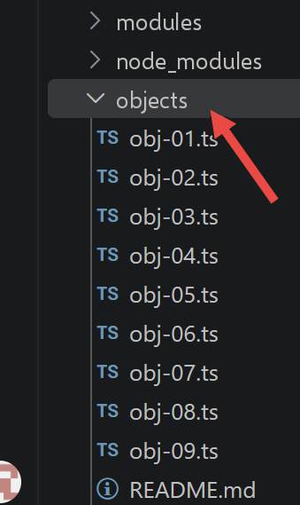
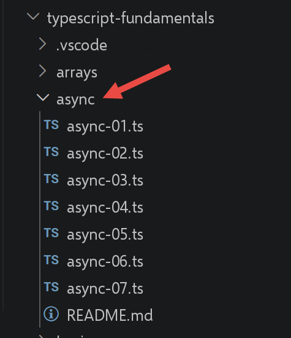
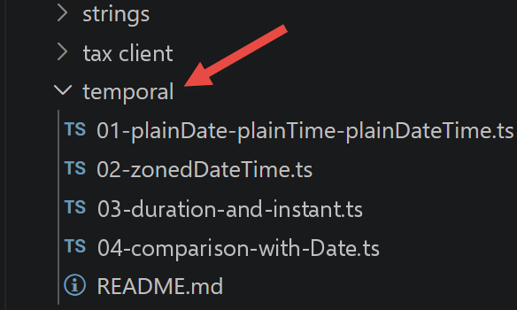

3. Die Grundlagen
3.1. Die Grundlagen von TypeScript
Hinweis: Im Folgenden bezeichnet der Begriff [TypeScript] die Sprache in der Definition von Version 6, einer typisierten Obermenge von ECMAScript 2026.
Die Skripte dieses Kapitels befinden sich im Ordner [basics] des Projekts.

3.1.1. Skript [basics-01]
Dieses Skript verwendet das Einführungsbeispiel aus dem ursprünglichen JavaScript-Kurs, übersetzt und als TypeScript typisiert:
| /* eslint-disable no-constant-condition */
'use strict';
// dies ist ein Kommentar
// Konstante
const name: string = "dupont";
// eine Bildschirmausgabe
console.log("name : ", name);
// ein Array mit Elementen unterschiedlicher Typen
// [any], weil dieses Array bewusst mehrere Typen mischt (Demonstration)
const array: any[] = ["one", "two", 3, 4];
// seine Elementanzahl
let n: any = array.length;
// eine Schleife
for (let i = 0; i < n; i++) {
console.log("array[", i, "] = ", array[i]);
}
// Initialisierung von 2 Variablen mit dem Inhalt eines Arrays
let [string1, string2]: string[] = ["string1", "string2"];
// Verkettung der 2 Zeichenketten
const string3 = string1 + string2;
// Ergebnis anzeigen
console.log([string1, string2, string3]);
// Verwendung einer Funktion
display(string1);
// der Typ einer Variablen lässt sich ermitteln
displayType("n", n);
displayType("string1", string1);
displayType("array", array);
// der Typ einer Variablen kann sich während der Ausführung ändern
// [n] ist oben mit [any] typisiert: genau das erlaubt es TypeScript,
// diese spätere Neuzuweisung wie in JavaScript zu akzeptieren
n = "has changed";
displayType("n", n);
// eine Funktion kann ein Ergebnis zurückgeben
let res1: any = f1(4);
console.log("res1=", res1);
// eine Funktion kann ein Array von Werten zurückgeben
let res2: any, res3: any;
[res1, res2, res3] = f2();
console.log("(res1,res2,res3)=", [res1, res2, res3]);
// wir hätten diese Werte auch in einem Array abrufen können
let t: any[] = f2();
for (let i = 0; i < t.length; i++) {
console.log("t[", i, "]=", t[i]);
}
// einige Tests
for (let i = 0; i < t.length; i++) {
// zeigt nur die Zeichenketten an
if (typeof (t[i]) === "string") {
console.log("t[", i, "]=", t[i]);
}
}
// Vergleichsoperatoren == und ===
if ("2" == (2 as any)) {
console.log("with the == operator, the string 2 is equal to the integer 2");
} else {
console.log("with the == operator, the string 2 is not equal to the integer 2");
}
if (("2" as any) === 2) {
console.log("with the === operator, the string 2 is equal to the integer 2");
} else {
console.log("with the === operator, the string 2 is not equal to the integer 2");
}
// weitere Tests
for (let i = 0; i < t.length; i++) {
// zeigt nur die ganzen Zahlen >10 an
if (typeof (t[i]) === "number" && Math.floor(t[i]) === t[i] && t[i] > 10) {
console.log("t[", i, "]=", t[i]);
}
}
// eine while-Schleife
t = [8, 5, 0, -2, 3, 4];
let i = 0;
let sum = 0;
while (i < t.length && t[i] > 0) {
console.log("t[", i, "]=", t[i]);
sum += t[i];
i++;
}
console.log("sum=", sum);
// Ende des Programms, da kein ausführbarer Code mehr folgt
//Anzeige
//----------------------------------
function display(str: string): void {
// zeigt str an
console.log("string=", str);
}
//displayType
//----------------------------------
function displayType(name: string, variable: unknown): void {
// zeigt den Typ der Variablen an
console.log("type[variable ", name, "]=", typeof (variable));
}
//----------------------------------
function f1(param: number): number {
// addiert 10 zu param
return param + 10;
}
//----------------------------------
function f2(): any[] {
// gibt 3 Werte zurück
return ["one", 0, 100];
}
|
Kommentieren wir diesen Code:
- Zeile 5: [const name: string = "dupont"] – In TypeScript können Sie den Typ einer Variablen explizit annotieren, indem Sie
type nach ihrem Namen angeben. Hier ist name im gesamten Programm garantiert eine Zeichenkette;
- Zeile 10: [const array: any[] = ...] – Dieses Array mischt absichtlich Zeichenketten und Zahlen. Der Typ
any[] weist TypeScript an, die Typen der Elemente nicht zu prüfen: Das ist eine ausdrückliche Entscheidung, die sich von einer fehlenden Typisierung unterscheidet (die der Strict-Modus verbietet);
- Zeile 12: [let n: any = array.length] –
n ist als any typisiert, weil ihr später (Zeile 32) eine Zeichenkette zugewiesen wird, nachdem ihr zuvor eine Zahl zugewiesen wurde. In JavaScript kann eine Variable ihren Typ beliebig ändern; in TypeScript ist das nur erlaubt, wenn es ausdrücklich mit any (oder einem Union-Typ, etwa number | string) zugelassen wird;
- Zeile 54: ["2" == (2 as any)] – TypeScript verbietet es standardmäßig, zwei Werte inkompatibler Typen (Zeichenkette und Zahl) mit
== zu vergleichen. Der Ausdruck (2 as any) ist eine Typzusicherung (Type Assertion): Wir sagen TypeScript ausdrücklich: „Behandle diesen Wert als any; prüfe seinen Typ hier nicht“, was die für den Operator == typische Typumwandlung (Coercion) bewusst veranschaulicht;
- Zeile 93: die Funktion [function displayType(name: string, variable: unknown): void] typisiert ihren zweiten Parameter als
unknown statt als any. Im Gegensatz zu any verbietet unknown die Verwendung des Werts ohne vorherige Prüfung – hier verwenden wir einfach typeof(variable), was auch bei unknown erlaubt ist;
- Zeilen 86–108: Funktionen haben jetzt einen expliziten Rückgabetyp (: number, : void ... usw.), der nach der Parameterliste geschrieben wird.
Führen wir dieses Skript aus:
npx tsx basics/basics-01.ts
Ausführungsergebnis:
| name : dupont
array[ 0 ] = one
array[ 1 ] = two
array[ 2 ] = 3
array[ 3 ] = 4
[ 'string1', 'string2', 'string1string2' ]
string= string1
type[variable n ]= number
type[variable string1 ]= string
type[variable array ]= object
type[variable n ]= string
res1= 14
(res1,res2,res3)= [ 'one', 0, 100 ]
t[ 0 ]= one
t[ 1 ]= 0
t[ 2 ]= 100
t[ 0 ]= one
with the == operator, the string 2 is equal to the integer 2
with the === operator, the string 2 is not equal to the integer 2
t[ 2 ]= 100
t[ 0 ]= 8
t[ 1 ]= 5
sum= 13
|
3.1.2. Skript [basics-02]
Das Skript [basics-02] demonstriert die Verwendung der Schlüsselwörter [let] und [const]:
| 'use strict';
// zur Initialisierung einer Variablen verwendet man let oder const
// let für Variablen
let x: number = 4;
x++;
console.log(x);
// const für Konstanten
const y: number = 10;
x += y;
// verboten
y++;
|
- [let] deklariert eine Variable, deren Wert sich ändern kann (Zeilen 4–5);
- [const] deklariert eine Konstante, deren Wert sich nicht ändern kann (Zeile 8);
- Zeile 11: Es wird versucht, der Konstanten y mit y++ einen neuen Wert zuzuweisen. Hier bietet TypeScript einen echten Vorteil gegenüber JavaScript.
Noch vor der Ausführung des Skripts meldet die Typprüfung den Fehler:
Ausführungsergebnis:
| basics/basics-02.ts(11,1): error TS2588: Cannot assign to 'y' because it is a constant.
|
Im ursprünglichen JavaScript wäre derselbe Fehler erst zur Laufzeit erkannt worden. Führen wir dieses Skript dennoch mit tsx aus (das den Code ohne vorherige Typprüfung ausführt, im Gegensatz zu tsc), um den Fehler so zu sehen, wie JavaScript ihn tatsächlich auslöst:
npx tsx basics/basics-02.ts
Ausführungsergebnis:
| 5
TypeError: Assignment to constant variable.
at basics/basics-02.ts:11:1
|
Wichtig: tsx transpiliert TypeScript ohne Typprüfung in JavaScript (wie Babel), für eine schnelle Ausführung während der Entwicklung. Deshalb läuft dieses Skript (und stürzt zur Laufzeit ab), obwohl es sich nicht mit tsc kompilieren lässt. Um über den Fehler vor der Ausführung informiert zu werden, verwenden Sie VSCode (das im Hintergrund tsc ausführt) oder den Befehl npm run check.
3.1.3. Skript [basics-03]
Veranschaulicht den Gültigkeitsbereich globaler Variablen, die innerhalb einer Funktion sichtbar sind:
| 'use strict';
// Gültigkeitsbereich von Variablen
let count: number = 1;
function doSomething(): void {
// count ist hier bekannt
console.log("count=", count);
}
// Aufruf
doSomething();
|
npx tsx basics/basics-03.ts
Ausführungsergebnis:
3.1.4. Skript [basics-04]
Eine lokale Variable innerhalb einer Funktion verdeckt (maskiert) eine globale Variable mit demselben Namen:
| 'use strict';
// Gültigkeitsbereich von Variablen
const count: number = 1;
function doSomething(): void {
// die lokale Variable verdeckt die globale Variable
const count = 2;
console.log("count inside function=", count);
}
// globale Variable
console.log("count outside function=", count);
// lokale Variable
doSomething();
|
npx tsx basics/basics-04.ts
Ausführungsergebnis:
| count outside function= 1
count inside function= 2
|
3.1.5. Skript [basics-05]
Eine lokale Variable (const count innerhalb der Funktion) ist nicht sichtbar außerhalb dieser Funktion:
| 'use strict';
// Gültigkeitsbereich von Variablen
function doSomething(): void {
// funktionslokale Variable
const count = 2;
console.log("count inside function=", count);
}
// hier ist count nicht bekannt
console.log("count outside function=", count);
doSomething();
|
Auch hier erkennt TypeScript das Problem beim Kompilieren – das Skript muss nicht ausgeführt werden, um es zu bemerken:
Ausführungsergebnis:
| basics/basics-05.ts(9,40): error TS2304: Cannot find name 'count'.
|
Und bei Ausführung mit tsx:
npx tsx basics/basics-05.ts
Ausführungsergebnis:
| ReferenceError: count is not defined
at basics/basics-05.ts:9:40
|
3.1.6. Skript [basics-06]
Dieses Skript vergleicht den Blockgültigkeitsbereich ([let], [const]) mit dem fehlenden Blockgültigkeitsbereich ([var]):
| 'use strict';
// das Schlüsselwort [let] definiert eine blockbezogene Variable
{
// die Variable [count] ist nur in diesem Block bekannt
let count: number = 1;
console.log("count=", count);
}
// hier ist die Variable [count] nicht bekannt
count++;
// das Schlüsselwort [const] definiert eine blockbezogene Variable
{
// die Variable [count2] ist nur in diesem Block bekannt
const count2: number = 1;
console.log("count=", count2);
}
// hier ist die Variable [count2] nicht bekannt
count2++;
// das Schlüsselwort [var] definiert keine blockbezogene Variable
{
// die Variable [count3] ist global bekannt
var count3: number = 1;
console.log("count=", count3);
}
// hier ist die Variable [count3] bekannt
count3++;
|
- Eine Variable, die mit [let] oder [const] innerhalb eines Blocks { } deklariert wird, existiert nur innerhalb dieses Blocks;
- eine Variable, die mit [var] deklariert wird, ignoriert Blöcke: Sie bleibt in der gesamten umgebenden Funktion (oder dem gesamten Skript) sichtbar – das war vor ECMAScript 2015 das einzige verfügbare Verhalten, was die Ursache vieler Fehler war, daher die Empfehlung, stets [let]/[const] zu bevorzugen.
Kompilierung:
Ausführungsergebnis:
| basics/basics-06.ts(9,1): error TS2552: Cannot find name 'count'. Did you mean 'count3'?
basics/basics-06.ts(18,1): error TS2552: Cannot find name 'count2'. Did you mean 'count3'?
|
Ausführung (das Skript stoppt beim ersten auftretenden Fehler, bei count):
npx tsx basics/basics-06.ts
Ausführungsergebnis:
| count= 1
ReferenceError: count is not defined
at basics/basics-06.ts:9:1
|
3.1.7. Skript [basics-07]
Überblick über die wichtigsten TypeScript-Typen:
| 'use strict';
// JS-Datentypen
const var1: number = 10;
const var2: string = "abc";
const var3: boolean = true;
const var4: number[] = [1, 2, 3];
const var5: { name: string } = {
name: 'axèle'
};
const var6: () => number = function () {
return +3;
}
// Anzeige der Typen
console.log("typeof(var1)=", typeof (var1));
console.log("typeof(var2)=", typeof (var2));
console.log("typeof(var3)=", typeof (var3));
console.log("typeof(var4)=", typeof (var4));
console.log("typeof(var5)=", typeof (var5));
console.log("typeof(var6)=", typeof (var6));
|
- [var5: { name: string }] – ein Inline-Objekttyp: Die erwartete Form des Objekts wird direkt in geschweiften Klammern beschrieben, ohne ein separates Interface deklarieren zu müssen;
- [var6: () => number] – ein Funktionstyp: eine Funktion ohne Parameter, die eine Zahl zurückgibt;
- zur Laufzeit verhält sich
typeof weiterhin wie in JavaScript (es ignoriert Typannotationen, die nur zur Kompilierzeit existieren und danach verschwinden): Deshalb liefern typeof(var4) (ein Array) und typeof(var5) (ein Objekt) beide "object" zurück.
npx tsx basics/basics-07.ts
Ausführungsergebnis:
| typeof(var1)= number
typeof(var2)= string
typeof(var3)= boolean
typeof(var4)= object
typeof(var5)= object
typeof(var6)= function
|
3.1.8. Skript [basics-08]
Sowohl implizite als auch explizite Typumwandlungen bleiben wie in JavaScript (TypeScript ändert die Ausführung nicht):
| 'use strict';
// implizite Typänderungen
// Typ -> bool
console.log("---------------[Implicit conversion to a boolean]------------------------------");
showBool("abcd");
showBool("");
showBool([1, 2, 3]);
showBool([]);
showBool(null);
showBool(0.0);
showBool(0);
showBool(4.6);
showBool({});
showBool(undefined);
// [any], weil diese Funktion bewusst jeden Typ als Eingabe akzeptiert
function showBool(data: any): void {
// die Konvertierung von data in einen booleschen Wert erfolgt im folgenden Test automatisch
console.log("[data=", data, "], [type(data)]=", typeof (data), "[boolean value(data)]=", data ? true : false);
}
// implizite Typänderungen in einen numerischen Typ
console.log("---------------[Implicit conversion to a number]------------------------------");
showNumber("12");
showNumber("45.67");
showNumber("abcd");
function showNumber(data: any): void {
// data + 1 funktioniert nicht, da JS dann eine Zeichenkettenverkettung statt einer Addition ausführt
const number = data * 1;
console.log("[data=", data, "], [type(data)]=", typeof (data), "[number]=", number, "[type(number)]=", typeof (number));
}
// explizite Typänderungen in einen booleschen Wert
console.log("---------------[Explicit conversion to a boolean]------------------------------");
showBool2("abcd");
showBool2("");
showBool2([1, 2, 3]);
showBool2([]);
showBool2(null);
showBool2(0.0);
showBool2(0);
showBool2(4.6);
showBool2({});
showBool2(undefined);
function showBool2(data: any): void {
// die Konvertierung von data in einen booleschen Wert erfolgt im folgenden Test explizit
console.log("[", data, "], [type(data)]=", typeof (data), "[boolean value(data)]=", Boolean(data));
}
// explizite Typänderungen in Number
console.log("---------------[Explicit conversion to a number]------------------------------");
showNumber2("12.45");
showNumber2(67.8);
showNumber2(true);
showNumber2(null);
function showNumber2(data: any): void {
const number = Number(data);
console.log("[data=", data, "], [type(data)]=", typeof (data), "[number]=", number, "[type(number)]=", typeof (number));
}
// in String
console.log("---------------[Explicit conversion to a string]------------------------------");
showString(5);
showString(6.7);
showString(false);
showString(null);
function showString(data: any): void {
const str = String(data);
console.log("[data=", data, "], [type(data)]=", typeof (data), "[string]=", str, "[type(string)]=", typeof (str));
}
// einige unerwartete implizite Konvertierungen
console.log("---------------[Other cases]------------------------------");
const string1: string = '1000.78';
// standardmäßig Zeichenkettenverkettung
const data1 = string1 + 1.034;
console.log("data1=", data1, "type=", typeof (data1));
const data2 = 1.034 + string1;
console.log("data2=", data2, "type=", typeof (data2));
// explizite Konvertierung in eine Zahl
const data3 = Number(string1) + 1.034;
console.log("data3=", data3, "type=", typeof (data3));
// true wird in die Zahl 1 konvertiert
const data4 = (true as any) * 1.18;
console.log("data4=", data4, "type=", typeof (data4));
// false wird in die Zahl 0 konvertiert
const data5 = (false as any) * 1.18;
console.log("data5=", data5, "type=", typeof (data5));
|
- Alle Funktionen in diesem Skript deklarieren ihren
data -Parameter als any: Das ist beabsichtigt, da gerade gezeigt werden soll, wie sich dieselbe Funktion bei Werten sehr unterschiedlicher Typen verhält (Zeichenkette, Array, null, undefined usw.);
- [Boolean(data)], [Number(data)] und [String(data)] sind explizite Umwandlungen – und damit den impliziten stets vorzuziehen, da sie vorhersehbarer und lesbarer sind;
- letzter Block:
string1 + 1.034 ergibt eine Zeichenkettenverkettung (der +-Operator bevorzugt die Verkettung, wenn auf einer der beiden Seiten eine Zeichenkette steht), während Number(string1) + 1.034 eine numerische Addition ergibt.
npx tsx basics/basics-08.ts
Ausführungsergebnis:
| ---------------[Implicit conversion to a boolean]------------------------------
[data= abcd ], [type(data)]= string [boolean value(data)]= true
[data= ], [type(data)]= string [boolean value(data)]= false
[data= [ 1, 2, 3 ] ], [type(data)]= object [boolean value(data)]= true
[data= [] ], [type(data)]= object [boolean value(data)]= true
[data= null ], [type(data)]= object [boolean value(data)]= false
[data= 0 ], [type(data)]= number [boolean value(data)]= false
[data= 0 ], [type(data)]= number [boolean value(data)]= false
[data= 4.6 ], [type(data)]= number [boolean value(data)]= true
[data= {} ], [type(data)]= object [boolean value(data)]= true
[data= undefined ], [type(data)]= undefined [boolean value(data)]= false
---------------[Implicit conversion to a number]------------------------------
[data= 12 ], [type(data)]= string [number]= 12 [type(number)]= number
[data= 45.67 ], [type(data)]= string [number]= 45.67 [type(number)]= number
[data= abcd ], [type(data)]= string [number]= NaN [type(number)]= number
---------------[Explicit conversion to a boolean]------------------------------
[ abcd ], [type(data)]= string [boolean value(data)]= true
[ ], [type(data)]= string [boolean value(data)]= false
[ [ 1, 2, 3 ] ], [type(data)]= object [boolean value(data)]= true
[ [] ], [type(data)]= object [boolean value(data)]= true
[ null ], [type(data)]= object [boolean value(data)]= false
[ 0 ], [type(data)]= number [boolean value(data)]= false
[ 0 ], [type(data)]= number [boolean value(data)]= false
[ 4.6 ], [type(data)]= number [boolean value(data)]= true
[ {} ], [type(data)]= object [boolean value(data)]= true
[ undefined ], [type(data)]= undefined [boolean value(data)]= false
---------------[Explicit conversion to a number]------------------------------
[data= 12.45 ], [type(data)]= string [number]= 12.45 [type(number)]= number
[data= 67.8 ], [type(data)]= number [number]= 67.8 [type(number)]= number
[data= true ], [type(data)]= boolean [number]= 1 [type(number)]= number
[data= null ], [type(data)]= object [number]= 0 [type(number)]= number
---------------[Explicit conversion to a string]------------------------------
[data= 5 ], [type(data)]= number [string]= 5 [type(string)]= string
[data= 6.7 ], [type(data)]= number [string]= 6.7 [type(string)]= string
[data= false ], [type(data)]= boolean [string]= false [type(string)]= string
[data= null ], [type(data)]= object [string]= null [type(string)]= string
---------------[Other cases]------------------------------
data1= 1000.781.034 type= string
data2= 1.0341000.78 type= string
data3= 1001.814 type= number
data4= 1.18 type= number
data5= 0 type= number
|
3.1.9. Skript [basics-09]
[NEW since 2019] Dieses Skript zeigt Operatoren, die in ECMAScript 2020–2021 eingeführt wurden und heute sehr häufig verwendet werden:
| 'use strict';
// ========================================================================
// [NEU seit 2019] einige moderne Operatoren, die im Alltag weit verbreitet sind
// ========================================================================
// ------------------------------------------------------------------------
// 1) der Nullish-Coalescing-Operator [??] (ECMAScript 2020)
// ------------------------------------------------------------------------
// mit [||] löst ein "falsy"-Wert (0, "", false, NaN, ...) den Standardwert aus,
// was nicht immer gewünscht ist
const quantity1: number = 0;
console.log("with || : quantity1 || 10 =", quantity1 || 10); // -> 10 (Bug! 0 ist dennoch eine gültige Menge)
// [??] löst den Standardwert nur aus, wenn der Wert null oder undefined ist
console.log("with ?? : quantity1 ?? 10 =", quantity1 ?? 10); // -> 0 (korrekt)
const quantity2: number | null = null;
console.log("quantity2 ?? 10 =", quantity2 ?? 10); // -> 10 (quantity2 ist null)
const quantity3: number | undefined = undefined;
console.log("quantity3 ?? 10 =", quantity3 ?? 10); // -> 10 (quantity3 ist undefined)
// ------------------------------------------------------------------------
// 2) Optional Chaining [?.] (ECMAScript 2020)
// ------------------------------------------------------------------------
// vor 2020 musste man, um sicher auf eine tiefe Eigenschaft zuzugreifen,
// jede Ebene testen: if (person && person.address && person.address.city) ...
// gemeinsame Schnittstelle: [address] ist optional (person2 hat keine)
interface PersonWithOptionalAddress {
name: string;
address?: { city: string };
}
const person1: PersonWithOptionalAddress = {
name: "Dupont",
address: {
city: "Nantes"
}
};
const person2: PersonWithOptionalAddress = {
name: "Martin"
// keine Adresse!
};
// [?.] bricht die Auswertung ab und liefert [undefined], sobald ein Zwischenschritt null oder undefined ist,
// statt einen Fehler "Cannot read properties of undefined" auszulösen
console.log("person1 city =", person1.address?.city);
console.log("person2 city =", person2.address?.city); // -> undefined, kein Fehler
// man kann [?.] und [??] kombinieren, um einen Ersatzwert anzugeben
console.log("person2 city (with default) =", person2.address?.city ?? "unknown city");
// [?.] funktioniert auch bei Methodenaufrufen...
interface ObjectWithMethod {
sayHello(): string;
sayGoodbye?(): string;
}
const objectWithMethod: ObjectWithMethod = {
sayHello() {
return "hello!";
}
};
console.log("existing method call :", objectWithMethod.sayHello?.());
console.log("missing method call :", objectWithMethod.sayGoodbye?.()); // -> undefined, kein Fehler
// ...und beim Zugriff auf ein Array-Element
const arrayOrNull: number[] | null = null;
console.log("element of a missing array :", arrayOrNull?.[0]); // -> undefined
// ------------------------------------------------------------------------
// 3) die logischen Zuweisungsoperatoren [||=], [&&=], [??=] (ECMAScript 2021)
// ------------------------------------------------------------------------
// diese Operatoren verbinden einen logischen Test und eine Zuweisung in einem einzigen Ausdruck
// [a ??= b] ist gleichbedeutend mit [a = a ?? b]: weist b nur zu, wenn a null/undefined ist
interface Configuration {
delay: number;
page?: number;
}
const config: Configuration = { delay: 0, page: undefined };
config.delay ??= 1000; // delay ist bereits 0 (gültiger Wert) -> bleibt unverändert
config.page ??= 1; // page ist undefined -> wird zu 1
console.log("config after ??= :", config);
// [a ||= b] ist gleichbedeutend mit [a = a || b]: weist b zu, wenn a "falsy" ist (0, "", null, undefined, false...)
let displayedMessage: string = "";
displayedMessage ||= "default message";
console.log("displayedMessage after ||= :", displayedMessage);
// [a &&= b] ist gleichbedeutend mit [a = a && b]: weist b nur zu, wenn a bereits "truthy" ist
interface LoggedInUser {
name: string;
loggedIn?: boolean;
}
let loggedInUser: LoggedInUser | null = { name: "Ana" };
loggedInUser &&= { ...loggedInUser, loggedIn: true };
console.log("loggedInUser after &&= :", loggedInUser);
// ------------------------------------------------------------------------
// 4) numerische Trennzeichen [_] (ECMAScript 2021)
// ------------------------------------------------------------------------
// rein optisch: macht große Zahlen im Quellcode lesbarer
const oneMillion: number = 1_000_000;
const bankCard: bigint = 1234_5678_9012_3456n; // hier kombiniert mit einem BigInt (siehe unten)
console.log("oneMillion =", oneMillion);
console.log("bankCard =", bankCard);
// ------------------------------------------------------------------------
// 5) der Typ [BigInt] (ECMAScript 2020)
// ------------------------------------------------------------------------
// der JavaScript-Typ [number] verliert jenseits von etwa 2^53 an Genauigkeit
console.log("Number.MAX_SAFE_INTEGER =", Number.MAX_SAFE_INTEGER);
console.log("Number.MAX_SAFE_INTEGER + 1 =", Number.MAX_SAFE_INTEGER + 1);
console.log("Number.MAX_SAFE_INTEGER + 2 =", Number.MAX_SAFE_INTEGER + 2); // -> gleiches Ergebnis wie bei +1, ungenau!
// ein [BigInt] wird mit einem abschließenden [n] geschrieben oder mit BigInt(...) erzeugt
const bigNumber1: bigint = 9007199254740993n;
const bigNumber2: bigint = BigInt("9007199254740993");
console.log("bigNumber1 =", bigNumber1, ", type =", typeof (bigNumber1));
console.log("bigNumber1 === bigNumber2 :", bigNumber1 === bigNumber2);
// ein BigInt und eine number lassen sich in einer Berechnung nicht direkt mischen
try {
console.log((bigNumber1 as any) + 1); // löst einen [TypeError] aus
} catch (error: any) {
console.log("expected error :", error.message);
}
// eine explizite Konvertierung ist erforderlich
console.log("bigNumber1 + 1n =", bigNumber1 + 1n);
|
Besprechen wir die wichtigsten Neuerungen:
- [??], Null-Coalescing (ECMAScript 2020): Im Gegensatz zu [||], das für jeden „falschen“ Wert (0, "", false ...) seinen Standardwert zurückgibt, [??] wird nur ausgelöst, wenn der Wert null oder undefined ist. Das ist die richtige Wahl für eine Menge, die legitimerweise den Wert 0 haben kann;
- [?.], Optional Chaining (ECMAScript 2020): Beendet die Auswertung und gibt
undefined zurück, sobald ein Zwischenschritt null oder undefined ist, statt einen Fehler auszulösen. Funktioniert auch bei Methodenaufrufen (object.method?.()) und bei der Indizierung (array?.[0]);
- [||=], [&&=], [??=], logische Zuweisungsoperatoren (ECMAScript 2021): Sie kombinieren einen logischen Test und eine Zuweisung in einem einzigen Ausdruck (a ??= b entspricht a = a ?? b);
- die numerischen Trennzeichen 1_000_000 (ECMAScript 2021): rein optisch, sie machen große Zahlen im Quellcode lesbarer;
- der Typ [BigInt] (ECMAScript 2020), gekennzeichnet durch ein abschließendes „n“ (9007199254740993n): Im Gegensatz zu
number verliert er jenseits von Number.MAX\_SAFE\_INTEGER keine Genauigkeit. Ein BigInt und eine number dürfen nicht direkt in einer Berechnung gemischt werden, wie der try/catch-Block des Skripts zeigt.
npx tsx basics/basics-09.ts
Ausführungsergebnis:
| with || : quantity1 || 10 = 10
with ?? : quantity1 ?? 10 = 0
quantity2 ?? 10 = 10
quantity3 ?? 10 = 10
person1 city = Nantes
person2 city = undefined
person2 city (with default) = unknown city
existing method call : hello!
missing method call : undefined
element of a missing array : undefined
config after ??= : { delay: 0, page: 1 }
displayedMessage after ||= : default message
loggedInUser after &&= : { name: 'Ana', loggedIn: true }
oneMillion = 1000000
bankCard = 1234567890123456n
Number.MAX_SAFE_INTEGER = 9007199254740991
Number.MAX_SAFE_INTEGER + 1 = 9007199254740992
Number.MAX_SAFE_INTEGER + 2 = 9007199254740992
bigNumber1 = 9007199254740993n , type = bigint
bigNumber1 === bigNumber2 : true
expected error : Cannot mix BigInt and other types, use explicit conversions
bigNumber1 + 1n = 9007199254740994n
|
3.1.10. Fazit
Wir haben die Grundlagen des TypeScript-Typsystems behandelt: Typannotationen für Variablen, Funktionsparameter und Rückgabewerte; die Typen any und unknown; die wichtigsten modernen Operatoren der Sprache (??, ?., ||=/&&=/??=); und den Typ BigInt. Das nächste Kapitel behandelt Arrays.
3.2. Arrays
Die Skripte dieses Kapitels befinden sich im Ordner [arrays] des Projekts:

3.2.1. Skript [arr-01]
Das folgende Skript veranschaulicht eine zentrale Eigenschaft der TypeScript-/JavaScript-Arrays: Sie sind Objekte, die per Referenz gehandhabt werden (über einen Zeiger), und keine Daten, die bei jeder Zuweisung kopiert werden.
| 'use strict';
// ein Array ist ein Objekt, das über seine Adresse behandelt wird
const arr1: number[] = [1, 2, 3];
// Kopie von Adressen
const arr2: number[] = arr1;
// arr1 und arr2 zeigen auf dasselbe Array
console.log("arr1===arr2 :", arr1 === arr2);
// das Array kann sowohl über arr1 als auch über arr2 geändert werden
arr2[1] = 10;
console.log("arr1=", arr1);
console.log("arr2=", arr2);
|
Ausführungsergebnis:
| arr1===arr2 : true
arr1= [ 1, 10, 3 ]
arr2= [ 1, 10, 3 ]
|
- arr1===arr2 ergibt true: Beide Variablen zeigen auf dasselbe Array im Speicher;
- eine Änderung des Arrays über
arr2 ändert daher auch das, was über arr1 sichtbar ist – das ist eine direkte Folge davon, dass arr1 und arr2 auf dieselben Daten verweisen.
3.2.2. Skript [arr-02]
Dieses Skript zeigt, dass ein TypeScript-Array keine feste Größe hat und sich eher wie eine dynamische indizierte Liste verhält als wie ein Array einer klassischen kompilierten Sprache:
| 'use strict';
// Array
// [any], weil dieses Array Lücken und Werte unterschiedlicher Typen enthalten wird
const arr: any[] = [];
console.log("arr=", arr, ", length=[", arr.length, "]");
console.log("-------------------------------");
// Initialisierung eines Elements
arr[3] = 100;
arr[1] = "eight";
// Array
console.log("arr=", arr, ", length=[", arr.length, "]");
console.log("-------------------------------");
// toString
console.log("arr.toString=[", arr.toString(), "]");
console.log("-------------------------------");
// die Schlüssel des Arrays sind seine Indizes
for (let key of arr.keys()) {
console.log("key=[", key, "], value=[", arr[key], "]");
}
console.log("-------------------------------");
// die Werte des Arrays
for (let value of arr.values()) {
console.log("value=[", value, "]");
}
|
- Zeile 5: const arr: any[] = [] – ein leeres Array, typisiert als
any[] , weil es absichtlich „Lücken“ enthalten wird;
- Zeilen 9–10: Element Nr. 3 kann initialisiert werden, auch wenn die Elemente 0, 1 und 2 noch nicht existieren – sie werden zu „Lücken“ (empty items), die sich von
undefined unterscheiden, auch wenn sie oft ähnlich angezeigt werden;
- Zeilen 18–20: Die Methoden keys() und values() liefern Iteratoren zurück, die mit for...of durchlaufen werden können.
Ausführungsergebnis:
| arr= [] , length=[ 0 ]
-------------------------------
arr= [ <1 empty item>, 'eight', <1 empty item>, 100 ] , length=[ 4 ]
-------------------------------
arr.toString=[ ,eight,,100 ]
-------------------------------
key=[ 0 ], value=[ undefined ]
key=[ 1 ], value=[ eight ]
key=[ 2 ], value=[ undefined ]
key=[ 3 ], value=[ 100 ]
-------------------------------
value=[ undefined ]
value=[ eight ]
value=[ undefined ]
value=[ 100 ]
|
3.2.3. Skript [arr-03]
Dieses Skript demonstriert die wichtigsten Methoden zum Bearbeiten eines Arrays: Durchlaufen, Hinzufügen und Entfernen von Elementen.
| 'use strict';
// ein Array kann Daten unterschiedlicher Typen enthalten
// [any], weil dieses Array bewusst mehrere Typen mischt (Demonstration)
const arr: any[] = [1, 2, "one", "two", true, [10, 20], { prop1: 10, prop2: "abc" }];
// console.log kann den Inhalt eines Arrays anzeigen
show(1);
console.log("arr=", arr);
show(2);
// Durchlaufen des Arrays mit foreach
arr.forEach(element => {
console.log("element=", element, typeof (element));
});
show("2b");
// eine weitere Syntax für dasselbe
arr.forEach(function (element) {
console.log("element=", element, typeof (element));
});
show(3);
// Durchlaufen des Arrays mit for
for (let i = 0; i < arr.length; i++) {
console.log("i=", i, "arr[i]=", arr[i]);
}
show(4);
// Änderung von arr[i]
arr[5] = [];
// Anzeige
console.log("arr=", arr);
show(5);
// das letzte Element des Arrays entfernen
let element = arr.pop();
console.log("element=", element, "arr=", arr);
show(6);
// ein Element am Ende des Arrays hinzufügen
arr.push('xyz');
console.log("arr=", arr);
show(7);
// ein Element am Anfang des Arrays hinzufügen
arr.unshift(1000);
console.log("arr=", arr);
show(8);
// das 1. Element entfernen
element = arr.shift();
console.log("element=", element, "arr=", arr);
show(9);
// Element Nr. 2 aus dem Array entfernen
element = arr.splice(2, 1);
console.log("element=", element, "arr=", arr);
show(10);
// zwei Elemente ab Element Nr. 1 aus dem Array entfernen
element = arr.splice(1, 2);
console.log("element=", element, "arr=", arr);
// Funktion
function show(param: number | string): void {
console.log("[", param, ":::::::::::::::::::::::::::::::::::::::::::::::::::::::::::::::::: ]");
}
|
- Zeile 4: Obwohl
arr als const deklariert ist, kann sein Inhalt geändert werden (Zeile 25, arr[5] = []). Konstant ist der Zeiger auf das Array, nicht das Array selbst;
- Zeilen 10–12:
forEach durchläuft das Array und ruft für jedes Element die als Parameter übergebene Funktion auf – hier geschrieben in Pfeilnotation: element => { ... };
- Zeilen 15–17: dasselbe, geschrieben in der traditionellen function-Syntax – die beiden Formen sind gleichwertig;
- Die Methoden pop(), push(), unshift(), shift() und splice() verändern das Array direkt (sie haben Seiteneffekte): Das ist ein wichtiger Unterschied zu den „unveränderlichen“ Methoden aus dem Skript arr-05.
Ausführungsergebnis (zur besseren Lesbarkeit in einer Zeile formatiert):
| [ 1 :::::::::::::::::::::::::::::::::::::::::::::::::::::::::::::::::: ]
arr= [ 1, 2, 'one', 'two', true, [ 10, 20 ], { prop1: 10, prop2: 'abc' } ]
[ 2 :::::::::::::::::::::::::::::::::::::::::::::::::::::::::::::::::: ]
element= 1 number
element= 2 number
element= one string
element= two string
element= true boolean
element= [ 10, 20 ] object
element= { prop1: 10, prop2: 'abc' } object
[ 2b :::::::::::::::::::::::::::::::::::::::::::::::::::::::::::::::::: ]
element= 1 number
element= 2 number
element= one string
element= two string
element= true boolean
element= [ 10, 20 ] object
element= { prop1: 10, prop2: 'abc' } object
[ 3 :::::::::::::::::::::::::::::::::::::::::::::::::::::::::::::::::: ]
i= 0 arr[i]= 1
i= 1 arr[i]= 2
i= 2 arr[i]= one
i= 3 arr[i]= two
i= 4 arr[i]= true
i= 5 arr[i]= [ 10, 20 ]
i= 6 arr[i]= { prop1: 10, prop2: 'abc' }
[ 4 :::::::::::::::::::::::::::::::::::::::::::::::::::::::::::::::::: ]
arr= [ 1, 2, 'one', 'two', true, [], { prop1: 10, prop2: 'abc' } ]
[ 5 :::::::::::::::::::::::::::::::::::::::::::::::::::::::::::::::::: ]
element= { prop1: 10, prop2: 'abc' } arr= [ 1, 2, 'one', 'two', true, [] ]
[ 6 :::::::::::::::::::::::::::::::::::::::::::::::::::::::::::::::::: ]
arr= [ 1, 2, 'one', 'two', true, [], 'xyz' ]
[ 7 :::::::::::::::::::::::::::::::::::::::::::::::::::::::::::::::::: ]
arr= [ 1000, 1, 2, 'one', 'two', true, [], 'xyz' ]
[ 8 :::::::::::::::::::::::::::::::::::::::::::::::::::::::::::::::::: ]
element= 1000 arr= [ 1, 2, 'one', 'two', true, [], 'xyz' ]
[ 9 :::::::::::::::::::::::::::::::::::::::::::::::::::::::::::::::::: ]
element= [ 'one' ] arr= [ 1, 2, 'two', true, [], 'xyz' ]
[ 10 :::::::::::::::::::::::::::::::::::::::::::::::::::::::::::::::::: ]
element= [ 2, 'two' ] arr= [ 1, true, [], 'xyz' ]
|
3.2.4. Skript [arr-04]
Dieses Skript führt die funktionalen Methoden zur Transformation eines Arrays ein: map, reduce, filter, find, findIndex, indexOf, sort.
| 'use strict';
// Methoden zur Array-Manipulation
// ein Array
const arr: number[] = [];
for (let i = 0; i < 10; i++) {
arr[i] = i * 10;
}
// Anzeige
console.log("arr=", arr);
// map
const arr2 = arr.map(element => {
return { prop1: element, prop2: element * element }
});
// Anzeige
console.log("arr=", arr);
console.log("arr2=", arr2);
// reduce ohne Anfangswert
const sum = arr.reduce((accumulator, currentValue) => accumulator + currentValue);
console.log("sum arr=", sum);
// reduce mit Anfangswert 10
const sum2 = arr.reduce((accumulator, currentValue) => accumulator + currentValue, 10);
console.log("sum2 arr=", sum2);
// filter
const arr4 = arr.filter((element) => {
return element > 50;
});
console.log("arr4=", arr4);
// find
const element1 = arr.find((element) => (element > 20));
console.log("element1=", element1);
// findIndex
const index1 = arr.findIndex((element) => (element === 20));
console.log("index1 20=", index1);
// indexOf
const index2 = arr.indexOf(30);
console.log("index2 30=", index2);
const index3 = arr.indexOf(31);
console.log("index3 31=", index3);
// lastIndexOf
const index4 = [4, 5, 4, 2].lastIndexOf(4);
console.log("index4 4=", index4);
// sort
const arr5 = [4, 5, 4, 2].sort();
console.log("arr5=", arr5);
// absteigend sortieren
const arr6 = [4, 5, 4, 2].sort((e1, e2) => {
if (e1 > e2) {
return -1;
}
else if (e1 === e2) {
return 0;
} else {
return +1;
}
});
console.log("arr6=", arr6);
|
- [map] transformiert jedes Element und gibt ein neues Array zurück – das Original bleibt unverändert;
- [reduce] „akkumuliert“ die Elemente nacheinander zu einem einzigen Ergebnis. Der erste Parameter seiner Funktion (accumulator) ist das bisher akkumulierte Ergebnis; der zweite (currentValue) ist das aktuelle Element. Ohne Anfangswert (Zeile 20) beginnt der Akkumulator mit dem ersten Element des Arrays;
- [filter] behält nur die Elemente, für die die Funktion einen „wahren“ Wert zurückgibt;
- [find] gibt das erste Element zurück, das das Kriterium erfüllt (oder
undefined), während [findIndex] dessen Index zurückgibt (oder -1);
- [sort] sortiert ohne Parameter in natürlicher Reihenfolge. Mit einer Vergleichsfunktion (e1, e2) => ... haben Sie die volle Kontrolle über die Reihenfolge: -1 , wenn e1 vor e2 stehen muss, +1 andernfalls und 0 bei Gleichstand.
Ausführungsergebnis:
| arr= [ 0, 10, 20, 30, 40, 50, 60, 70, 80, 90 ]
arr= [ 0, 10, 20, 30, 40, 50, 60, 70, 80, 90 ]
arr2= [
{ prop1: 0, prop2: 0 },
{ prop1: 10, prop2: 100 },
{ prop1: 20, prop2: 400 },
{ prop1: 30, prop2: 900 },
{ prop1: 40, prop2: 1600 },
{ prop1: 50, prop2: 2500 },
{ prop1: 60, prop2: 3600 },
{ prop1: 70, prop2: 4900 },
{ prop1: 80, prop2: 6400 },
{ prop1: 90, prop2: 8100 }
]
sum arr= 450
sum2 arr= 460
arr4= [ 60, 70, 80, 90 ]
element1= 30
index1 20= 2
index2 30= 3
index3 31= -1
index4 4= 2
arr5= [ 2, 4, 4, 5 ]
arr6= [ 5, 4, 4, 2 ]
|
3.2.5. Skript [arr-05]
[NEW since 2019] Dieses Skript demonstriert die neuen Array-Methoden, die zwischen 2022 und 2023 eingeführt wurden:
| 'use strict';
// ========================================================================
// [NEU seit 2019] neue Array-Methoden
// ========================================================================
// ------------------------------------------------------------------------
// 1) at(index) (ECMAScript 2022)
// ------------------------------------------------------------------------
// früher schrieb man, um auf das letzte Element eines Arrays zuzugreifen, arr[arr.length - 1]
const arr: number[] = [10, 20, 30, 40, 50];
console.log("arr[arr.length - 1] =", arr[arr.length - 1]); // alte Schreibweise
console.log("arr.at(-1) =", arr.at(-1)); // -> letztes Element, lesbarer
console.log("arr.at(-2) =", arr.at(-2)); // -> vorletztes Element
console.log("arr.at(0) =", arr.at(0)); // -> entspricht arr[0]
// .at funktioniert auch bei Zeichenketten
console.log("'hello'.at(-1) =", "hello".at(-1));
// ------------------------------------------------------------------------
// 2) findLast() und findLastIndex() (ECMAScript 2023)
// ------------------------------------------------------------------------
// symmetrisch zu find() / findIndex()
const numbers: number[] = [5, 12, 8, 21, 3, 17];
const lastEven = numbers.findLast(n => n % 2 === 0);
console.log("last even number =", lastEven); // -> 8
const lastEvenIndex = numbers.findLastIndex(n => n % 2 === 0);
console.log("index of the last even number =", lastEvenIndex);
// ------------------------------------------------------------------------
// 3) die "unveränderlichen" Methoden (ECMAScript 2023)
// ------------------------------------------------------------------------
// sort(), reverse(), splice() ändern das ursprüngliche Array (Seiteneffekt) - vgl. arr-04.js
// ihre "to..."-Entsprechungen liefern ein NEUES Array und lassen das Original unverändert
// [(number | string)[]], weil toSpliced() weiter unten Zeichenketten in dieses Array einfügt
const original: (number | string)[] = [4, 5, 4, 2];
// toSorted: wie sort(), aber ohne das Original zu ändern
const sorted = original.toSorted();
console.log("original =", original, " (unchanged)");
console.log("sorted =", sorted);
// toReversed: wie reverse(), aber ohne das Original zu ändern
const reversed = original.toReversed();
console.log("reversed =", reversed, ", original still =", original);
// toSpliced: wie splice(), aber ohne das Original zu ändern
// toSpliced(startIndex, countToDelete, ...einzufügende Elemente)
const modified: (number | string)[] = original.toSpliced(1, 2, "a", "b", "c");
console.log("modified =", modified, ", original still =", original);
// with(index, value): liefert eine Kopie des Arrays, in der ein einzelnes Element ersetzt wurde
const replaced = original.with(0, 999);
console.log("replaced =", replaced, ", original still =", original);
// ------------------------------------------------------------------------
// Nutzen: diese Methoden vermeiden Seiteneffekte, was
// in Frontend-Frameworks (React, Angular, Vue...) besonders geschätzt wird,
// wo häufig ein neuer Zustand erzeugt werden muss, ohne den alten zu ändern.
// ------------------------------------------------------------------------
|
- [at(index)] (ES2022): sicherer und gut lesbarer Zugriff, auch mit negativen Indizes (at(-1) = letztes Element) – besser lesbar als arr[arr.length - 1];
- [findLast]/[findLastIndex] (ES2023): wie find/findIndex, liefert aber das letzte Element, das die Bedingung erfüllt;
- [toSorted], [toReversed], [toSpliced], [with] (ES2023): die unveränderlichen Entsprechungen von sort, reverse, splice und der indizierten Zuweisung – sie geben ein neues Array zurück, ohne das Original zu verändern, im Gegensatz zu den Methoden aus dem Skript arr-03. Sehr nützlich in Frontend-Frameworks (React, Vue ...), in denen ein neuer Zustand erzeugt werden muss, ohne den alten zu verändern.
Ausführungsergebnis:
| arr[arr.length - 1] = 50
arr.at(-1) = 50
arr.at(-2) = 40
arr.at(0) = 10
'hello'.at(-1) = o
last even number = 8
index of the last even number = 2
original = [ 4, 5, 4, 2 ] (unchanged)
sorted = [ 2, 4, 4, 5 ]
reversed = [ 2, 4, 5, 4 ] , original still = [ 4, 5, 4, 2 ]
modified = [ 4, 'a', 'b', 'c', 2 ] , original still = [ 4, 5, 4, 2 ]
replaced = [ 999, 5, 4, 2 ] , original still = [ 4, 5, 4, 2 ]
|
3.2.6. Fazit
Die zentrale Erkenntnis dieses Kapitels ist: Ein Array ist ein Objekt, auf das über einen Zeiger verwiesen wird, hat keine feste Größe und verfügt über ein reichhaltiges Methodenangebot – einige davon verändern das Array direkt (push, sort …), während andere, neuere, konsequent ein neues Array zurückgeben (toSorted, with …). Das nächste Kapitel behandelt Objektliterale.
3.3. Objektliterale
Unter „Objektliteralen“ verstehen wir hier Objekte, die direkt im Code definiert werden, im Gegensatz zu Instanzen von [class] (behandelt im Kapitel „Klassen“). Die Skripte dieses Kapitels befinden sich im Ordner [objects] des Projekts:

3.3.1. Skript [obj-01]
Wie bei Arrays erfolgt der Zugriff auf ein Objekt über einen Zeiger. In TypeScript müssen Sie außerdem die Struktur des Objekts mit einem Interface definieren, bevor Sie ihm dynamisch Eigenschaften hinzufügen können.
| 'use strict';
// ein leeres Objekt
// interface: wir kündigen im Voraus die Eigenschaften an, die wir dynamisch hinzufügen werden,
// weil TypeScript (anders als JavaScript) die Form eines Objekts kennen muss
interface Obj1 {
prop1?: string;
prop2?: number[];
prop3?: boolean;
[key: string]: unknown;
}
const obj1: Obj1 = {};
// die Eigenschaften des Objekts können dynamisch erzeugt werden
obj1.prop1 = "abcd";
console.log('obj1=', obj1);
// eine weitere Eigenschaft
obj1.prop2 = [1, 2, 3];
console.log("obj1=", obj1);
// eine weitere Eigenschaft mit anderer Schreibweise
obj1['prop3'] = true;
console.log("obj1=", obj1);
// obj1 ist eine Referenz auf das Objekt (Zeiger), nicht das Objekt selbst
const obj2: Obj1 = obj1;
// obj2 und obj1 zeigen auf dasselbe Objekt
obj2.prop1 = "xyzt";
console.log("obj1=", obj1);
console.log("obj2=", obj2);
// die Eigenschaften können Variablen sein
const var1: string = 'prop1';
console.log('prop1=', obj1[var1]);
|
- Zeilen 5–9: Das [interface] Obj1 deklariert im Voraus die Eigenschaften, die hinzugefügt werden (prop1, prop2, prop3, alle optional mit ?). Die Zeile [key: string]: unknown ist eine Indexsignatur: Sie erlaubt auch das Hinzufügen beliebiger anderer, nicht im Voraus festgelegter Eigenschaften;
- Zeile 19: obj1.prop3 kann auch als obj1['prop3'] geschrieben werden – diese Schreibweise ist unverzichtbar, wenn der Eigenschaftsname tatsächlich der Wert einer Variablen ist (Zeilen 28–29);
- Zeilen 22–25:
const obj2: Obj1 = obj1 ist eine Referenzkopie, keine Kopie des Objekts – daher wirkt sich eine Änderung von obj2 auch auf das aus, was über obj1 sichtbar ist, genau wie bei Arrays.
npx tsx objects/obj-01.ts
Ausführungsergebnis:
| obj1= { prop1: 'abcd' }
obj1= { prop1: 'abcd', prop2: [ 1, 2, 3 ] }
obj1= { prop1: 'abcd', prop2: [ 1, 2, 3 ], prop3: true }
obj1= { prop1: 'xyzt', prop2: [ 1, 2, 3 ], prop3: true }
obj2= { prop1: 'xyzt', prop2: [ 1, 2, 3 ], prop3: true }
prop1= xyzt
|
3.3.2. Skript [obj-02]
Dieses Skript demonstriert ein mehrstufiges Objekt und führt das globale Objekt [JSON] ein, das ein Objekt in eine Zeichenkette umwandelt und umgekehrt.
| 'use strict';
// ein mehrstufiges Objekt
interface PersonWithFamily {
firstName: string;
age: number;
father: { firstName: string; age: number };
mother: { firstName: string; age: number };
}
const person: PersonWithFamily = {
firstName: "martin",
age: 12,
father: {
firstName: "paul",
age: 45
},
mother: {
firstName: "micheline",
age: 42
}
}
// Zugriff auf die Eigenschaften
console.log("person first name=", person.firstName);
console.log("mother first name=", person.mother.firstName);
person.mother.age = 40;
console.log("mother age=", person.mother.age);
// console.log kann Objekte anzeigen
console.log("person=", person);
console.log("mother=", person.mother);
// man kann auch den JSON-String des Objekts anzeigen
let json: string = JSON.stringify(person);
console.log("jSON=", json);
// man kann den JSON wieder einlesen
let person2: PersonWithFamily = JSON.parse(json);
console.log("father=", person2.father);
|
- Zeilen 3–8: Ein [interface] kann selbst verschachtelte Objekttypen enthalten (father, mother);
- Zeile 30: [JSON.stringify] wandelt ein TypeScript-Objekt in eine JSON-Zeichenkette um;
- Zeile 33: [JSON.parse] macht das Gegenteil – beachten Sie, dass das Ergebnis den Typ PersonWithFamily hat, was voraussetzt, dass die JSON-Zeichenkette tatsächlich diesem Format entspricht (TypeScript prüft das nicht zur Laufzeit, sondern nur beim Kompilieren).
npx tsx objects/obj-02.ts
Ausführungsergebnis:
| person first name= martin
mother first name= micheline
mother age= 40
person= {
firstName: 'martin',
age: 12,
father: { firstName: 'paul', age: 45 },
mother: { firstName: 'micheline', age: 40 }
}
mother= { firstName: 'micheline', age: 40 }
jSON= {"firstName":"martin","age":12,"father":{"firstName":"paul","age":45},"mother":{"firstName":"micheline","age":40}}
father= { firstName: 'paul', age: 45 }
|
3.3.3. Skript [obj-03]
Dieses Skript führt das Konzept von Gettern und Settern für die Eigenschaft eines Objekts ein:
| 'use strict';
// Getter und Setter eines Objekts
interface PersonWithName {
_name?: string;
name: string;
}
const person: PersonWithName = {
// Getter
get name() {
console.log("name getter");
return this._name as string;
},
// Setter
set name(aName: string) {
console.log("name setter");
this._name = aName;
}
};
// Setter
person.name = "Hercule";
// Getter
console.log(person.name);
// das Objekt selbst
console.log("person=", person);
// das verhindert nicht den direkten Zugriff auf die Eigenschaft [_name]
person._name = "xyz";
console.log("person=", person);
|
- Zeilen 3–6: das [interface] PersonWithName deklariert _name als optionale Eigenschaft (per Konvention mit einem Unterstrich als Präfix versehen, um anzuzeigen, dass es sich um eine „private“ Eigenschaft handelt, auch wenn TypeScript den Zugriff darauf nicht verhindert – zur echten Kapselung siehe #field im Kapitel „Klassen“);
- Zeilen 8–11: [getter] – mit dem Schlüsselwort
get statt einer Funktion – gibt den Wert von _name zurück;
- Zeilen 13–16: [setter] – mit dem Schlüsselwort
set – erhält den zugewiesenen Wert und kann ihn vor dem Speichern validieren;
- Zeile 20: person.name = "Hercule" ruft implizit den Setter auf;
- Zeile 22: person.name ruft implizit den Getter auf;
- Zeile 26: Nichts verhindert den direkten Zugriff auf _name – die Kapselung per Konvention hängt von der Disziplin der Entwickler ab.
npx tsx objects/obj-03.ts
Ausführungsergebnis:
| name setter
name getter
Hercule
person= { name: [Getter/Setter], _name: 'Hercule' }
person= { name: [Getter/Setter], _name: 'xyz' }
|
Beachten Sie, dass [console.log] die Angabe [Getter/Setter] anzeigt, um zu kennzeichnen, dass "name" über Zugriffsmethoden verwaltet wird und kein direkter Wert ist.
3.3.4. Skript [obj-04]
Drei Möglichkeiten, einen Eigenschaftsnamen zu schreiben, zwei Möglichkeiten, darauf zuzugreifen, und eine Kurzschreibweise:
| 'use strict';
// die Namen der Eigenschaften eines Objekts können literal [name], in Apostrophen ['name']
// oder in Anführungszeichen ["name"] stehen
interface FullName {
lastName: string;
firstName: string;
}
// literal
const obj1: FullName = {
lastName: "martin",
firstName: "jean"
};
console.log("firstName=", obj1.firstName);
// in Apostrophen
const obj2: FullName = {
'lastName': "martin",
'firstName': "jean"
};
console.log("lastName=", obj2.lastName);
// in Anführungszeichen
const obj3: FullName = {
"lastName": "martin",
"firstName": "jean"
};
// zwei mögliche Syntaxen für den Zugriff auf die Eigenschaft [lastName]
console.log("lastName=", obj3.lastName);
console.log("lastName=", obj3['lastName']);
// Kurzschreibweise, gleichbedeutend mit {obj1:obj1, obj2:obj2}
const obj4 = {
obj1, obj2
}
console.log("obj4=", obj4)
|
- Eigenschaftsnamen können direkt geschrieben (name:), in einfache Anführungszeichen gesetzt ('name':) oder in doppelte Anführungszeichen gesetzt ("name":) werden – alle drei Varianten sind gleichwertig;
- Zeile 31: obj3.lastName und obj3['lastName'] greifen auf dieselbe Eigenschaft zu;
- Zeilen 34–36:
const obj4 = { obj1, obj2 } ist die Kurzschreibweise für { obj1: obj1, obj2: obj2 } – weit verbreitet, wenn vorhandene Variablen in einem Objekt zusammengefasst werden.
npx tsx objects/obj-04.ts
Ausführungsergebnis:
| firstName= jean
lastName= martin
lastName= martin
lastName= martin
obj4= {
obj1: { lastName: 'martin', firstName: 'jean' },
obj2: { lastName: 'martin', firstName: 'jean' }
}
|
3.3.5. Skript [obj-05]
Ein Objektliteral kann Eigenschaften vom Typ Funktion haben – das nähert uns dem Konzept einer Klasse an (Eigenschaften + Methoden):
| 'use strict';
// ein Objekt kann Eigenschaften vom Typ [function] haben
interface PersonWithToString {
firstName: string;
age: number;
father: { firstName: string; age: number };
mother: { firstName: string; age: number };
toString: () => string;
}
const person: PersonWithToString = {
// Eigenschaften
firstName: "martin",
age: 12,
father: {
firstName: "paul",
age: 45
},
mother: {
firstName: "micheline",
age: 42
},
// Methode
toString: function () {
return JSON.stringify(this);
}
}
// Verwendung
console.log("person=", person);
console.log("person.toString=", person.toString());
|
- Zeile 4: [interface] deklariert toString: () => string – der Typ einer Methode wird als der einer Funktionseigenschaft deklariert;
- Zeile 25: Innerhalb der Methode verweist [this] auf das Objekt selbst – this.firstName ist die Eigenschaft „firstName“ dieses Objekts.
npx tsx objects/obj-05.ts
Ausführungsergebnis:
| person= {
firstName: 'martin',
age: 12,
father: { firstName: 'paul', age: 45 },
mother: { firstName: 'micheline', age: 42 },
toString: [Function: toString]
}
person.toString= {"firstName":"martin","age":12,"father":{"firstName":"paul","age":45},"mother":{"firstName":"micheline","age":42}}
|
3.3.6. Skript [obj-06]
Dieses Skript demonstriert, wie die Eigenschaften eines Objekts durchlaufen werden, ohne ihre Namen im Voraus zu kennen:
| 'use strict';
// ein Objekt kann Eigenschaften vom Typ [function] haben
interface PersonWithToString {
firstName: string;
age: number;
father: { firstName: string; age: number };
mother: { firstName: string; age: number };
toString: () => string;
// Index-Signatur, erforderlich, um das dynamische for..in-Durchlaufen weiter unten zu erlauben
[key: string]: unknown;
}
let person: PersonWithToString = {
// Eigenschaften
firstName: "martin",
age: 12,
father: {
firstName: "paul",
age: 45
},
mother: {
firstName: "micheline",
age: 42
},
// Methode
toString: function () {
return JSON.stringify(this);
}
}
// Verwendung
console.log(person);
// Eigenschaften
console.log("-----------------------");
for (const key in person) {
// eslint-disable-next-line no-prototype-builtins
if (person.hasOwnProperty(key)) {
const element = person[key];
console.log(key, "=", element);
}
}
// um der eslint-Warnung auszuweichen (1)
console.log("-----------------------");
for (const key in person) {
if (Object.prototype.hasOwnProperty.call(person, key)) {
const element = person[key];
console.log(key, "=", element);
}
}
// um der eslint-Warnung auszuweichen (2)
console.log("-----------------------");
for (const key in person) {
// eslint-disable-next-line no-prototype-builtins
if (person.hasOwnProperty(key)) {
const element = person[key];
console.log(key, "=", element);
}
}
|
- Zeile 11: Die Indexsignatur [key: string]: unknown ist hier erforderlich, damit TypeScript den dynamischen Zugriff auf person[key] in der Schleife for...in zulässt;
- Zeilen 35–41:
for (const key in person) durchläuft die Eigenschaftsnamen. Der Test mit hasOwnProperty filtert alle geerbten Eigenschaften heraus (in diesem Skript nicht vorhanden, aber eine gute Praxis, die man systematisch befolgen sollte);
- dieses Skript bietet drei gleichwertige Möglichkeiten, diesen Test zu schreiben – die zweite (Object.prototype.hasOwnProperty.call(...)) ist die robusteste, während die dritte lediglich die entsprechende ESLint-Warnung unterdrückt. Seit 2022 macht die Methode Object.hasOwn() (Skript obj-09, unten) diese Wahl überflüssig.
npx tsx objects/obj-06.ts
Ausführungsergebnis:
| {
firstName: 'martin',
age: 12,
father: { firstName: 'paul', age: 45 },
mother: { firstName: 'micheline', age: 42 },
toString: [Function: toString]
}
-----------------------
firstName = martin
age = 12
father = { firstName: 'paul', age: 45 }
mother = { firstName: 'micheline', age: 42 }
toString = [Function: toString]
-----------------------
firstName = martin
age = 12
father = { firstName: 'paul', age: 45 }
mother = { firstName: 'micheline', age: 42 }
toString = [Function: toString]
-----------------------
firstName = martin
age = 12
father = { firstName: 'paul', age: 45 }
mother = { firstName: 'micheline', age: 42 }
toString = [Function: toString]
|
3.3.7. Skript [obj-07]
Dieses Skript demonstriert die Destrukturierung von Objekten – eine Syntax, die Eigenschaften direkt in Variablen extrahiert:
| 'use strict';
// Destrukturierung
interface FullName {
lastName: string;
firstName: string;
}
// literal
const obj1: FullName = {
lastName: "martin",
firstName: "jean"
};
// Destrukturierung von obj1 in die Variablen [n,p]
const { lastName: n, firstName: p } = obj1;
console.log("n=", n, "p=", p);
// Destrukturierung von obj1 in die Variablen [n2,p2]
function f({ lastName: n2, firstName: p2 }: FullName): void {
console.log("f-n2=", n2, "f-p2=", p2);
}
f(obj1);
// Destrukturierung von obj1 in die Variablen [lastName,firstName]
function g({ lastName: lastName, firstName: firstName }: FullName): void {
console.log("g-lastName=", lastName, "g-firstName=", firstName);
}
g(obj1);
// Destrukturierung von obj1 in die Variablen [lastName,firstName]
// mit Kurzschreibweise, gleichbedeutend mit h({lastName:lastName,firstName:firstName})
function h({ lastName, firstName }: FullName): void {
console.log("h-lastName=", lastName, "h-firstName=", firstName);
}
h(obj1);
|
- Zeile 16: const { lastName: n, firstName: p } = obj1 erzeugt zwei Variablen n und p, gleichbedeutend mit const n = obj1.lastName; const p = obj1.firstName;
- Zeilen 19–22, 24–27, 30–33: Die Destrukturierung funktioniert auch direkt bei Funktionsparametern – sehr verbreitet in TypeScript/React, um Eigenschaften aus einem Konfigurationsobjekt oder aus Props zu extrahieren;
- Zeile 33: function h({ lastName, firstName }: FullName) ist eine Kurzschreibweise für { lastName: lastName, firstName: firstName } – wenn der Name der erzeugten Variablen mit dem Eigenschaftsnamen identisch ist, kann er weggelassen werden.
npx tsx objects/obj-07.ts
Ausführungsergebnis:
| n= martin p= jean
f-n2= martin f-p2= jean
g-lastName= martin g-firstName= jean
h-lastName= martin h-firstName= jean
|
3.3.8. Skript [obj-08]
Dieses Skript demonstriert, wie eine flache Kopie eines Objekts erstellt wird, und zwar mit dem Spread-Operator ... :
| 'use strict'
// Klonen von Objekten
interface FullName {
lastName: string;
firstName: string;
}
const obj1: FullName = {
lastName: "martin",
firstName: "jean"
};
// Klon von obj1 mit dem Spread-Operator
const obj2: FullName = { ...obj1 }
// Prüfungen
// obj2 zeigt auf eine Kopie von obj1
console.log("obj2===obj1 :", obj1 === obj2)
console.log("obj2=", obj2)
|
npx tsx objects/obj-08.ts
Ausführungsergebnis:
| obj2===obj1 : false
obj2= { lastName: 'martin', firstName: 'jean' }
|
- obj2===obj1 ergibt false: Die beiden Referenzen zeigen nicht auf dasselbe Objekt;
- obj2 enthält tatsächlich eine Kopie der Eigenschaften von obj1 – aber Vorsicht: Wie wir im nächsten Skript sehen werden, ist es nur eine flache Kopie.
3.3.9. Skript [obj-09]
[NEW since 2019] Dieses Skript demonstriert drei nützliche Ergänzungen, die seit 2020 eingeführt wurden: [Object.hasOwn], [structuredClone] und die Kombination aus Optional Chaining und Null-Coalescing bei verschachtelten Objekten.
| 'use strict';
// ========================================================================
// [NEU seit 2019] Objektmanipulation: einige praktische Ergänzungen
// ========================================================================
// ------------------------------------------------------------------------
// 1) Object.hasOwn(object, property) (ECMAScript 2022)
// ------------------------------------------------------------------------
// um zu wissen, ob eine Eigenschaft direkt zu einem Objekt gehört (und nicht
// über die Prototypkette geerbt wurde), schrieb man früher:
// object.hasOwnProperty(property) -> kann abstürzen, wenn das Objekt hasOwnProperty neu definiert
// Object.prototype.hasOwnProperty.call(object, property) -> korrekt, aber umständlich (vgl. objects/obj-06.js)
// [Object.hasOwn] erledigt diese Aufgabe einfach und ohne Risiko
interface FullName {
lastName: string;
firstName: string;
[key: string]: unknown;
}
const person: FullName = { lastName: "Dupont", firstName: "Jean" };
console.log("Object.hasOwn(person, 'lastName') =", Object.hasOwn(person, "lastName"));
console.log("Object.hasOwn(person, 'age') =", Object.hasOwn(person, "age"));
// typische Verwendung beim Durchlaufen von Eigenschaften
console.log("-----------------------");
for (const key in person) {
if (Object.hasOwn(person, key)) {
console.log(key, "=", person[key]);
}
}
// ------------------------------------------------------------------------
// 2) structuredClone(object) (globale API, verfügbar seit node 17)
// ------------------------------------------------------------------------
// obj-08.js zeigt das flache Klonen mit dem Spread-Operator [...obj]
// aber ein Spread klont nur die 1. Ebene: die Unterobjekte bleiben gemeinsam genutzt!
interface PersonWithAddress {
lastName: string;
address: { city: string; postalCode: string };
}
const original: PersonWithAddress = {
lastName: "Dupont",
address: { city: "Nantes", postalCode: "44000" }
};
// flaches Klonen mit Spread
const shallowCopy: PersonWithAddress = { ...original };
shallowCopy.address.city = "Angers"; // ändert auch die Adresse von [original]!
console.log("shallow copy modified the original :", original.address.city === "Angers");
// Zurücksetzen für den nächsten Test
original.address.city = "Nantes";
// [structuredClone] erstellt einen tiefen Klon: alle Unterobjekte werden kopiert
const deepCopy: PersonWithAddress = structuredClone(original);
deepCopy.address.city = "Angers";
console.log("deep copy did not modify the original :", original.address.city === "Nantes");
console.log("original =", original);
console.log("deepCopy =", deepCopy);
// ------------------------------------------------------------------------
// 3) Optional Chaining + Nullish bei Methoden verschachtelter Objekte
// ------------------------------------------------------------------------
// in der Praxis sehr häufige Kombination, um eine unvollständige Konfiguration zu lesen
interface AppearanceConfiguration {
appearance?: { theme?: string };
}
function displayTheme(configuration?: AppearanceConfiguration): void {
// fehlt configuration, configuration.appearance oder configuration.appearance.theme,
// greifen wir auf "light" zurück, ohne jemals abzustürzen
const theme = configuration?.appearance?.theme ?? "light";
console.log("theme =", theme);
}
displayTheme({ appearance: { theme: "dark" } });
displayTheme({ appearance: {} });
displayTheme({});
displayTheme(undefined);
|
- [Object.hasOwn(object, property)] (ES2022) ist ein besserer Ersatz für object.hasOwnProperty(...) (siehe Skript obj-06): leichter lesbar und ohne Probleme, falls das Objekt selbst hasOwnProperty neu definiert;
- [structuredClone(object)] (nativ verfügbar seit Node 17) erstellt einen tiefen Klon: Anders als der Spread-Operator { ...obj } im Skript obj-08, der nur die erste Ebene kopiert, kopiert structuredClone auch die Unterobjekte – eine Änderung der Kopie verändert das Original auf keiner Ebene;
- die Funktion displayTheme kombiniert ?. und ?? , um eine mehrstufige, möglicherweise unvollständige Konfiguration zu lesen, ohne jemals abzustürzen und mit einem klaren Ersatzwert.
npx tsx objects/obj-09.ts
Ausführungsergebnis:
| Object.hasOwn(person, 'lastName') = true
Object.hasOwn(person, 'age') = false
-----------------------
lastName = Dupont
firstName = Jean
shallow copy modified the original : true
deep copy did not modify the original : true
original = { lastName: 'Dupont', address: { city: 'Nantes', postalCode: '44000' } }
deepCopy = { lastName: 'Dupont', address: { city: 'Angers', postalCode: '44000' } }
theme = dark
theme = light
theme = light
theme = light
|
3.3.10. Fazit
Die Skripte dieses Kapitels haben gezeigt, dass das TypeScript-Objektliteral einer Klasseninstanz ähnelt: Sie können Eigenschaften, Methoden und Getter/Setter definieren – mit dem zusätzlichen Vorteil eines [interface] , das seine Form zur Kompilierzeit genau beschreibt. Es ist ein dynamisches Objekt, vergleichbar mit einem Dictionary, dessen Elemente beliebige Typen haben können, auch Funktionen.
3.4. Zeichenketten
Die Skripte dieses Kapitels befinden sich im Ordner [strings] des Projekts:

3.4.1. Skript [str-01]
Als Erstes ist zu verstehen, dass eine Zeichenkette nach ihrer Erstellung nicht mehr verändert werden kann (sie ist unveränderlich). Es gibt viele Methoden, um aus der ursprünglichen Zeichenkette eine neue Zeichenkette zu erstellen, aber die ursprüngliche bleibt stets unverändert.
| 'use strict';
// Zeichenketten sind schreibgeschützt (sie können nicht geändert werden)
// eine Zeichenkette
const string1: string = "abcd ";
// Typ
console.log("typeof(string1)=", typeof (string1));
// Zeichen Nr. 2
console.log("string1[2]=", string1[2]);
// verursacht einen Fehler
// [TypeScript-Aktualisierung] TypeScript erkennt den Fehler zur Kompilierzeit:
// eine Zeichenkette erlaubt über den Index nur Lesezugriff
// @ts-expect-error : eine Zeichenkette ist schreibgeschützt
string1[2] = "0";
|
- Zeile 10: string1[2] liest das dritte Zeichen der Zeichenkette (Zählung ab Index 0);
- Zeile 15: string1[2] = "0" versucht einen Schreibzugriff, den TypeScript beim Kompilieren ablehnt, dank @ts-expect-error – der Kommentar darüber bestätigt, dass dieser Fehler erwartet wird und genau dazu dient, ihn zu demonstrieren.
Typprüfung:
Ausführungsergebnis:
| strings/str-01.ts(15,1): error TS2540: Cannot assign to '2' because it is a read-only property.
|
Ausführung mit tsx (ohne vorherige Typprüfung):
npx tsx strings/str-01.ts
Ausführungsergebnis:
| typeof(string1)= string
string1[2]= c
TypeError: Cannot assign to read only property '2' of string 'abcd '
at strings/str-01.ts:15:10
|
3.4.2. Skript [str-02]
Eine Zeichenkette kann von zwei Typen sein: [string] (literale Zeichenkette) oder [object] (Instanz der Klasse [String]):
| 'use strict';
// Zeichenketten können von zwei Arten sein
// eine literale Zeichenkette
const string1: string = "abcd ";
// Typ
console.log("typeof(string1)=", typeof (string1));
// Instanz von String (hier ist [String] (Objekt) bewusst der gewünschte Typ, nicht [string] (Primitiv))
// eslint-disable-next-line @typescript-eslint/ban-types
const string2: String = new String("xyzt");
// Typ
console.log("typeof(string2)=", typeof (string2));
// andere Syntax (ohne new)
const string3: string = String("12 34");
// Typ
console.log("typeof(string3)=", typeof (string3));
// der Typ [string] und der Typ [object] bieten dieselben Methoden, nämlich die der Klasse String
console.log("string1.length=", string1.length);
console.log("string2.length=", string2.length);
|
- Zeile 6: Die Standardart, eine Zeichenkette zu definieren – string1 hat den Typ string;
- Zeile 11:
new String(...) erzeugt ein String-Objekt – string2 hat den Typ object. Der hier deklarierte TypeScript-Typ ist String (mit großem S), der Typ des *Wrapper-Objekts*, der sich vom primitiven Typ string (klein geschrieben) unterscheidet;
- Beide Typen bieten dieselben Methoden – die der Klasse String.
npx tsx strings/str-02.ts
Ausführungsergebnis:
| typeof(string1)= string
typeof(string2)= object
typeof(string3)= string
string1.length= 5
string2.length= 4
|
3.4.3. Skript [str-03]
Dieses Skript demonstriert die Variableninterpolation in einer Zeichenkette:
| 'use strict';
// Zeichenkette
const string: string = "Introduction to Javascript by example";
// Zeichenkette mit Variableninterpolation
const str: string = `[${string}].substr(3, 2)=` + string.substr(3, 2)
console.log(str);
|
- Zeile 6: Eine in Backticks (*Backticks*, AltGr-7 auf einer französischen Tastatur) eingeschlossene Zeichenkette kann Ausdrücke der Form ${variable} enthalten, die durch den Wert der Variablen ersetzt werden – man spricht von einem Template-String.
npx tsx strings/str-03.ts
Ausführungsergebnis:
| [Introduction to Javascript by example].substr(3, 2)=ro
|
3.4.4. Skript [str-04]
Der Template-String allein genügt nicht für eine präzise Formatierung (Breite, Ausrichtung, Dezimalgenauigkeit usw.). Dafür verwenden wir ein externes Paket, [sprintf-js], das die aus anderen Sprachen bekannten Funktionen printf/sprintf nachbildet. Es wird mit npm install sprintf-js installiert und lässt sich einfach importieren:
| 'use strict';
// Verwendung eines externen Pakets, um die Funktion sprintf zu erhalten
import { sprintf } from 'sprintf-js';
// Zeichenkette
const string: string = "Introduction to Javascript by example";
// Methode
console.log(sprintf("[%s].substr(3,2)=[%s]", string, string.substr(3, 2)));
|
Hintergrund: Im Jahr 2019 verursachte die Anweisung import Probleme mit Node.js (das ECMAScript-Module noch nicht nativ unterstützte) und erforderte ein Zwischenpaket namens esm. Das ist seit Node 12+ nicht mehr der Fall: Unser Projekt mit "type": "module" in package.json verwendet import/export nativ, ohne zusätzliche Konfiguration.
npx tsx strings/str-04.ts
Ausführungsergebnis:
| [Introduction to Javascript by example].substr(3,2)=[ro]
|
3.4.5. Skript [str-05]
Die Funktion [sprintf] akzeptiert wie in C „Formate“, die mit % eingeleitet werden: %s (Zeichenkette), %d (Ganzzahl), %f (Gleitkommazahl), %j (JSON), %T (Typ), %t (Boolean), zusammen mit Modifikatoren für Breite und Ausrichtung (%20s, %-20s, %04d ...):
| 'use strict';
// Verwendung eines externen Pakets, um die Funktion sprintf zu erhalten
import { sprintf } from 'sprintf-js';
// Zeichenkette
const string: string = "Javascript";
// Zeichenketten
console.log(sprintf("[%s, %%s]=>[%s]", string, string));
console.log(sprintf("[%s, %%20s]=>[%20s]", string, string));
console.log(sprintf("[%s, %%-20s]=>[%-20s]", string, string));
// ganze Zahlen
console.log(sprintf("[%d, %%d]=>[%d]", 10, 10));
console.log(sprintf("[%d, %%4d]=>[%4d]", 10, 10));
console.log(sprintf("[%d, %%-4d]=>[%-4d]", 10, 10));
console.log(sprintf("[%d, %%04d]=>[%04d]", 10, 10));
// reelle Zahlen
console.log(sprintf("[%f, %%f]=>[%f]", -10.5, -10.5));
console.log(sprintf("[%f, %%10.2f]=>[%10.2f]", -10.5, -10.5));
console.log(sprintf("[%f, %%-10.2f]=>[%-10.2f]", -10.5, -10.5));
console.log(sprintf("[%f, %%010.3f]=>[%010.3f]", -10.5, -10.5));
// json
console.log(sprintf("person (%%j)=%j", { name: "mathieu", age: 34 }));
// Typ
console.log(sprintf("person type (%%T)=%T", { name: "mathieu", age: 34 }));
// boolean
console.log(sprintf("boolean (%%t)=%t", 4 === 4));
|
npx tsx strings/str-05.ts
Ausführungsergebnis:
| [Javascript, %s]=>[Javascript]
[Javascript, %20s]=>[ Javascript]
[Javascript, %-20s]=>[Javascript ]
[10, %d]=>[10]
[10, %4d]=>[ 10]
[10, %-4d]=>[10 ]
[10, %04d]=>[0010]
[-10.5, %f]=>[-10.5]
[-10.5, %10.2f]=>[ -10.50]
[-10.5, %-10.2f]=>[-10.50 ]
[-10.5, %010.3f]=>[-00010.500]
person (%j)={"name":"mathieu","age":34}
person type (%T)=object
boolean (%t)=true
|
3.4.6. Skript [str-06]
Dieses Skript listet die gängigsten Methoden der Klasse [String] auf:
| 'use strict';
// Verwendung eines externen Pakets, um die Funktion sprintf zu erhalten
import { sprintf } from 'sprintf-js';
// Zeichenkette
const string: string = " Introduction to Javascript ";
// einige Methoden
// substr(10,2): 2 Zeichen ab Nr. 10
console.log(sprintf("[%s].substr(10,2)=[%s]", string, string.substr(10, 2)));
// trim: Entfernen der Leerzeichen am Anfang und Ende der Zeichenkette (Leerzeichen = \b \t \r \n \f)
console.log(sprintf("[%s].trim()=[%s]", string, string.trim()));
// toLowerCase: Umwandlung in Kleinbuchstaben
console.log(sprintf("[%s].toLowerCase=[%s]", string, string.toLowerCase()));
// toUpperCase: Umwandlung in Großbuchstaben
console.log(sprintf("[%s].toUpperCase=[%s]", string, string.toUpperCase()));
// indexOf: Position einer gesuchten Zeichenkette in der Zeichenkette, -1, wenn die Teilzeichenkette nicht existiert
console.log(sprintf("[%s].indexOf('Java')=[%s]", string, string.indexOf('Java')));
console.log(sprintf("[%s].trim().indexOf('abcd')=[%s]", string, string.indexOf('abcd')));
// includes: true, wenn die gesuchte Zeichenkette in der Zeichenkette enthalten ist
console.log(sprintf("[%s].includes('Java')=[%s]", string, string.includes('Java')));
// length: Länge der Zeichenkette - das ist keine Methode, sondern eine Eigenschaft
console.log(sprintf("[%s].length=[%s]", string, string.length));
// slice (7,10): Zeichenkette der Zeichen Nr. 7 bis 9
console.log(sprintf("[%s].slice(7,10)=[%s]", string, string.slice(7, 10)));
// match: sucht einen Ausdruck in der Zeichenkette - dieser Ausdruck kann ein regulärer Ausdruck sein
// /intro/i: regulärer Ausdruck, der die Zeichenkette [intro] in Groß- oder Kleinschreibung bezeichnet
// liefert die gefundene Zeichenkette
console.log(sprintf("[%s].match(/intro/i)=[%s]", string, string.match(/intro/i)));
// replace: ersetzt string1 durch string2 in string
// ersetzt das 1. Vorkommen von i durch x
console.log(sprintf("[%s].replace('i','x')=[%s]", string, string.replace('i', 'x')));
// ersetzt alle Vorkommen von i durch x
// /i/g ist ein regulärer Ausdruck, der alle (g) Vorkommen von i bezeichnet
console.log(sprintf("[%s].replace(/i/g,'x')=[%s]", string, string.replace(/i/g, 'x')));
// split: teilt die Zeichenkette in Wörter, die durch den split-Parameter getrennt sind
// liefert das Array dieser Wörter
// regulärer Ausdruck \s*: Wörter, getrennt durch 0 oder mehr Leerzeichen
console.log(sprintf("[%s].split(/\\s*/)=[%s]", string, string.split(/\s*/)));
// /\s+/: Wörter, getrennt durch ein oder mehr Leerzeichen
console.log(sprintf("[%s].split(/\\s+/)=[%s]", string, string.split(/\s+/)));
|
- [trim] entfernt Leerraum am Anfang und Ende; [toLowerCase]/[toUpperCase] ändern die Groß-/Kleinschreibung;
- [indexOf] liefert die Position einer Teilzeichenkette (-1, wenn sie nicht vorhanden ist); [includes] liefert einen Booleschen Wert;
- [slice] extrahiert eine Teilzeichenkette anhand der Position; [match] gleicht die Zeichenkette mit einem regulären Ausdruck ab (siehe nächstes Kapitel);
- [replace] ersetzt das erste gefundene Vorkommen (oder alle Vorkommen, mit einem /g-Regex); [split] teilt die Zeichenkette in ein Array von Wörtern.
npx tsx strings/str-06.ts
Ausführungsergebnis:
| [ Introduction to Javascript ].substr(10,2)=[ti]
[ Introduction to Javascript ].trim()=[Introduction to Javascript]
[ Introduction to Javascript ].toLowerCase=[ introduction to javascript ]
[ Introduction to Javascript ].toUpperCase=[ INTRODUCTION TO JAVASCRIPT ]
[ Introduction to Javascript ].indexOf('Java')=[18]
[ Introduction to Javascript ].trim().indexOf('abcd')=[-1]
[ Introduction to Javascript ].includes('Java')=[true]
[ Introduction to Javascript ].length=[29]
[ Introduction to Javascript ].slice(7,10)=[duc]
[ Introduction to Javascript ].match(/intro/i)=[Intro]
[ Introduction to Javascript ].replace('i','x')=[ Introductxon to Javascript ]
[ Introduction to Javascript ].replace(/i/g,'x')=[ Introductxon to Javascrxpt ]
[ Introduction to Javascript ].split(/\s*/)=[,I,n,t,r,o,d,u,c,t,i,o,n,t,o,J,a,v,a,s,c,r,i,p,t,]
[ Introduction to Javascript ].split(/\s+/)=[,Introduction,to,Javascript,]
|
3.4.7. Skript [str-07]
[NEW since 2019] Drei Neuerungen, die zwischen 2020 und 2024 eingeführt wurden: [replaceAll], [matchAll] und die Erkennung/Korrektur „fehlerhafter“ Zeichenketten:
| 'use strict';
// ========================================================================
// [NEU seit 2019] neue Methoden für Zeichenketten
// ========================================================================
// ------------------------------------------------------------------------
// 1) replaceAll(search, replace) (ECMAScript 2021)
// ------------------------------------------------------------------------
// str-06.js zeigt, dass replace() mit einer Zeichenkette nur das 1. Vorkommen ersetzt
// und dass man einen regulären Ausdruck /i/g verwenden musste, um alles zu ersetzen
const string: string = "one cat, two cats, three cats";
console.log("replace (only 1 occurrence) :", string.replace("cat", "dog"));
console.log("replaceAll (all the occurrences) :", string.replaceAll("cat", "dog"));
// replaceAll akzeptiert auch einen regulären Ausdruck, dieser muss dann aber das Flag [g] haben
console.log("replaceAll with regexp :", string.replaceAll(/cat/g, "dog"));
// ------------------------------------------------------------------------
// 2) matchAll(regexp) (ECMAScript 2020)
// ------------------------------------------------------------------------
// match() mit dem Flag [g] liefert nur die gefundenen Zeichenketten, ohne ihre Position oder ihre Gruppen
// matchAll() liefert einen Iterator, der für jedes Vorkommen alle Informationen bereitstellt (wie exec())
const text: string = "Jean is 30 years old, Marie is 25 years old, Paul is 40 years old";
const pattern: RegExp = /(\w+) is (\d+) years old/g;
// mit match (Flag g): das Detail der erfassten Gruppen geht verloren
console.log("match =", text.match(pattern));
// mit matchAll: das Detail bleibt erhalten (erfasster Name, erfasstes Alter, Position...)
console.log("-----------------------");
for (const result of text.matchAll(pattern)) {
console.log("name =", result[1], ", age =", result[2], ", position =", result.index);
}
// den Iterator kann man dank des Spread-Operators auch in ein Array umwandeln
const allResults = [...text.matchAll(pattern)];
console.log("number of matches =", allResults.length);
// ------------------------------------------------------------------------
// 3) isWellFormed() / toWellFormed() (ECMAScript 2024)
// ------------------------------------------------------------------------
// eine JavaScript-Zeichenkette kann ein ungültiges, isoliertes "Unicode-Halbzeichen" enthalten
// (zum Beispiel, wenn eine Zeichenkette falsch abgeschnitten wurde). Das kann
// einige Funktionen zum Absturz bringen (encodeURIComponent, ...)
const validString: string = "café ☕";
const malformedString: string = "abc\uD800def"; // \uD800 ist ein isoliertes "Halbzeichen", allein ungültig
console.log("validString.isWellFormed() =", validString.isWellFormed());
console.log("malformedString.isWellFormed() =", malformedString.isWellFormed());
// toWellFormed() ersetzt die ungültigen Zeichen durch das Ersatzzeichen �
console.log("malformedString.toWellFormed() =", malformedString.toWellFormed());
|
- [replaceAll] (ES2021) ersetzt alle Vorkommen einer Zeichenkette, ohne dass ein regulärer Ausdruck mit /g erforderlich ist, wie im Skript str-06;
- [matchAll] (ES2020) liefert einen Iterator aller gefundenen Ergebnisse, jeweils mit ihren erfassten Gruppen und ihrer Position (index) – während ein match mit dem Flag
g nur die gefundenen Zeichenketten ohne diese Details zurückgibt;
- [isWellFormed]/[toWellFormed] (ES2024) erkennt und korrigiert Zeichenketten, die ein isoliertes „halbes Unicode-Zeichen“ enthalten (häufig durch fehlerhaftes Aufteilen von Zeichenketten verursacht), das bei bestimmten Funktionen – etwa encodeURIComponent – zu Abstürzen führen kann.
npx tsx strings/str-07.ts
Ausführungsergebnis:
| replace (only 1 occurrence) : one dog, two cats, three cats
replaceAll (all the occurrences) : one dog, two dogs, three dogs
replaceAll with regexp : one dog, two dogs, three dogs
match = [ 'Jean is 30 years old', 'Marie is 25 years old', 'Paul is 40 years old' ]
-----------------------
name = Jean , age = 30 , position = 0
name = Marie , age = 25 , position = 22
name = Paul , age = 40 , position = 45
number of matches = 3
validString.isWellFormed() = true
malformedString.isWellFormed() = false
malformedString.toWellFormed() = abc�def
|
3.5. Reguläre Ausdrücke
Die Skripte dieses Kapitels befinden sich im Ordner [regexp] des Projekts. In TypeScript wie in JavaScript ist ein regulärer Ausdruck keine Zeichenkette, sondern ein eigenständiges Objekt vom Typ RegExp – deshalb setzt man einen regulären Ausdruck nicht in Anführungszeichen.

3.5.1. Skript [regexp-01]
Dieses Skript gleicht mehrere Zeichenketten mit verschiedenen Mustern ab (eine Ziffernfolge, ein Datum im Format dd/mm/yy, eine Dezimalzahl) und ruft die gefundenen Gruppen ab:
| 'use strict';
/// reguläre Ausdrücke in JavaScript
// Abrufen der verschiedenen Felder einer Zeichenkette
// das Muster: eine Ziffernfolge, umgeben von beliebigen Zeichen
// wir wollen nur die Ziffernfolge abrufen
let pattern: RegExp = /(\d+)/;
console.log("type of a regular expression : ", typeof (pattern));
// wir gleichen die Zeichenkette mit dem Muster ab
comparePatternToString(pattern, "xyz1234abcd");
comparePatternToString(pattern, "12 34");
comparePatternToString(pattern, "abcd");
// das Muster: eine Ziffernfolge, umgeben von beliebigen Zeichen
// wir wollen die Ziffernfolge sowie die Felder, die ihr folgen und vorausgehen
pattern = /^(.*?)(\d+)(.*?)$/;
// wir gleichen die Zeichenkette mit dem Muster ab
comparePatternToString(pattern, "xyz1234abcd");
comparePatternToString(pattern, "12 34");
comparePatternToString(pattern, "abcd");
// das Muster - ein Datum im Format dd/mm/yy
pattern = /^\s*(\d\d)\/(\d\d)\/(\d\d)\s*$/;
comparePatternToString(pattern, "10/05/97");
comparePatternToString(pattern, " 04/04/01 ");
comparePatternToString(pattern, "5/1/01");
// das Muster - eine Dezimalzahl
pattern = /^\s*([+|-]?)\s*(\d+\.\d*|\.\d+|\d+)\s*$/;
comparePatternToString(pattern, "187.8");
comparePatternToString(pattern, "-0.6");
comparePatternToString(pattern, "4");
comparePatternToString(pattern, ".6");
comparePatternToString(pattern, "4.");
comparePatternToString(pattern, " + 4");
// --------------------------------------------------------------------------
function comparePatternToString(pattern: RegExp, str: string): void {
// vergleicht die Zeichenkette [str] mit dem Muster [pattern]
console.log(`----------- string=${str}, pattern=${pattern}`)
// wir gleichen die Zeichenkette mit dem Muster ab
const result1 = pattern.exec(str);
console.log(`comparison with exec=`, result1);
// eine andere Möglichkeit
const result2 = str.match(pattern);
console.log(`comparison with match=`, result2);
}
|
- Zeile 7: let pattern: RegExp = /(\d+)/ – der Typ RegExp ist hier explizit angegeben, TypeScript hätte ihn aber ohnehin automatisch aus der Syntax /.../ abgeleitet;
- Die Methoden [pattern.exec(str)] und [str.match(pattern)] liefern das gleiche Ergebnis: entweder null (keine Übereinstimmung) oder ein Array, in dem:
- das Element [0] die gesamte Zeichenkette ist, die dem Muster entspricht;
- die Elemente [1], [2] ... den in Klammern erfassten Gruppen in der Reihenfolge entsprechen;
- die Eigenschaft .index die Position der Übereinstimmung in der Zeichenkette liefert;
- die Eigenschaft .input die ursprüngliche Zeichenkette liefert.
npx tsx regexp/regexp-01.ts
Ausführungsergebnis:
| type of a regular expression : object
----------- string=xyz1234abcd, pattern=/(\d+)/
comparison with exec= [ '1234', '1234', index: 3, input: 'xyz1234abcd', groups: undefined ]
comparison with match= [ '1234', '1234', index: 3, input: 'xyz1234abcd', groups: undefined ]
----------- string=12 34, pattern=/(\d+)/
comparison with exec= [ '12', '12', index: 0, input: '12 34', groups: undefined ]
comparison with match= [ '12', '12', index: 0, input: '12 34', groups: undefined ]
----------- string=abcd, pattern=/(\d+)/
comparison with exec= null
comparison with match= null
----------- string=xyz1234abcd, pattern=/^(.*?)(\d+)(.*?)$/
comparison with exec= [ 'xyz1234abcd', 'xyz', '1234', 'abcd', index: 0, input: 'xyz1234abcd', groups: undefined ]
comparison with match= [ 'xyz1234abcd', 'xyz', '1234', 'abcd', index: 0, input: 'xyz1234abcd', groups: undefined ]
----------- string=12 34, pattern=/^(.*?)(\d+)(.*?)$/
comparison with exec= [ '12 34', '', '12', ' 34', index: 0, input: '12 34', groups: undefined ]
comparison with match= [ '12 34', '', '12', ' 34', index: 0, input: '12 34', groups: undefined ]
----------- string=abcd, pattern=/^(.*?)(\d+)(.*?)$/
comparison with exec= null
comparison with match= null
----------- string=10/05/97, pattern=/^\s*(\d\d)\/(\d\d)\/(\d\d)\s*$/
comparison with exec= [ '10/05/97', '10', '05', '97', index: 0, input: '10/05/97', groups: undefined ]
comparison with match= [ '10/05/97', '10', '05', '97', index: 0, input: '10/05/97', groups: undefined ]
----------- string= 04/04/01 , pattern=/^\s*(\d\d)\/(\d\d)\/(\d\d)\s*$/
comparison with exec= [ ' 04/04/01 ', '04', '04', '01', index: 0, input: ' 04/04/01 ', groups: undefined ]
comparison with match= [ ' 04/04/01 ', '04', '04', '01', index: 0, input: ' 04/04/01 ', groups: undefined ]
----------- string=5/1/01, pattern=/^\s*(\d\d)\/(\d\d)\/(\d\d)\s*$/
comparison with exec= null
comparison with match= null
----------- string=187.8, pattern=/^\s*([+|-]?)\s*(\d+\.\d*|\.\d+|\d+)\s*$/
comparison with exec= [ '187.8', '', '187.8', index: 0, input: '187.8', groups: undefined ]
comparison with match= [ '187.8', '', '187.8', index: 0, input: '187.8', groups: undefined ]
----------- string=-0.6, pattern=/^\s*([+|-]?)\s*(\d+\.\d*|\.\d+|\d+)\s*$/
comparison with exec= [ '-0.6', '-', '0.6', index: 0, input: '-0.6', groups: undefined ]
comparison with match= [ '-0.6', '-', '0.6', index: 0, input: '-0.6', groups: undefined ]
----------- string=4, pattern=/^\s*([+|-]?)\s*(\d+\.\d*|\.\d+|\d+)\s*$/
comparison with exec= [ '4', '', '4', index: 0, input: '4', groups: undefined ]
comparison with match= [ '4', '', '4', index: 0, input: '4', groups: undefined ]
----------- string=.6, pattern=/^\s*([+|-]?)\s*(\d+\.\d*|\.\d+|\d+)\s*$/
comparison with exec= [ '.6', '', '.6', index: 0, input: '.6', groups: undefined ]
comparison with match= [ '.6', '', '.6', index: 0, input: '.6', groups: undefined ]
----------- string=4., pattern=/^\s*([+|-]?)\s*(\d+\.\d*|\.\d+|\d+)\s*$/
comparison with exec= [ '4.', '', '4.', index: 0, input: '4.', groups: undefined ]
comparison with match= [ '4.', '', '4.', index: 0, input: '4.', groups: undefined ]
----------- string= + 4, pattern=/^\s*([+|-]?)\s*(\d+\.\d*|\.\d+|\d+)\s*$/
comparison with exec= [ ' + 4', '+', '4', index: 0, input: ' + 4', groups: undefined ]
comparison with match= [ ' + 4', '+', '4', index: 0, input: ' + 4', groups: undefined ]
|
3.5.2. Skript [regexp-02]
Manchmal möchte man keine Elemente aus der getesteten Zeichenkette extrahieren, sondern nur wissen, ob sie dem Muster entspricht. Verwenden Sie dann [RegExp.test] statt exec/match; die Erfassungsklammern, die nun nicht mehr nötig sind, können Sie entfernen:
| 'use strict';
/// reguläre Ausdrücke in JavaScript
// Abrufen der verschiedenen Felder einer Zeichenkette
// das Muster: eine Ziffernfolge, umgeben von beliebigen Zeichen
// wir wollen nur die Ziffernfolge abrufen
let pattern: RegExp = /\d+/;
console.log("type of a regular expression : ", typeof (pattern));
// wir gleichen die Zeichenkette mit dem Muster ab
comparePatternToString(pattern, "xyz1234abcd");
comparePatternToString(pattern, "12 34");
comparePatternToString(pattern, "abcd");
// das Muster: eine Ziffernfolge, umgeben von beliebigen Zeichen
// wir wollen die Ziffernfolge sowie die Felder, die ihr folgen und vorausgehen
pattern = /^.*?\d+.*?$/;
// wir gleichen die Zeichenkette mit dem Muster ab
comparePatternToString(pattern, "xyz1234abcd");
comparePatternToString(pattern, "12 34");
comparePatternToString(pattern, "abcd");
// das Muster - ein Datum im Format dd/mm/yy
pattern = /^\s*\d\d\/\d\d\/\d\d\s*$/;
comparePatternToString(pattern, "10/05/97");
comparePatternToString(pattern, " 04/04/01 ");
comparePatternToString(pattern, "5/1/01");
// das Muster - eine Dezimalzahl
pattern = /^\s*[+|-]?\s*\d+\.\d*|\.\d+|\d+\s*$/;
comparePatternToString(pattern, "187.8");
comparePatternToString(pattern, "-0.6");
comparePatternToString(pattern, "4");
comparePatternToString(pattern, ".6");
comparePatternToString(pattern, "4.");
comparePatternToString(pattern, " + 4");
// --------------------------------------------------------------------------
function comparePatternToString(pattern: RegExp, str: string): void {
// Test
const matches = pattern.test(str);
// vergleicht die Zeichenkette [str] mit dem Muster [pattern]
console.log(`----------- string=${str}, pattern=${pattern}, matches=${matches}`);
}
|
npx tsx regexp/regexp-02.ts
Ausführungsergebnis:
| type of a regular expression : object
----------- string=xyz1234abcd, pattern=/\d+/, matches=true
----------- string=12 34, pattern=/\d+/, matches=true
----------- string=abcd, pattern=/\d+/, matches=false
----------- string=xyz1234abcd, pattern=/^.*?\d+.*?$/, matches=true
----------- string=12 34, pattern=/^.*?\d+.*?$/, matches=true
----------- string=abcd, pattern=/^.*?\d+.*?$/, matches=false
----------- string=10/05/97, pattern=/^\s*\d\d\/\d\d\/\d\d\s*$/, matches=true
----------- string= 04/04/01 , pattern=/^\s*\d\d\/\d\d\/\d\d\s*$/, matches=true
----------- string=5/1/01, pattern=/^\s*\d\d\/\d\d\/\d\d\s*$/, matches=false
----------- string=187.8, pattern=/^\s*[+|-]?\s*\d+\.\d*|\.\d+|\d+\s*$/, matches=true
----------- string=-0.6, pattern=/^\s*[+|-]?\s*\d+\.\d*|\.\d+|\d+\s*$/, matches=true
----------- string=4, pattern=/^\s*[+|-]?\s*\d+\.\d*|\.\d+|\d+\s*$/, matches=true
----------- string=.6, pattern=/^\s*[+|-]?\s*\d+\.\d*|\.\d+|\d+\s*$/, matches=true
----------- string=4., pattern=/^\s*[+|-]?\s*\d+\.\d*|\.\d+|\d+\s*$/, matches=true
----------- string= + 4, pattern=/^\s*[+|-]?\s*\d+\.\d*|\.\d+|\d+\s*$/, matches=true
|
3.6. Die Funktionen
Die Skripte dieses Kapitels befinden sich im Ordner [functions] des Projekts:

3.6.1. Skript [func-01]
Dieses Skript konzentriert sich auf die Art der Parameterübergabe an eine Funktion: per Wert bei Zahlen, Zeichenketten und Booleans; per Referenz bei Arrays, Objektliteralen und Funktionen.
| 'use strict';
// wie Funktionsparameter übergeben werden
// number - Übergabe per Wert
function doSomethingWithNumber(param: number): void {
param++;
console.log("[param inside function]=", param, "[type]=", typeof (param), "[pass by reference]=", param === count);
}
// aufrufender Code
let count: number = 10;
doSomethingWithNumber(count);
console.log("[count outside function]=", count);
// string - Übergabe per Wert
function doSomethingWithString(param: string): void {
param += " xyz"
console.log("[param inside function]=", param, "[type]=", typeof (param), "[pass by reference]=", param === text);
}
// aufrufender Code
let text: string = "abcd";
doSomethingWithString(text);
console.log("[text outside function]=", text);
// boolean - Übergabe per Wert
function doSomethingWithBoolean(param: boolean): void {
param = !param;
console.log("[param inside function]=", param, "[type]=", typeof (param), "[pass by reference]=", param === bool);
}
// aufrufender Code
let bool: boolean = true;
doSomethingWithBoolean(bool);
console.log("bool [outside function]=", bool);
// Array - Übergabe per Referenz
function doSomethingWithArray(param: number[]): void {
param.push(1000);
console.log("[param inside function]=", param, "[type]=", typeof (param), "[pass by reference]=", param === arr);
}
// aufrufender Code
const arr: number[] = [10, 20, 30];
doSomethingWithArray(arr);
console.log("[arr outside function]=", arr);
// Objekt - Übergabe per Referenz
// [any], um [aNewProperty] wie in JS dynamisch hinzufügen zu können
function doSomethingWithObject(param: any): void {
param.aNewProperty = "xyz";
console.log("[param inside function]=", param, "[type]=", typeof (param), "[pass by reference]=", param === obj);
}
// aufrufender Code
const obj: any = [10, 20, 30];
doSomethingWithObject(obj);
console.log("[obj outside function]=", obj);
// Funktion - Übergabe per Referenz
// [any], weil wir der Funktion selbst dynamisch eine Eigenschaft zuweisen (siehe unten)
function doSomethingWithFunction(param: any): void {
// etwas Seltsames, das dennoch funktioniert
param.aNewProperty = "xyz";
console.log("[param inside function]=", param, "[type]=", typeof (param), "[pass by reference]=", param === f);
}
// aufrufender Code
const f: any = (x: number) => x + 4;
doSomethingWithFunction(f);
console.log("[f outside function]=", f, f.aNewProperty, typeof (f));
|
- Primitive Typen (number, string, boolean) werden per Wert übergeben: Eine Änderung von
param innerhalb der Funktion ändert nie die ursprüngliche Variable (pass-by-reference = false jeweils);
- Arrays, Objekte und Funktionen werden per Referenz übergeben:
param === arr (oder obj, oder f) ergibt true, und eine innerhalb der Funktion vorgenommene Änderung ist außerhalb deutlich sichtbar;
- Zeile 45: function doSomethingWithObject(param: any) – typisiert als
any, weil eine Eigenschaft (aNewProperty), die im ursprünglichen Typ des obj-Arrays nicht vorgesehen ist, dynamisch hinzugefügt wird;
- Zeile 58: dasselbe bei doSomethingWithFunction – der Funktion selbst wird eine Eigenschaft hinzugefügt; dieses Verhalten (JavaScript) ist etwas verwirrend, aber völlig gültig (eine Funktion ist auch ein Objekt).
npx tsx functions/func-01.ts
Ausführungsergebnis:
| [param inside function]= 11 [type]= number [pass by reference]= false
[count outside function]= 10
[param inside function]= abcd xyz [type]= string [pass by reference]= false
[text outside function]= abcd
[param inside function]= false [type]= boolean [pass by reference]= false
bool [outside function]= true
[param inside function]= [ 10, 20, 30, 1000 ] [type]= object [pass by reference]= true
[arr outside function]= [ 10, 20, 30, 1000 ]
[param inside function]= [ 10, 20, 30, aNewProperty: 'xyz' ] [type]= object [pass by reference]= true
[obj outside function]= [ 10, 20, 30, aNewProperty: 'xyz' ]
[param inside function]= [Function: f] { aNewProperty: 'xyz' } [type]= function [pass by reference]= true
[f outside function]= [Function: f] { aNewProperty: 'xyz' } xyz function
|
3.6.2. Skript [func-02]
Dieses Skript zeigt, dass [function] ein Datentyp wie jeder andere ist: Eine Variable kann diesen Typ haben, und es gibt zwei Möglichkeiten, eine Funktion zu definieren – mit dem Schlüsselwort function oder mit der Pfeilnotation =>.
| 'use strict';
// eine Funktion kann einer Variablen zugewiesen werden
const variable1: (a: number, b: number) => number = function (a, b) {
return a + b;
};
console.log("typeof(variable1)=", typeof (variable1));
// die Variable kann dann wie eine Funktion verwendet werden
console.log("variable1(10,12)=", variable1(10, 12));
// die Funktion kann mit der Notation => definiert werden
const variable2: (a: number, b: number, c: number) => number = (a, b, c) => {
return a - b + c;
};
console.log("variable2(10,12,14)=", variable2(10, 12, 14));
// die geschweiften Klammern können entfallen, wenn der Code der Funktion nur einen Ausdruck enthält
// dieser Ausdruck ist dann der Rückgabewert der Funktion
const variable3 = (a: number, b: number, c: number): number => a + b + c;
console.log("variable3(10,12,14)=", variable3(10, 12, 14));
|
- Zeile 3: const variable1: (a: number, b: number) => number = function (a, b) {...} – der Typ einer Funktionsvariablen wird als Signatur der Form (parameters) => returnType deklariert;
- Zeilen 10–12: dasselbe in Pfeilnotation (a, b, c) => { ... };
- Zeile 16: Ohne geschweifte Klammern reduziert sich der Funktionskörper auf einen einzigen Ausdruck, der automatisch zum Rückgabewert wird – (a, b, c): number => a + b + c.
npx tsx functions/func-02.ts
Ausführungsergebnis:
| typeof(variable1)= function
variable1(10,12)= 22
variable2(10,12,14)= 12
variable3(10,12,14)= 36
|
3.6.3. Skript [func-03]
Dieses Skript demonstriert, dass eine Funktion einer anderen Funktion als Argument übergeben werden kann – eine in TypeScript-/JavaScript-Frameworks weit verbreitete Technik (Callbacks, map/filter/reduce aus dem Kapitel „Arrays“ ...):
| 'use strict';
// die Parameter einer Funktion können vom Typ [function] sein
// Funktion f1
function f1(param1: number, param2: number): number {
return param1 + param2 + 10;
}
// Funktion f2
function f2(param1: number, param2: number): number {
return param1 + param2 + 20;
}
// Funktion g mit einer Funktion f als Parameter
function g(param1: number, param2: number, f: (a: number, b: number) => number): number {
return f(param1, param2) + 100;
}
// Verwendungen von g
console.log(g(0, 10, f1));
console.log(g(0, 10, f2));
// der tatsächliche Parameter vom Typ Funktion kann direkt übergeben werden - Form 1
console.log(g(0, 10, (param1, param2) => {
return param1 + param2 + 30;
}));
// der tatsächliche Parameter vom Typ Funktion kann direkt übergeben werden - Form 2
console.log(g(0, 10, function (param1, param2) {
return param1 + param2 + 40;
}));
|
- Zeile 13: function g(param1: number, param2: number, f: (a: number, b: number) => number): number – der dritte Parameter f ist selbst als Funktion typisiert;
- Zeilen 20–22 und 24–26: Der tatsächliche Parameter vom Funktionstyp kann direkt übergeben werden, entweder als Pfeilfunktion oder als reguläre Funktion, ohne ihn zuvor in einer Variablen zu speichern.
npx tsx functions/func-03.ts
Ausführungsergebnis:
3.6.4. Skript [func-04]
Dieses Skript demonstriert, dass sich eine Funktion wie eine Klasse verhalten kann – ein Mechanismus, der älter als ES6 ist und weiterhin gültig bleibt, auch wenn er inzwischen durch das Schlüsselwort class ersetzt wurde (siehe Kapitel „Klassen“):
| 'use strict';
// eine Funktion kann als Objekt verwendet werden
// eine leere Hülle
// [any]: der Typ von [this] ist hier bewusst locker gehalten, weil wir der Funktion selbst
// NACH ihrer Definition Eigenschaften zuweisen (siehe unten) -
// ein Muster, das TypeScript nicht selbst ableiten kann
function f(this: any): void {
}
// dem wir von außen Eigenschaften zuweisen
(f as any).prop1 = "val1";
(f as any).show = function (this: any) {
console.log(this.prop1);
};
// Verwendung von f
(f as any).show();
// eine Funktion g, die wie eine Klasse arbeitet
function g(this: any): void {
this.prop2 = "val2";
this.show = function (this: any) {
console.log(this.prop2);
};
}
// Instanziierung der Funktion mit [new]
new (g as any)().show();
|
- Zeilen 5–10: f ist eine Funktion als „leere Hülle“, typisiert als
this: any – diese spezielle Annotation des ersten Parameters teilt TypeScript den Typ von this innerhalb der Funktion mit. Das ist hier nötig, weil von außen Eigenschaften hinzugefügt werden, ein Muster, das TypeScript nicht selbst ableiten kann;
- Zeilen 12–15: Eigenschaften werden f von außen zugewiesen – (f as any).prop1 = ...;
- Zeile 17: Wir rufen f.show() auf, nicht f() – das ist tatsächlich die Notation zur Verwendung eines Objekts, nicht ein gewöhnlicher Funktionsaufruf;
- Zeilen 20–25: g definiert this.prop2 und this.show in sich selbst, genau wie es ein Klassenkonstruktor täte;
- Zeile 27:
new (g as any)() **instanziiert **g als Klasse.
npx tsx functions/func-04.ts
Ausführungsergebnis:
Hinweis: ES6 führte das Schlüsselwort class ein (siehe Kapitel „Klassen“), mit dem sich dieses Ergebnis direkt erzielen lässt, ohne diesen funktionalen Umweg.
3.6.5. Skript [func-05]
Dieses Skript demonstriert die Verwendung des [rest operator] (...), der alle verbleibenden Argumente eines Aufrufs in einem Array sammelt:
| 'use strict';
// Rest-Operator
function f(arg1: number, ...otherArgs: unknown[]): void {
// 1. Argument
console.log("arg1=", arg1);
// die anderen Argumente
let i = 0;
otherArgs.forEach(element => {
console.log("otherArguments[", i, "]=", element);
i++;
});
}
// Aufruf
f(1, "two", "three", { x: 2, y: 3 })
|
- Zeile 3: function f(arg1: number, ...otherArgs: unknown[]): void – otherArgs sammelt alle Argumente, die nach arg1 übergeben werden, unabhängig von ihrer Anzahl. Der Typ
unknown[] ist hier angemessen, weil otherArgs absichtlich verschiedene Typen mischt (Zeichenketten und Objekte, im Aufruf in Zeile 15).
npx tsx functions/func-05.ts
Ausführungsergebnis:
| arg1= 1
otherArguments[ 0 ]= two
otherArguments[ 1 ]= three
otherArguments[ 2 ]= { x: 2, y: 3 }
|
3.7. Fehler und Ausnahmen
TypeScript übernimmt von JavaScript das recht einfache System zur Ausnahmebehandlung: Die Anweisung [throw] meldet einen Fehler, und die Struktur [try / catch / finally] fängt ihn ab. Die Skripte dieses Kapitels befinden sich im Ordner [exceptions] des Projekts.

3.7.1. Skript [excep-01]
Dieses Skript zeigt die aktuelle Uhrzeit im Format Stunden:Minuten:Sekunden:Millisekunden mithilfe der Bibliothek [moment.js] (npm install moment) an und demonstriert dann, wie try/catch/finally funktioniert, indem es abhängig von der Parität der aktuellen Millisekunden einen Fehler auslöst:
| 'use strict';
// Paket moment
import moment from 'moment';
// Prinzip von try / catch / finally
for (let i = 0; i < 10; i++) {
// Datum - Uhrzeit des aktuellen Moments
const now = Date.now();
// Formatierung der Uhrzeit, um die Millisekunden zu erhalten
const time = moment(now).format("HH:mm:ss:SSS");
// die Millisekunden
const milli = Number(time.substr(time.length - 3));
// Anzeige
console.log("--------------------iteration no. ", i, "at", time);
try {
// Zufallszahl
const nbr = milli % 2;
if (nbr === 0) {
// eine Fehlermeldung auslösen
throw "error";
}
// wenn wir hier ankommen, bedeutet das, dass kein Fehler aufgetreten ist
console.log("no error");
} catch (error) {
// wenn wir hier ankommen, bedeutet das, dass ein Fehler aufgetreten ist
console.log("error1=", error);
} finally {
// wird in jedem Fall ausgeführt, mit oder ohne Fehler
console.log("finally")
}
}
|
- Zeile 4: import moment from 'moment' – importiert eine Bibliothek von Drittanbietern, genau wie sprintf-js im Kapitel „Zeichenketten“;
- bei jedem Schleifendurchlauf wird, wenn die aktuelle Millisekundenzahl gerade ist, ein Fehler ausgelöst (Zeile 21) und vom
catch-Block abgefangen; andernfalls wird die Meldung „no error“ angezeigt;
- Die Klausel [finally] wird systematisch ausgeführt, unabhängig davon, ob ein Fehler aufgetreten ist oder nicht.
Dieses Skript hängt von der genauen Ausführungszeit ab: Das folgende Ergebnis (aus einem tatsächlichen Lauf) wird daher bei jeder Ausführung anders ausfallen – nur das Prinzip (der finally-Block wird immer ausgeführt) ist garantiert:
npx tsx exceptions/excep-01.ts
Ausführungsergebnis:
| --------------------iteration no. 0 at 07:40:11:070
error1= error
finally
--------------------iteration no. 1 at 07:40:11:076
error1= error
finally
--------------------iteration no. 2 at 07:40:11:076
error1= error
finally
--------------------iteration no. 3 at 07:40:11:077
no error
finally
--------------------iteration no. 4 at 07:40:11:077
no error
finally
--------------------iteration no. 5 at 07:40:11:077
no error
finally
--------------------iteration no. 6 at 07:40:11:077
no error
finally
--------------------iteration no. 7 at 07:40:11:077
no error
finally
--------------------iteration no. 8 at 07:40:11:077
no error
finally
--------------------iteration no. 9 at 07:40:11:077
no error
finally
|
3.7.2. Skript [excep-02]
Dieses Skript zeigt, dass [throw] Daten beliebigen Typs auslösen kann – Zeichenkette, Array, Objekt oder eine Instanz von Error – und dass diese Daten von der Klausel catch vollständig erfasst werden:
| 'use strict';
// man kann praktisch alles "werfen", um einen Fehler zu signalisieren
let i = 0;
console.log("--------------------attempt no. ", i);
// eine Zeichenkette werfen
try {
throw "error msg";
} catch (error) {
// es ist ein Fehler aufgetreten
console.log("error=[", error, "], type=", typeof (error));
}
// ein literales Objekt werfen
i++;
console.log("--------------------attempt no. ", i);
try {
throw [1, 2, 3]
} catch (error) {
// es ist ein Fehler aufgetreten
console.log("error=[", error, "], type=", typeof (error));
}
// ein Objekt werfen
i++;
console.log("--------------------attempt no. ", i);
try {
throw { name: "hercule", country: "ancient greece" }
} catch (error) {
// es ist ein Fehler aufgetreten
console.log("error=[", error, "], type=", typeof (error));
}
// einen Error-Typ werfen
i++;
console.log("--------------------attempt no. ", i);
try {
throw new Error("network connection error");
} catch (error) {
// es ist ein Fehler aufgetreten
console.log("error=[", error, "], type=", typeof (error));
}
// einen Error-Typ werfen
i++;
console.log("--------------------attempt no. ", i);
try {
throw new Error("network connection error");
} catch (error: any) {
// es ist ein Fehler aufgetreten - die Meldung steht in [error.message]
// [any], weil TypeScript catch-Variablen standardmäßig mit [unknown] typisiert (siehe die anderen
// try/catch-Blöcke oben, in denen es genügt, [error] anzuzeigen, ohne auf eine Eigenschaft zuzugreifen)
console.log("error.message=[", error.message, "], type(error)=", typeof (error));
}
|
- [Error] ist eine eingebaute Klasse, deren Konstruktor als ersten Parameter eine Fehlermeldung akzeptiert, die in error.message abgerufen werden kann;
- TypeScript setzt die catch-Variable standardmäßig auf "unknown" (siehe den Hinweis in Zeile 47): Der Zugriff auf eine Eigenschaft wie .message erfordert dann entweder eine Typprüfung (instanceof, siehe das folgende Skript) oder eine explizite catch-Annotation (error: any), wie hier in Zeile 47 gezeigt;
- Neben
Error gibt es weitere Klassen, mit denen ein Fehler signalisiert werden kann: EvalError, RangeError, ReferenceError, SyntaxError, TypeError, URIError.
npx tsx exceptions/excep-02.ts
Ausführungsergebnis:
| --------------------attempt no. 0
error=[ error msg ], type= string
--------------------attempt no. 1
error=[ [ 1, 2, 3 ] ], type= object
--------------------attempt no. 2
error=[ { name: 'hercule', country: 'ancient greece' } ], type= object
--------------------attempt no. 3
error=[ Error: network connection error
at exceptions/excep-02.ts:35:9 ], type= object
--------------------attempt no. 4
error.message=[ network connection error ], type(error)= object
|
3.7.3. Skript [excep-03]
Dieses Skript demonstriert, wie man unterscheidet, welcher spezifische Fehlertyp innerhalb eines catch-Blocks abgefangen wurde, und zwar mit dem Operator [instanceof]:
| 'use strict';
// Paket moment
import moment from 'moment';
// die empfangene Error-Instanz in einem [catch] unterscheiden
for (let i = 0; i < 10; i++) {
// Datum - Uhrzeit des aktuellen Moments
const now = Date.now();
// Formatierung der Uhrzeit, um die Millisekunden zu erhalten
const time = moment(now).format("HH:mm:ss:SSS");
// die Millisekunden
const milli = Number(time.substr(time.length - 3));
console.log("--------------------iteration no. ", i);
try {
// Zufallszahl
const nbr = milli % 3;
switch (nbr) {
case 0:
throw new ReferenceError("error 1");
case 1:
throw new RangeError("error 2");
default:
throw new EvalError("error 3");
}
} catch (error) {
// es ist ein Fehler aufgetreten
if (error instanceof ReferenceError) {
console.log("ReferenceError :", error.message);
} else {
if (error instanceof RangeError) {
console.log("RangeError :", error.message);
}
else {
if (error instanceof EvalError) {
console.log("EvalError :", error.message);
}
}
}
}
}
|
Auch hier hängt das Ergebnis von der genauen Ausführungszeit ab – jeder Lauf liefert eine andere Verteilung auf die drei Fehlertypen:
npx tsx exceptions/excep-03.ts
Ausführungsergebnis:
| --------------------iteration no. 0
RangeError : error 2
--------------------iteration no. 1
ReferenceError : error 1
--------------------iteration no. 2
ReferenceError : error 1
--------------------iteration no. 3
ReferenceError : error 1
--------------------iteration no. 4
RangeError : error 2
--------------------iteration no. 5
RangeError : error 2
--------------------iteration no. 6
RangeError : error 2
--------------------iteration no. 7
EvalError : error 3
--------------------iteration no. 8
EvalError : error 3
--------------------iteration no. 9
EvalError : error 3
|
3.7.4. Skript [excep-04]
[NEW since 2019] Dieses Skript enthält zwei wichtige Ergänzungen, die mit ECMAScript 2022 eingeführt wurden: die Option [cause] für Error und benutzerdefinierte Fehlerklassen.
| 'use strict';
// ========================================================================
// [NEU seit 2019] die Eigenschaft [cause] eines Fehlers (ECMAScript 2022)
// ========================================================================
// es ist üblich, einen technischen (niedrigstufigen) Fehler abzufangen und
// als expliziteren (hochstufigen) Fehler erneut zu werfen, damit
// der aufrufende Code den fachlichen Kontext besser versteht.
// VOR 2022 ging dabei die Spur des ursprünglichen Fehlers verloren.
function readConfiguration(): void {
// simuliert einen niedrigstufigen technischen Fehler (z. B.: Datei nicht gefunden)
throw new Error("ENOENT: file 'config.json' not found");
}
function startApplication(): void {
try {
readConfiguration();
} catch (technicalError) {
// der 2. Parameter { cause } erlaubt es, den ursprünglichen Fehler an den neuen Fehler anzuhängen,
// ohne die Information zu verlieren
throw new Error("unable to start the application", { cause: technicalError });
}
}
try {
startApplication();
} catch (error: any) {
console.log("error=", error.message);
// error.cause gibt Zugriff auf den ursprünglichen Fehler, sehr nützlich zum Debuggen
console.log("cause=", error.cause?.message);
}
// ------------------------------------------------------------------------
// eigene Fehlerklassen (bereits seit ECMAScript 2015 möglich,
// aber seit 2022 sehr oft zusammen mit [cause] verwendet, daher hier erneut behandelt)
// ------------------------------------------------------------------------
// man kann eigene Fehlertypen erstellen, indem man [Error] erweitert; so lassen sie sich
// mit [instanceof] unterscheiden, wie ReferenceError oder RangeError
// (vgl. exceptions/excep-03.js)
class ValidationError extends Error {
fieldInError: string;
constructor(message: string, fieldInError: string, options?: ErrorOptions) {
// wir übergeben die Meldung und die [options] (einschließlich einer möglichen cause) an den Eltern-[Error]
super(message, options);
// der Standardname wäre "Error"; wir passen ihn an
this.name = "ValidationError";
// wir können fachliche Informationen hinzufügen, die für diesen Fehlertyp spezifisch sind
this.fieldInError = fieldInError;
}
}
function validate(age: unknown): boolean {
if (typeof (age) !== "number") {
throw new ValidationError("the age must be a number", "age");
}
if (age < 0 || age > 130) {
throw new ValidationError("the age must be between 0 and 130", "age");
}
return true;
}
// einige Versuche mit verschiedenen Werten
for (const value of [25, -5, "thirty", 200]) {
try {
validate(value);
console.log(`value [${value}] : validation OK`);
} catch (error) {
// dank instanceof können wir unsere fachlichen Fehler von den anderen Fehlern unterscheiden
if (error instanceof ValidationError) {
console.log(`value [${value}] : validation error on [${error.fieldInError}] - ${error.message}`);
} else {
// ein unerwarteter Fehler, den unser Code nicht vorhergesehen hat
throw error;
}
}
}
|
- Zeilen 17–22: Wenn ein technischer Fehler auf niedriger Ebene abgefangen wird, um ihn in aussagekräftigerer Form erneut auszulösen, ermöglicht der zweite Parameter {cause} von
new Error(...) es, die Spur des ursprünglichen Fehlers zu bewahren, die andernfalls verloren ginge (Verhalten vor 2022);
- Zeile 31: error.cause?.message ruft die Meldung des ursprünglichen Fehlers ab, was beim Debuggen sehr nützlich ist;
- Zeilen 41–53: Eine benutzerdefinierte Fehlerklasse (ValidationError extends Error) erlaubt es, eigene fachliche Fehlertypen zu erstellen, die sich anschließend mit
instanceof unterscheiden lassen (Zeile 72), genau wie ReferenceError oder RangeError im vorherigen Skript.
npx tsx exceptions/excep-04.ts
Ausführungsergebnis:
| error= unable to start the application
cause= ENOENT: file 'config.json' not found
value [25] : validation OK
value [-5] : validation error on [age] - the age must be between 0 and 130
value [thirty] : validation error on [age] - the age must be a number
value [200] : validation error on [age] - the age must be between 0 and 130
|
3.8. Module
Mit ECMAScript-Modulen lassen sich Anwendungen aus unabhängigen, wiederverwendbaren Dateien aufbauen, die jeweils exportieren, was sie den anderen zur Verfügung stellen möchten. Die Skripte dieses Kapitels befinden sich im Ordner [modules] des Projekts.

3.8.1. Skripte [import-01, export-01]
Das Skript [import-01] verwendet das Modul [export-01]:
| // Default-Export eines unbenannten Objekts
export default {
data: 2,
do() {
console.log(this.data);
}
};
|
- [export default] exportiert ein unbenanntes Objekt – pro Modul ist nur ein Default-Export erlaubt.
| 'use strict';
// Import eines standardmäßig exportierten Objekts
import export01 from './export-01.js';
// Verwendung dieses Objekts
export01.do();
// ein Default-Export kann unter jedem beliebigen Namen importiert werden
import data from './export-01.js';
console.log(data.data);
|
- Die Zeilen 3 und 7 importieren den Default-Export des Moduls unter zwei verschiedenen Namen (export01, dann data) – der beim Import vergebene Name ist beliebig und muss nichts im Quellmodul entsprechen;
- Nach dem Import kann das Objekt so verwendet werden, als wäre es lokal definiert worden.
npx tsx modules/import-01.ts
Ausführungsergebnis:
3.8.2. Skripte [import-02, export-02]
Diese Skripte zeigen, dass der Export eines benannten Objekts (das zuvor in einer Variablen gespeichert wurde) genauso funktioniert:
| // Default-Export eines benannten Objekts
const data = {
data: 2,
do() {
console.log(this.data);
}
};
// export
export default data;
|
| 'use strict';
// Import eines standardmäßig exportierten Objekts
import module1 from './export-02.js';
// Verwendung dieses Objekts
module1.do();
// ein Default-Export kann unter jedem beliebigen Namen importiert werden
import module2 from './export-02.js';
console.log(module2.data);
|
npx tsx modules/import-02.ts
Ausführungsergebnis:
3.8.3. Skripte [import-03, export-03]
Ein Modul kann mehrere Elemente mit der Syntax export { element } exportieren:
| // Mehrfach-Exports
// Export eines Objekts
const data = {
data: 2,
do() {
console.log(this.data);
}
};
// Export einer Funktion
export { data };
function doSomething(): void {
console.log("doSomething");
}
export { doSomething };
|
| 'use strict';
// Import eines Moduls [export03]
import {data, doSomething} from './export-03.js';
// Verwendung der Importe
data.do();
doSomething();
// andere Syntax
import * as module from './export-03.js';
// Verwendung des Imports
console.log(module.data);
module.doSomething();
|
- Zeile 3: Benannte Importe verwenden die exakten Namen der exportierten Elemente, eingeschlossen in geschweifte Klammern;
- Zeile 8:
import \* as module from '...' importiert alle exportierten Elemente, gruppiert in einem benannten Objekt (hier module).
npx tsx modules/import-03.ts
Ausführungsergebnis:
| 2
doSomething
{ data: 2, do: [Function: do] }
doSomething
|
3.8.4. Skripte [import-04, remote-config] – Top-Level-await
[NEW since 2019] ECMAScript Version 2022 führte Top-Level-await ein: die Möglichkeit, await direkt auf der obersten Ebene eines Moduls zu verwenden, ohne es in eine async-Funktion zu verpacken. Zuvor musste man eine async-„main“-Funktion erstellen und sofort aufrufen (siehe das nächste Kapitel, Skript async-06).
Das Modul [remote-config] simuliert das Laden einer entfernten Konfiguration und verwendet Top-Level-await:
| // Modul, das das Lesen einer entfernten Konfiguration simuliert (z. B.: Netzwerkaufruf)
// wird von modules/import-04.js verwendet, um Top-Level-await zu veranschaulichen
interface Configuration {
applicationName: string;
version: string;
}
// eine Funktion, die einen asynchronen Aufruf simuliert (z. B.: Abruf einer Konfigurationsdatei)
function loadFromNetwork(): Promise<Configuration> {
return new Promise(resolve => {
setTimeout(() => {
resolve({ applicationName: "ECMAScript course", version: "2026" });
}, 300);
});
}
// [NEU seit 2022] Top-Level-await: wir können [await] direkt
// auf oberster Ebene eines Moduls verwenden, ohne es in eine async-Funktion zu verpacken.
// das GESAMTE Modul (und jedes Modul, das es importiert) wartet, bis diese Zeile abgeschlossen ist,
// bevor es fortfährt: sehr praktisch, um eine Konfiguration
// nur einmal beim Laden des Moduls zu initialisieren.
console.log("[remote-config] loading the configuration...");
const configuration: Configuration = await loadFromNetwork();
console.log("[remote-config] configuration loaded");
// wir exportieren das bereits aufgelöste Ergebnis (und kein Promise, auf das erneut gewartet werden müsste)
export default configuration;
|
Das Skript [import-04] importiert dieses Modul:
| 'use strict';
// ========================================================================
// [NEU seit 2019] Top-Level-await (ECMAScript 2022)
// ========================================================================
// vor ECMAScript 2022 war es unmöglich, [await] außerhalb
// einer [async]-Funktion zu verwenden: auf oberster Ebene eines Skripts musste man
// eine asynchrone "main"-Funktion erstellen und sie sofort aufrufen (vgl. async/async-06.js)
// Hinweis zur Ausführungsreihenfolge: bei ES-Modulen werden die [import]s immer
// VOR dem Code des importierenden Moduls ausgewertet, auch wenn sie in der 1. Zeile stehen.
// deshalb werden die Logs von [remote-config.js] vor diesem hier angezeigt,
// obwohl die folgende Zeile in dieser Datei textuell vor dem Import steht.
console.log("[import-04] before importing the remote-config module");
// dank des Top-Level-await IN remote-config.js wird der Import unten
// erst abgeschlossen, wenn die Konfiguration fertig geladen ist: kein Bedarf,
// hier .then() aufzurufen oder eine async-Funktion zu erstellen
import configuration from './remote-config.js';
console.log("[import-04] after the import: the configuration is already available");
console.log("configuration =", configuration);
// wir können [await] auch hier direkt in diesem Modul auf oberster Ebene verwenden
console.log("[import-04] waiting 200ms with top-level await...");
await new Promise(resolve => setTimeout(resolve, 200));
console.log("[import-04] finished");
|
- Zeile 19: Dank des Top-Level-
await, das **in **remote-config.ts verwendet wird, ist der Import in Zeile 19 erst abgeschlossen, nachdem die Konfiguration vollständig geladen wurde – hier ist weder .then() noch eine async-Funktion nötig;
- ES-Module werden immer vor dem Code des Moduls ausgewertet, das sie importiert, auch wenn die import-Anweisung nicht in der ersten Zeile der Datei steht: Deshalb werden die Meldungen von remote-config.ts vor denen von import-04.ts angezeigt, obwohl Letztere in der Datei buchstäblich vor dem Import stehen;
- Zeile 26: Sie können
await auch direkt innerhalb von import-04.ts selbst verwenden, und zwar auf dessen eigener oberster Ebene.
npx tsx modules/import-04.ts
Ausführungsergebnis:
| [remote-config] loading the configuration...
[remote-config] configuration loaded
[import-04] before importing the remote-config module
[import-04] after the import: the configuration is already available
configuration = { applicationName: 'ECMAScript course', version: '2026' }
[import-04] waiting 200ms with top-level await...
[import-04] finished
|
3.9. Ereignisgesteuerte Programmierung und asynchrone Funktionen
Eine asynchrone Funktion ist eine Funktion, deren Ausführung gestartet wird, deren Ergebnis aber nicht sofort abgewartet wird. Ist die Ausführung beendet, meldet die asynchrone Funktion ihr Ergebnis – über ein Ereignis oder über ein **[Promise]**, wie wir später sehen werden.
Diese Funktionsweise eignet sich gut für die Ausführung in einem Browser, in dem die Anwendung ständig auf Ereignisse reagiert (Klicks, Tastatureingaben, Netzwerkantworten usw.). Die Skripte dieses Kapitels werden von [node.js] ausgeführt, das ebenfalls eine Ereignisschleife verwendet:
- die Ausführung des Hauptcodes des Skripts ist das erste verarbeitete Ereignis;
- hat dieser Code asynchrone Aufgaben gestartet, läuft die Skriptausführung weiter, bis sie abgeschlossen sind – nach ihrem Ende senden sie ein Ereignis, das in die Ereignisschleife eingereiht wird;
- das Hauptskript muss diese Ereignisse abonnieren, um ihre Ergebnisse abzurufen;
- das Skript endet erst, wenn alle von ihm ausgelösten Ereignisse verarbeitet wurden.
Die Skripte dieses Kapitels befinden sich im Ordner [async] des Projekts.

3.9.1. Skript [async-01]
Dieses Skript demonstriert das Verhalten eines Skripts mit einer asynchronen Aktion unter Verwendung der nativen Funktion [setTimeout]:
| 'use strict';
// Importe
import moment from 'moment';
import { sprintf } from 'sprintf-js';
// Start
const scriptStart = moment(Date.now());
console.log("[start of the script],", time());
// setTimeout startet einen Timer von 1000 ms (2. Parameter) und gibt sofort die Nummer dieses Timers zurück
// wenn der Timer die 1000 ms abgelaufen hat, sendet er ein Ereignis, das in die Warteschlange der Laufzeitumgebung eingereiht wird
// wenn die Laufzeitumgebung das Ereignis verarbeitet, wird die Funktion (1. Parameter) ausgeführt
setTimeout(function () {
// dieser Code wird ausgeführt, wenn der Timer den Wert 0 erreicht hat
console.log("[end of the asynchronous action setTimeout],", time(scriptStart));
}, 1000)
// wird vor der Nachricht der inneren Funktion des Timers angezeigt
console.log("[end of the main code of the script],", time(scriptStart));
// Hilfsfunktion zur Anzeige von Uhrzeit und Dauer
function time(start?: moment.Moment): string {
// Uhrzeit des aktuellen Moments
const now = moment(Date.now());
// Formatierung der Uhrzeit
let result = "time=" + now.format("HH:mm:ss:SSS");
// soll eine Dauer berechnet werden?
if (start) {
const duration = now.valueOf() - start.valueOf();
const milliseconds = duration % 1000;
const seconds = Math.floor(duration / 1000);
// Formatierung von Uhrzeit + Dauer
result = result + sprintf(", duration= %s second(s) and %s milliseconds", seconds, milliseconds);
}
// Ergebnis
return result;
}
|
- Zeilen 14–17: [setTimeout] nimmt zwei Parameter entgegen: eine auszuführende Funktion und eine Verzögerung in Millisekunden. Es wird sofort ausgeführt: Es startet einen Timer und gibt die Kontrolle sofort zurück, ohne das Ablaufen der Verzögerung abzuwarten;
- Zeile 20: Diese Meldung erscheint daher vor der aus Zeile 16, obwohl sie im Code später steht;
- Zeile 23: function time(start?: moment.Moment): string – der Parameter start ist optional (?) und hat den Typ moment.Moment; wenn er angegeben ist, berechnet die Funktion die verstrichene Zeit und fügt sie hinzu.
npx tsx async/async-01.ts
Ausführungsergebnis:
| [start of the script], time=07:41:36:456
[end of the main code of the script], time=07:41:36:457, duration= 0 second(s) and 2 milliseconds
[end of the asynchronous action setTimeout], time=07:41:37:458, duration= 1 second(s) and 3 milliseconds
|
Wir sehen, dass die asynchrone Aktion setTimeout etwa 1 Sekunde nach dem Ende des Hauptcodes abgeschlossen wird – genau die programmierte Verzögerung. Das Gesamtskript endet jedoch erst, wenn diese asynchrone Aufgabe beendet ist.
Hinweis: Wir verwenden setTimeout in diesem gesamten Kapitel, um asynchrone Aufgaben zu simulieren. Eine echte asynchrone Aufgabe (Netzwerkanfrage, Lesen einer Datei usw.) verhält sich genauso: Sie gibt die Kontrolle sofort ab und meldet ihr Ergebnis später – in der Regel über zwei mögliche Ereignisse, eines für den Erfolg und eines für den Misserfolg.
3.9.2. Skript [async-02]
Dieses Skript demonstriert, wie eine asynchrone Funktion ihr Ergebnis durch das Auslösen von Ereignissen mitteilen kann, und zwar mit der nativen Klasse EventEmitter (Modul node:events ):
| 'use strict';
// asynchrone Funktionen können ein Ergebnis zurückgeben, indem sie ein Ereignis senden
// der Hauptcode kann diese Ergebnisse abrufen, indem er die gesendeten Ereignisse abonniert
// Importe
import moment from 'moment';
import { sprintf } from 'sprintf-js';
import EventEmitter from 'events';
// Start
const scriptStart = moment(Date.now());
console.log("[start of the script],", time());
// ein Event Emitter
const eventEmitter = new EventEmitter();
// setTimeout startet einen Timer von 1000 ms (2. Parameter) und gibt sofort die Nummer dieses Timers zurück
// wenn der Timer die 1000 ms abgelaufen hat, sendet er ein Ereignis, das in die Warteschlange der Laufzeitumgebung eingereiht wird
// wenn die Laufzeitumgebung das Ereignis verarbeitet, wird die Funktion (1. Parameter) ausgeführt
setTimeout(function () {
// dieser Code wird ausgeführt, wenn der Timer den Wert 0 erreicht hat
console.log("[setTimeout, end of the 1 s timer],", time(scriptStart));
// wir senden ein Ereignis, um mitzuteilen, dass ein Ergebnis verfügbar ist
eventEmitter.emit("timer1Success", { success: 4 });
// wir senden ein weiteres Ereignis, um mitzuteilen, dass ein weiteres Ergebnis verfügbar ist
eventEmitter.emit("timer1Failure", { failure: 6 });
}, 1000)
// wir abonnieren das Ereignis [timer1Success]
eventEmitter.on('timer1Success', (result) => {
console.log(sprintf("the timer's asynchronous function returned the result [%j], %s, via the [timer1Success] event", result, time(scriptStart)));
});
// wir abonnieren das Ereignis [timer1Failure]
eventEmitter.on('timer1Failure', (result) => {
console.log(sprintf("the timer's asynchronous function returned the result [%j], %s, via the [timer1Failure] event", result, time(scriptStart)));
});
// wird vor den Nachrichten der Ereignisse angezeigt, die von der mit [timer1] verknüpften Funktion gesendet werden
console.log("[end of the main code of the script],", time(scriptStart));
// Hilfsfunktion zur Anzeige von Uhrzeit und Dauer
function time(start?: moment.Moment): string {
// Uhrzeit des aktuellen Moments
const now = moment(Date.now());
// Formatierung der Uhrzeit
let result = "time=" + now.format("HH:mm:ss:SSS");
// soll eine Dauer berechnet werden?
if (start) {
const duration = now.valueOf() - start.valueOf();
const milliseconds = duration % 1000;
const seconds = Math.floor(duration / 1000);
// Formatierung von Uhrzeit + Dauer
result = result + sprintf(", duration= %s second(s) and %s milliseconds", seconds, milliseconds);
}
// Ergebnis
return result;
}
|
- Zeile 9: import EventEmitter from 'events' – importiert die Klasse, mit der Ereignisse ausgelöst und abgehört werden können;
- Zeile 15: const eventEmitter = new EventEmitter() – ein Event-Emitter wird mit
new instanziiert;
- Zeilen 24 und 26: Die in setTimeout gekapselte Funktion löst zwei Ereignisse aus, timer1Success und timer1Failure, jeweils mit eigenen zugehörigen Daten (hier nur zu Demonstrationszwecken – normalerweise würde eine einzelne Aufgabe nur das eine oder das andere auslösen);
- Zeilen 29–37: Der Hauptcode abonniert diese beiden Ereignisse mit eventEmitter.on(eventName, callback) – der Callback wird erst ausgeführt, wenn das Ereignis tatsächlich ausgelöst wird, nicht zum Zeitpunkt des Abonnierens;
- Zeile 40: Der Hauptcode endet hier, aber das Gesamtskript endet erst, wenn die asynchrone Aufgabe (und die abonnierten Callbacks) vollständig ausgeführt wurden.
npx tsx async/async-02.ts
Ausführungsergebnis:
| [start of the script], time=07:41:38:163
[end of the main code of the script], time=07:41:38:170, duration= 0 second(s) and 7 milliseconds
[setTimeout, end of the 1 s timer], time=07:41:39:173, duration= 1 second(s) and 10 milliseconds
the timer's asynchronous function returned the result [{"success":4}], time=07:41:39:173, duration= 1 second(s) and 10 milliseconds, via the [timer1Success] event
the timer's asynchronous function returned the result [{"failure":6}], time=07:41:39:173, duration= 1 second(s) and 10 milliseconds, via the [timer1Failure] event
|
3.9.3. Skript [async-03]
Die Ereignisschleife in node.js führt immer nur ein Ereignis zugleich aus: Das nächste Ereignis wird erst verarbeitet, wenn das vorherige beendet ist. Synchroner Code, der den Prozessor lange blockiert, verzögert daher die Verarbeitung aller ausstehenden Ereignisse – auch derjenigen, die bereits ausgelöst wurden. Dieses Skript (identisch mit async-02, ergänzt um eine rechenintensive Schleife) demonstriert das:
| 'use strict';
// asynchrone Funktionen können ein Ergebnis zurückgeben, indem sie ein Ereignis senden
// der Hauptcode kann diese Ergebnisse abrufen, indem er die gesendeten Ereignisse abonniert
// Importe
import moment from 'moment';
import { sprintf } from 'sprintf-js';
import EventEmitter from 'events';
// Start
const scriptStart = moment(Date.now());
console.log("[start of the script],", time());
// ein Event Emitter
const eventEmitter = new EventEmitter();
// setTimeout startet einen Timer von 1000 ms (2. Parameter) und gibt sofort die Nummer dieses Timers zurück
// wenn der Timer die 1000 ms abgelaufen hat, sendet er ein Ereignis, das in die Warteschlange der Laufzeitumgebung eingereiht wird
// wenn die Laufzeitumgebung das Ereignis verarbeitet, wird die Funktion (1. Parameter) ausgeführt
setTimeout(function () {
// dieser Code wird ausgeführt, wenn der Timer den Wert 0 erreicht hat
console.log("[setTimeout, end of the 1 s timer],", time(scriptStart));
// wir senden ein Ereignis, um mitzuteilen, dass ein Ergebnis verfügbar ist
eventEmitter.emit("timer1Success", { success: 4 });
// wir senden ein weiteres Ereignis, um mitzuteilen, dass ein weiteres Ergebnis verfügbar ist
eventEmitter.emit("timer1Failure", { failure: 6 });
}, 1000)
// wir abonnieren das Ereignis [timer1Success]
eventEmitter.on('timer1Success', (result) => {
console.log(sprintf("the timer's asynchronous function returned the result [%j], %s, via the [timer1Success] event", result, time(scriptStart)));
});
// wir abonnieren das Ereignis [timer1Failure]
eventEmitter.on('timer1Failure', (result) => {
console.log(sprintf("the timer's asynchronous function returned the result [%j], %s, via the [timer1Failure] event", result, time(scriptStart)));
});
// etwas aufwendiger synchroner Code, der verhinderte, dass der Hauptcode vor dem Ende von [timer1] beendet wurde
for (let i = 0; i < 1000000; i++) {
for (let j = 0; j < 10000; j++) {
i + i ^ 2 + i ^ 3;
}
}
// wird vor den Nachrichten der Ereignisse angezeigt, die von der mit [timer1] verknüpften Funktion gesendet werden
console.log("[end of the main code of the script],", time(scriptStart));
// Hilfsfunktion zur Anzeige von Uhrzeit und Dauer
function time(start?: moment.Moment): string {
// Uhrzeit des aktuellen Moments
const now = moment(Date.now());
// Formatierung der Uhrzeit
let result = "time=" + now.format("HH:mm:ss:SSS");
// soll eine Dauer berechnet werden?
if (start) {
const duration = now.valueOf() - start.valueOf();
const milliseconds = duration % 1000;
const seconds = Math.floor(duration / 1000);
// Formatierung von Uhrzeit + Dauer
result = result + sprintf(", duration= %s second(s) and %s milliseconds", seconds, milliseconds);
}
// Ergebnis
return result;
}
|
- Zeilen 40–44: eine rein synchrone doppelte Schleife, die nichts mit der asynchronen Aufgabe zu tun hat, den Prozessor aber mehrere Sekunden lang belegt;
- der 1-Sekunden-Timer hat seinen Countdown lange vor dem Ende dieser Schleife beendet – aber das von ihm ausgelöste Ereignis muss warten, bis der synchrone Code die Kontrolle an die Ereignisschleife zurückgibt, bevor es endlich verarbeitet werden kann.
npx tsx async/async-03.ts
Ausführungsergebnis:
| [start of the script], time=07:41:39:891
[end of the main code of the script], time=07:41:45:623, duration= 5 second(s) and 732 milliseconds
[setTimeout, end of the 1 s timer], time=07:41:45:625, duration= 5 second(s) and 734 milliseconds
the timer's asynchronous function returned the result [{"success":4}], time=07:41:45:625, duration= 5 second(s) and 734 milliseconds, via the [timer1Success] event
the timer's asynchronous function returned the result [{"failure":6}], time=07:41:45:625, duration= 5 second(s) and 734 milliseconds, via the [timer1Failure] event
|
Der Hauptcode benötigte etwa 5,7 Sekunden zur Ausführung (die Dauer variiert je nach Rechner), obwohl der Timer seinen Countdown von einer Sekunde längst beendet hatte: Das zugehörige Ereignis musste auf das Ende der synchronen Schleife warten. Wichtig ist: Lang laufender synchroner Code sollte nach Möglichkeit in kürzere asynchrone Aufgaben zerlegt werden.
3.9.4. Der Promise-Mechanismus
Der Typ [Promise] ist eine Klasse, die die explizite Verwaltung von Ereignissen vermeidet: Das geschieht implizit, aber das Verständnis der zugrunde liegenden Ereignisse hilft, die Funktionsweise besser zu erfassen. Ihr Konstruktor erhält eine asynchrone Funktion als Parameter, der er zwei Funktionen übergibt, die traditionell [resolve] und [reject] heißen:
const promise = new Promise(function (resolve, reject) {
// eine asynchrone Aufgabe wird gestartet
// ...
// bei Erfolg: resolve(result) aufrufen, wobei [result] das Ergebnis der Aufgabe ist
// bei Misserfolg: reject(error) aufrufen, wobei [error] den aufgetretenen Fehler kapselt
});
Ein Promise-Objekt kann sich in einem von vier Zuständen befinden:
- [pending]: Die asynchrone Aufgabe ist noch nicht abgeschlossen;
- [fulfilled]: sie wurde erfolgreich abgeschlossen;
- [rejected]: sie ist fehlgeschlagen;
- [settled]: sie ist abgeschlossen (unabhängig davon, ob erfolgreich oder fehlgeschlagen).
Sie abonnieren die Ergebnisse eines Promise mit der Syntax promise.then(f1).catch(f2).finally(f3): f1 wird bei Erfolg ausgeführt (es erhält das von resolve übergebene Ergebnis), f2 wird bei Misserfolg ausgeführt (es erhält den von reject zurückgegebenen Fehler), und f3 wird in allen Fällen ohne Parameter ausgeführt.
3.9.5. Skript [async-04]
Dieses Skript erstellt zwei unabhängige Promises, die jeweils ein setTimeout kapseln, und abonniert ihre Ergebnisse:
| 'use strict';
// die Ergebnisse (Erfolg, Misserfolg) einer asynchronen Funktion lassen sich ohne
// explizite Verwendung von Ereignissen dank der Klasse [Promise] abrufen
// diese Klasse verwendet implizit Ereignisse, die im Code aber nicht sichtbar sind
// Importe
import moment from 'moment';
import { sprintf } from 'sprintf-js';
// Start
const scriptStart = moment(Date.now());
console.log("[start of the script],", time(scriptStart));
// Definition einer asynchronen Aufgabe mit einem [Promise]
// die asynchrone Aufgabe ist der Parameter des [Promise]-Konstruktors
const promise1Start = moment(Date.now());
const promise1 = new Promise<string>(function (resolve) {
// Log
console.log("[start of the asynchronous function of promise1],", time(promise1Start));
// asynchroner Code
setTimeout(function () {
// dieser Code wird nach einer Verzögerung von 1 Sekunde ausgeführt (2. Parameter)
console.log("[end of the asynchronous function of promise1],", time(promise1Start));
// die asynchrone Aufgabe liefert über die Funktion [resolve] ein Ergebnis
// das Promise ist dann erfolgreich
resolve('[success]');
}, 1000)
});
// wir können das Ergebnis des Promise [promise1] erfahren,
// wenn es aufgelöst (resolve) oder abgelehnt (reject) wurde
// die folgende Anweisung abonniert das Ereignis [resolved] über die Methode [then]
// und das Ereignis [rejected] über die Methode [catch]
// die Methode [finally] wird sowohl nach einem then als auch nach einem catch ausgeführt
promise1.then(result => {
// Fall, in dem das Promise erfolgreich ist [Ereignis resolved]
console.log(sprintf("[promise1.then], %s, result=%s", time(promise1Start), result));
}).catch(result => {
// Fehlerfall [Ereignis rejected]
console.log(sprintf("[promise1.catch], %s, result=%s", time(promise1Start), result));
}).finally(() => {
// wird in jedem Fall ausgeführt
console.log("[promise1.finally]", time(promise1Start));
});
// Definition einer asynchronen Aufgabe mit einem [Promise]
const promise2Start = moment(Date.now());
const promise2 = new Promise<string>(function (resolve, reject) {
// Log
console.log("[start of the asynchronous function of promise2],", time(promise2Start));
// asynchrone Aufgabe
setTimeout(function () {
console.log("[end of the asynchronous function of promise2],", time(promise2Start));
// die asynchrone Aufgabe liefert über die Funktion [reject] ein Ergebnis
// das Promise ist dann fehlgeschlagen
reject('[failure]');
}, 2000)
});
// wir können das Ergebnis des Promise [promise2] erfahren,
// wenn es aufgelöst (resolve) oder abgelehnt (reject) wurde
promise2.then(result => {
// Fall, in dem das Promise erfolgreich ist [Ereignis resolved]
console.log(sprintf("[promise2.then], %s, result=%s", time(promise2Start), result));
}).catch(result => {
// Fehlerfall [Ereignis rejected]
console.log(sprintf("[promise2.catch], %s, result=%s", time(promise2Start), result));
}).finally(() => {
// wird in jedem Fall ausgeführt
console.log(sprintf("[promise2.finally], %s", time(promise2Start)));
});
// wird vor den Nachrichten der asynchronen Funktionen und der zugehörigen Ereignisse angezeigt
console.log("[end of the main code of the script],", time(scriptStart));
// Hilfsfunktion
function time(start?: moment.Moment): string {
// Uhrzeit des aktuellen Moments
const now = moment(Date.now());
// Formatierung der Uhrzeit
let result = "time=" + now.format("HH:mm:ss:SSS");
if (start) {
const duration = now.valueOf() - start.valueOf();
const milliseconds = duration % 1000;
const seconds = Math.floor(duration / 1000);
// Formatierung der Dauer
result = result + sprintf(", duration= %s second(s) and %s milliseconds", seconds, milliseconds);
}
// Ergebnis
return result;
}
|
- Zeile 18: new Promise<string>(function (resolve) {...}) – TypeScript erlaubt es, über den generischen Parameter <string> den Typ des Werts anzugeben, den
resolve zurückgibt; ohne ihn würde der Typ als unknown abgeleitet;
- promise1 wird nach 1 Sekunde erfolgreich aufgelöst (resolve('[success]')); promise2 schlägt nach 2 Sekunden fehl (reject('[failure]'));
- der Hauptcode (Zeile 75) endet lange, bevor beide Promises ein Ergebnis haben – das Gesamtskript läuft jedoch weiter, bis beide abgeschlossen sind.
npx tsx async/async-04.ts
Ausführungsergebnis:
| [start of the script], time=07:42:29:437, duration= 0 second(s) and 0 milliseconds
[start of the asynchronous function of promise1], time=07:42:29:443, duration= 0 second(s) and 0 milliseconds
[start of the asynchronous function of promise2], time=07:42:29:444, duration= 0 second(s) and 0 milliseconds
[end of the main code of the script], time=07:42:29:444, duration= 0 second(s) and 7 milliseconds
[end of the asynchronous function of promise1], time=07:42:30:445, duration= 1 second(s) and 2 milliseconds
[promise1.then], time=07:42:30:446, duration= 1 second(s) and 3 milliseconds, result=[success]
[promise1.finally] time=07:42:30:447, duration= 1 second(s) and 4 milliseconds
[end of the asynchronous function of promise2], time=07:42:31:445, duration= 2 second(s) and 1 milliseconds
[promise2.catch], time=07:42:31:446, duration= 2 second(s) and 2 milliseconds, result=[failure]
[promise2.finally], time=07:42:31:446, duration= 2 second(s) and 2 milliseconds
|
3.9.6. Skript [async-05]
Am häufigsten definiert man eine asynchrone Funktion, die ein Promise zurückgibt, statt das Promise-Objekt direkt zu erstellen – das ist nützlich, wenn die Funktion Parameter benötigt. Dieses Skript definiert zwei asynchrone Funktionen und wartet darauf, dass beide abgeschlossen sind, mit [Promise.all]:
| 'use strict';
// wir können asynchrone Funktionen definieren, die einen Typ [Promise] zurückgeben
// sie können dann mit dem Schlüsselwort [async] markiert werden
// auch hier wieder
// Importe
import moment from 'moment';
import { sprintf } from 'sprintf-js';
// Start
const scriptStart = moment(Date.now());
console.log("[start of the script],", time());
// Form des Ergebnisses, das async01 und async02 zurückgeben
interface AsyncResult {
prop1: number[];
prop2: string;
prop3: number;
}
// eine asynchrone Funktion kann ein [Promise] zurückgeben
// und dann das Attribut [async] haben
async function async01(p1: number): Promise<AsyncResult> {
return new Promise<AsyncResult>(resolve => {
console.log("[start of the asynchronous task async01]");
// die asynchrone Aufgabe
const async01Start = moment(Date.now());
setTimeout(function () {
// dieser Code wird nach einer Verzögerung von 1 Sekunde ausgeführt (2. Parameter)
console.log("[end of the asynchronous task async01],", time(async01Start));
// die asynchrone Aufgabe kann ein komplexes Ergebnis zurückgeben
resolve({
prop1: [10, 20, 30],
prop2: "abcd",
prop3: p1,
});
}, 1000)
});
}
// eine Funktion kann ein [Promise] zurückgeben
// und kann dann das Attribut [async] haben
async function async02(p1: number, p2: number): Promise<AsyncResult> {
return new Promise<AsyncResult>(resolve => {
console.log("[start of the asynchronous task async02]");
// asynchrone Aufgabe
const async02Start = moment(Date.now());
setTimeout(function () {
// der folgende Code wird nach einer Verzögerung von 2 Sekunden ausgeführt (2. Parameter)
console.log("[end of the asynchronous task async02],", time(async02Start));
// die asynchrone Aufgabe kann ein komplexes Ergebnis zurückgeben
resolve({
prop1: [11, 21, 31],
prop2: "xyzt",
prop3: p1 + p2
});
}, 2000)
})
}
// wir starten die beiden asynchronen Funktionen parallel
// und warten, bis beide beendet sind
// das then wird nur ausgeführt, wenn beide Funktionen das Ereignis [resolved] gesendet haben
// das catch wird ausgeführt, sobald eine der beiden Funktionen das Ereignis [rejected] sendet
Promise.all([async01(10), async02(10, 20)])
// das Ergebnis ist ein Array [result1, result2], wobei [result1] das Ergebnis ist, das von einem [resolve] von [async01] gesendet wurde,
// und [result2] das Ergebnis eines [resolve] von [async02]
.then(result => {
console.log(sprintf("[promise-all success], %s, result=%j", time(scriptStart), result));
})
// error ist das Ergebnis, das vom ersten [reject] einer der beiden asynchronen Funktionen gesendet wurde
.catch(error => {
console.log(sprintf("[promise-all error], %s, error=%j", time(scriptStart), error));
})
// finally wird nach dem then oder dem catch ausgeführt
.finally(() => {
console.log(sprintf("[promise-all finally], %s", time(scriptStart)));
});
// wird vor den Nachrichten der asynchronen Funktionen und der zugehörigen Ereignisse angezeigt
console.log("[end of the main code of the script],", time(scriptStart));
// Hilfsfunktion
function time(start?: moment.Moment): string {
// Uhrzeit des aktuellen Moments
const now = moment(Date.now());
// Formatierung der Uhrzeit
let result = "time=" + now.format("HH:mm:ss:SSS");
if (start) {
const duration = now.valueOf() - start.valueOf();
const milliseconds = duration % 1000;
const seconds = Math.floor(duration / 1000);
// Formatierung der Dauer
result = result + sprintf(", duration= %s second(s) and %s milliseconds", seconds, milliseconds);
}
// Ergebnis
return result;
}
|
- Zeilen 23 und 43: Die asynchronen Funktionen sind als Promise<AsyncResult> dank des Interface AsyncResult typisiert, das oben definiert ist;
- Zeile 65: [Promise.all([...])] wartet, bis alle Promises im Array aufgelöst sind, bevor es sein
then ausführt – sobald eines fehlschlägt, wird sein catch sofort ausgeführt, ohne auf die anderen zu warten;
- die beiden Aufgaben laufen parallel (ihre jeweiligen Wartezeiten überlappen sich): Die Gesamtdauer (~2s) entspricht der längeren der beiden, nicht ihrer Summe (~3s).
npx tsx async/async-05.ts
Ausführungsergebnis:
| [start of the script], time=07:42:32:179
[start of the asynchronous task async01]
[start of the asynchronous task async02]
[end of the main code of the script], time=07:42:32:180, duration= 0 second(s) and 6 milliseconds
[end of the asynchronous task async01], time=07:42:33:181, duration= 1 second(s) and 1 milliseconds
[end of the asynchronous task async02], time=07:42:34:182, duration= 2 second(s) and 2 milliseconds
[promise-all success], time=07:42:34:183, duration= 2 second(s) and 9 milliseconds, result=[{"prop1":[10,20,30],"prop2":"abcd","prop3":10},{"prop1":[11,21,31],"prop2":"xyzt","prop3":30}]
[promise-all finally], time=07:42:34:183, duration= 2 second(s) and 9 milliseconds
|
3.9.7. Skript [async-06] – async / await
Mit den Schlüsselwörtern [async]/[await] lässt sich asynchroner Code schreiben, der aussieht wie synchroner Code: Die zugrunde liegende Ereignisbehandlung ist vollständig verborgen, was den Code viel leichter lesbar macht. Dieses Skript definiert drei asynchrone Funktionen – die dritte schlägt absichtlich fehl – und führt sie zuerst nacheinander, dann parallel aus:
| 'use strict';
// parallele oder sequenzielle Ausführung mehrerer asynchroner Aufgaben
// mit den Schlüsselwörtern async / await
// Importe
import moment from 'moment';
import { sprintf } from 'sprintf-js';
// Start
const scriptStart = moment(Date.now());
console.log("[start of the main code of the script],", time());
// Form des Ergebnisses, das async01/async02/async03 zurückgeben
interface AsyncResult {
prop1: number[];
prop2: string;
}
// eine asynchrone Funktion, die ein [Promise] zurückgibt
async function async01(async01Start: moment.Moment): Promise<AsyncResult> {
return new Promise(function (resolve) {
console.log("[start of the asynchronous function async01],", time());
// asynchrone Funktion
setTimeout(function () {
console.log("[end of the asynchronous function async01],", time(async01Start));
// die asynchrone Aktion kann ein komplexes Ergebnis zurückgeben
// hier Erfolg
resolve({
prop1: [11, 21, 31],
prop2: "abcd"
});
}, 1000)
});
}
// eine asynchrone Funktion, die ein [Promise] zurückgibt
async function async02(async02Start: moment.Moment): Promise<AsyncResult> {
console.log("[start of the asynchronous function async02],", time());
return new Promise(function (resolve) {
// asynchrone Funktion
setTimeout(function () {
console.log("[end of the asynchronous function async02],", time(async02Start));
// die asynchrone Aktion kann ein komplexes Ergebnis zurückgeben
// hier Erfolg
resolve({
prop1: [12, 22, 32],
prop2: "xyzt"
});
}, 2000)
})
}
// eine asynchrone Funktion, die ein [Promise] zurückgibt
async function async03(async03Start: moment.Moment): Promise<AsyncResult> {
console.log("[start of the asynchronous function async03],", time());
return new Promise((resolve, reject) => {
// asynchrone Funktion
setTimeout(function () {
console.log("[end of the asynchronous function async03],", time(async03Start));
// die asynchrone Aktion kann ein komplexes Ergebnis zurückgeben
// hier Misserfolg
reject({
prop1: [13, 23, 33],
prop2: "failure"
});
}, 3000)
})
}
// asynchrone Funktion - Verwendung von async / await
async function main(): Promise<void> {
const sequentialStart = moment(Date.now());
// sequenzielle Ausführung der asynchronen Aufgaben
console.log("------------ sequential execution of the asynchronous tasks started ------------------------")
try {
// Ausführung mit Warten auf [async01]
const async01Start = moment(Date.now());
const result1 = await async01(async01Start);
console.log("[async01 result]=", result1);
// Ausführung mit Warten auf [async02]
const async02Start = moment(Date.now());
console.log("start async02-------------", time());
const result2 = await async02(async02Start);
console.log("[async02 result]=", result2);
// Ausführung mit Warten auf [async03]
const async03Start = moment(Date.now());
console.log("start async03-------------", time());
const result3 = await async03(async03Start);
console.log("[async03 result]=", result3);
} catch (error) {
// eine der asynchronen Aktionen ist fehlgeschlagen
console.log(sprintf("[sequential error]= %j, %s", error, time(sequentialStart)));
} finally {
// beendet
console.log("[end of the sequential execution of the asynchronous tasks],", time(sequentialStart));
}
const parallelStart = moment(Date.now());
// parallele Ausführung der asynchronen Aufgaben
console.log("------------ parallel execution of the asynchronous tasks started ------------------------");
try {
const result = await Promise.all([async01(parallelStart), async02(parallelStart), async03(parallelStart)]);
console.log(sprintf("[parallel success], %s, result=%j", time(parallelStart), result));
} catch (error) {
// eine der asynchronen Aktionen ist fehlgeschlagen
console.log(sprintf("[parallel error], %s, error=%j", time(parallelStart), error));
} finally {
// beendet
console.log(sprintf("[end of the parallel execution of the asynchronous tasks],%s", time(parallelStart)));
}
// beendet
console.log("[end of the main function],", time(sequentialStart));
}
// Ausführung der asynchronen Hauptfunktion
main();
// wird vor den verschiedenen Nachrichten der asynchronen Funktionen und ihrer Ereignisse angezeigt
console.log("[end of the main code of the script],", time(scriptStart));
// Hilfsfunktion
function time(start?: moment.Moment): string {
// Uhrzeit des aktuellen Moments
const now = moment(Date.now());
// Formatierung der Uhrzeit
let result = "time=" + now.format("HH:mm:ss:SSS");
if (start) {
const duration = now.valueOf() - start.valueOf();
const milliseconds = duration % 1000;
const seconds = Math.floor(duration / 1000);
// Formatierung der Dauer
result = result + sprintf(", duration= %s second(s) and %s milliseconds", seconds, milliseconds);
}
// Ergebnis
return result;
}
|
- Zeile 72: async function main(): Promise<void> – eine mit
async gekennzeichnete Funktion gibt immer ein Promise zurück, auch wenn ihr Rumpf dies nicht ausdrücklich angibt;
- Zeile 79:
await async01(async01Start) unterbricht die Ausführung von main bis zur Auflösung des Promise, ohne den Rest des Programms zu blockieren (das Schlüsselwort await kann nur innerhalb einer async-Funktion oder auf der obersten Ebene eines Moduls verwendet werden – siehe Kapitel „Module“, Skript import-04);
- Zeilen 76–90: sequenzielle Ausführung – jedes
await wartet, bis die vorherige Aufgabe beendet ist, bevor die nächste startet; die Gesamtdauer ist die Summe der drei Wartezeiten (~6s);
- Zeilen 102–111: parallele Ausführung mit
await Promise.all([...]) – die Gesamtdauer ist die der längsten Aufgabe (~3s);
- Ein normaler try/catch-Block genügt, um das Scheitern eines erwarteten Promise zu behandeln – verkettete .catch()-Aufrufe wie in den vorherigen Skripten sind nicht mehr nötig.
npx tsx async/async-06.ts
Ausführungsergebnis:
| [start of the main code of the script], time=07:42:34:907
------------ sequential execution of the asynchronous tasks started ------------------------
[start of the asynchronous function async01], time=07:42:34:914
[end of the main code of the script], time=07:42:34:915, duration= 0 second(s) and 8 milliseconds
[end of the asynchronous function async01], time=07:42:35:916, duration= 1 second(s) and 2 milliseconds
[async01 result]= { prop1: [ 11, 21, 31 ], prop2: 'abcd' }
start async02------------- time=07:42:35:917
[start of the asynchronous function async02], time=07:42:35:918
[end of the asynchronous function async02], time=07:42:37:920, duration= 2 second(s) and 3 milliseconds
[async02 result]= { prop1: [ 12, 22, 32 ], prop2: 'xyzt' }
start async03------------- time=07:42:37:921
[start of the asynchronous function async03], time=07:42:37:921
[end of the asynchronous function async03], time=07:42:40:925, duration= 3 second(s) and 4 milliseconds
[sequential error]= {"prop1":[13,23,33],"prop2":"failure"}, time=07:42:40:925, duration= 6 second(s) and 15 milliseconds
[end of the sequential execution of the asynchronous tasks], time=07:42:40:925, duration= 6 second(s) and 15 milliseconds
------------ parallel execution of the asynchronous tasks started ------------------------
[start of the asynchronous function async01], time=07:42:40:926
[start of the asynchronous function async02], time=07:42:40:926
[start of the asynchronous function async03], time=07:42:40:926
[end of the asynchronous function async01], time=07:42:41:927, duration= 1 second(s) and 2 milliseconds
[end of the asynchronous function async02], time=07:42:42:925, duration= 2 second(s) and 0 milliseconds
[end of the asynchronous function async03], time=07:42:43:926, duration= 3 second(s) and 1 milliseconds
[parallel error], time=07:42:43:927, duration= 3 second(s) and 2 milliseconds, error={"prop1":[13,23,33],"prop2":"failure"}
[end of the parallel execution of the asynchronous tasks],time=07:42:43:927, duration= 3 second(s) and 2 milliseconds
[end of the main function], time=07:42:43:927, duration= 9 second(s) and 17 milliseconds
|
Der Unterschied in der Gesamtausführungszeit ist deutlich zu erkennen: ~6s im sequenziellen Modus gegenüber ~3s im parallelen Modus für dieselben drei Aufgaben (1s + 2s + 3s).
3.9.8. [async-07] Skript – Erweiterungen für Promises
[NEW since 2019] Dieses Skript stellt vier zwischen 2020 und 2024 eingeführte Erweiterungen vor, die in modernem TypeScript inzwischen weit verbreitet sind:
| 'use strict';
// ========================================================================
// [NEU seit 2019] Ergänzungen der Klasse Promise
// ========================================================================
// kleine Hilfsfunktion: liefert ein Promise, das nach [delay] ms erfolgreich ist oder fehlschlägt
function task(name: string, delay: number, succeeds: boolean): Promise<string> {
return new Promise<string>((resolve, reject) => {
setTimeout(() => {
if (succeeds) {
resolve(`result of ${name}`);
} else {
reject(`failure of ${name}`);
}
}, delay);
});
}
// ------------------------------------------------------------------------
// 1) Promise.allSettled() (ECMAScript 2020)
// ------------------------------------------------------------------------
// async-05.js zeigt Promise.all(): schlägt EIN Promise fehl, wird das catch ausgelöst
// und wir verlieren das Ergebnis der anderen Promises, die ihrerseits erfolgreich waren
// Promise.allSettled() wartet IMMER, bis alle Promises beendet sind
// (erfolgreich oder fehlgeschlagen) und liefert das Detail jedes einzelnen, ohne je abzulehnen
async function demoAllSettled(): Promise<void> {
console.log("--- Promise.allSettled ---");
const results = await Promise.allSettled([
task("task1", 300, true),
task("task2", 200, false),
task("task3", 100, true)
]);
// jedes Element hat die Form { status: "fulfilled", value: ... } oder { status: "rejected", reason: ... }
results.forEach((result, index) => {
if (result.status === "fulfilled") {
console.log(`task${index + 1} succeeded :`, result.value);
} else {
console.log(`task${index + 1} failed :`, result.reason);
}
});
}
// ------------------------------------------------------------------------
// 2) Promise.any() (ECMAScript 2021)
// ------------------------------------------------------------------------
// liefert das Ergebnis des ERSTEN erfolgreichen Promise (die anderen werden ignoriert)
// lehnt nur ab, wenn ALLE Promises fehlschlagen (mit einem AggregateError, der die Fehler bündelt)
async function demoAny(): Promise<void> {
console.log("--- Promise.any ---");
try {
const result = await Promise.any([
task("slow-mirror", 500, true),
task("fast-mirror", 100, true),
task("broken-mirror", 50, false)
]);
console.log("first available mirror :", result);
} catch (globalError: any) {
// globalError.errors enthält die Liste aller einzelnen Fehler
console.log("all the mirrors failed :", globalError.errors);
}
}
// ------------------------------------------------------------------------
// 3) Promise.withResolvers() (ECMAScript 2024)
// ------------------------------------------------------------------------
// um die Funktionen resolve/reject früher aus dem Promise-Konstruktor "herauszuholen"
// (z. B. um sie viel später an anderer Stelle im Code aufzurufen), brauchte man
// eine etwas künstliche Zwischenvariable:
// let externalResolve;
// const promise = new Promise(resolve => { externalResolve = resolve; });
// Promise.withResolvers() erledigt das direkt in einem einzigen Ausdruck
function demoWithResolvers(): Promise<string> {
console.log("--- Promise.withResolvers ---");
const { promise, resolve } = Promise.withResolvers<string>();
// wir können das Promise von überall aus auflösen, zum Beispiel in einem anderen Callback
setTimeout(() => {
console.log("[external callback] we trigger the resolution of the promise");
resolve("value passed from an external callback");
}, 200);
return promise;
}
// ------------------------------------------------------------------------
// 4) Abbrechen einer asynchronen Operation mit AbortController
// ------------------------------------------------------------------------
// AbortController erlaubt es, eine laufende asynchrone Operation abzubrechen (fetch, Timer, ...)
// es ist der Standardmechanismus, den [fetch] für Timeouts verwendet (vgl. http/fetch-01.js)
function cancellableTask(delay: number, signal: AbortSignal): Promise<string> {
return new Promise<string>((resolve, reject) => {
const timer = setTimeout(() => resolve("finished normally"), delay);
// wird das Abbruchsignal ausgelöst, stoppen wir alles und lehnen ab
signal.addEventListener("abort", () => {
clearTimeout(timer);
reject(new Error("operation cancelled : " + signal.reason));
});
});
}
async function demoAbortController(): Promise<void> {
console.log("--- AbortController ---");
const controller = new AbortController();
// wir planen den Abbruch in 100 ms, vor dem normalen Ende der Aufgabe (500 ms)
setTimeout(() => controller.abort("timeout exceeded on the user side"), 100);
try {
const result = await cancellableTask(500, controller.signal);
console.log("result =", result);
} catch (error: any) {
console.log("error :", error.message);
}
}
// aufeinanderfolgende Ausführung der Demonstrationen
async function main(): Promise<void> {
await demoAllSettled();
await demoAny();
console.log("--- Promise.withResolvers, result ---", await demoWithResolvers());
await demoAbortController();
}
main();
|
- [Promise.allSettled] (ES2020): anders als Promise.all (async-05-Skript) wartet es immer auf den Abschluss aller Promises – ob erfolgreich oder fehlgeschlagen – und liefert die Details zu jedem einzelnen – nützlich, wenn Sie die Ergebnisse erfolgreicher Aufgaben selbst dann nicht verlieren wollen, wenn eine andere fehlgeschlagen ist;
- [Promise.any] (ES2021): liefert das Ergebnis des ersten Promises, das erfolgreich ist, und ignoriert die übrigen – es wird nur abgelehnt, wenn alle fehlschlagen;
- [Promise.withResolvers] (ES2024): extrahiert
resolve und reject aus dem Promise-Konstruktor in einen einzigen Ausdruck, was nützlich ist, um ein Promise später von einer anderen Stelle des Codes aus aufzulösen;
- [AbortController]: ermöglicht das Abbrechen einer ausstehenden asynchronen Operation – das ist der Standardmechanismus, den
fetch für Timeouts verwendet (siehe Kapitel „Die HTTP-Funktionen“).
npx tsx async/async-07.ts
Ausführungsergebnis:
| --- Promise.allSettled ---
task1 succeeded : result of task1
task2 failed : failure of task2
task3 succeeded : result of task3
--- Promise.any ---
first available mirror : result of fast-mirror
--- Promise.withResolvers ---
[external callback] we trigger the resolution of the promise
--- Promise.withResolvers, result --- value passed from an external callback
--- AbortController ---
error : operation cancelled : timeout exceeded on the user side
|
3.10. Die Klassen
Hier stellen wir die ECMAScript-Klassen vor, wie sie in TypeScript typisiert werden. Bevor wir sie präsentieren, sei daran erinnert (Skript class-00, zuvor im Kapitel „Funktionen“ unter dem Namen func-04 behandelt), dass Funktionen bereits wie Klassen funktionieren können – dieser historische Mechanismus wird durch das Schlüsselwort [class] vereinfacht.
Die Skripte dieses Kapitels befinden sich im Ordner [classes] des Projekts.

3.10.1. Skript [class-00]
Erinnerung an den historischen Mechanismus (als Klassen verwendete Funktionen):
| 'use strict';
// eine Funktion kann als Objekt verwendet werden
// eine leere Hülle
// [any]: der Typ von [this] ist hier bewusst locker gehalten, weil wir der Funktion selbst
// NACH ihrer Definition Eigenschaften zuweisen (siehe unten) -
// ein Muster, das TypeScript nicht selbst ableiten kann
function f(this: any): void {
}
// dem wir von außen Eigenschaften zuweisen
(f as any).prop1 = "val1";
(f as any).show = function (this: any) {
console.log(this.prop1);
};
// Verwendung von f
(f as any).show();
// eine Funktion g, die wie eine Klasse arbeitet
function g(this: any): void {
this.prop2 = "val2";
this.show = function (this: any) {
console.log(this.prop2);
};
}
// Instanziierung der Funktion mit [new]
new (g as any)().show();
|
npx tsx classes/class-00.ts
Ausführungsergebnis:
Hinweis: Mit ES6 wurde das Schlüsselwort class eingeführt, mit dem sich dasselbe Ergebnis viel lesbarer und zuverlässiger erzielen lässt, ohne auf diesen funktionalen Umweg zurückzugreifen – wie die folgenden Skripte zeigen.
3.10.2. Skript [class-01]
Dieses Skript definiert eine Klasse namens [Person] mit einem Konstruktor, Gettern/Settern und der Methode toString:
| // Klasse
class Person {
private _lastName!: string;
private _firstName!: string;
private _age!: number;
// Konstruktor
constructor(lastName: string, firstName: string, age: number) {
this.lastName = lastName;
this.firstName = firstName;
this.age = age;
}
// Getter und Setter
get lastName(): string {
return this._lastName;
}
set lastName(value: string) {
this._lastName = value;
}
get firstName(): string {
return this._firstName;
}
set firstName(value: string) {
this._firstName = value;
}
get age(): number {
return this._age;
}
set age(value: number) {
this._age = value;
}
// toString in JSON
toString(): string {
return JSON.stringify(this);
}
}
// Verwendung der Klasse
function main(): void {
const person = new Person("Poirot", "Hercule", 66);
console.log("person=", person.toString(), typeof (person), person instanceof (Person));
}
// Aufruf von main
main();
|
- Zeile 2: [class] leitet die Klasse ein;
- Zeile 9: [constructor] ist der Konstruktor – pro Klasse kann es nur einen geben;
- Zeilen 4–6: Die Felder _lastName, _firstName und _age werden mit dem Modifikator [private] deklariert – dadurch sind sie nur innerhalb der Klasse zugänglich, im Gegensatz zu einer bloßen Namenskonvention. Der ! (*definite assignment assertion*) teilt TypeScript mit, dass diesen Feldern vor jedem Lesezugriff tatsächlich ein Wert zugewiesen wird, auch wenn dies in ihrer Deklaration nicht direkt sichtbar ist (der Konstruktor übernimmt dies über die Setter);
- Zeilen 16–35: Getter und Setter – Syntax identisch zu der bei Objektliteralen (Kapitel „Literale Objekte“, Skript obj-03), aber in die Klasse integriert;
- Zeile 46:
person instanceof (Person) – Sie können den exakten Typ einer Klasseninstanz bestimmen, anders als bei Objektliteralen.
npx tsx classes/class-01.ts
Ausführungsergebnis:
| person= {"_lastName":"Poirot","_firstName":"Hercule","_age":66} object true
|
3.10.3. Skript [class-02] – Vererbung
Dieses Skript demonstriert die Vererbung mit dem Schlüsselwort [extends]. Die Klasse Person wird zunächst in einer eigenen Datei isoliert, Person.ts:
| // Klasse
class Person {
// private Eigenschaften (Zugriff über die Getter/Setter unten)
// [!]: wir versichern TypeScript, dass sie vor dem Lesen zugewiesen werden
// (hier über den Konstruktor, der die Setter aufruft)
private _lastName!: string;
private _firstName!: string;
private _age!: number;
// Konstruktor
constructor(lastName: string, firstName: string, age: number) {
this.lastName = lastName;
this.firstName = firstName;
this.age = age;
}
// Getter und Setter
get lastName(): string {
return this._lastName;
}
set lastName(value: string) {
this._lastName = value;
}
get firstName(): string {
return this._firstName;
}
set firstName(value: string) {
this._firstName = value;
}
get age(): number {
return this._age;
}
set age(value: number) {
this._age = value;
}
// toString in JSON
toString(): string {
return JSON.stringify(this);
}
}
// Export der Klasse
export default Person;
|
Das Skript [class-02] erstellt eine Klasse [Teacher] , die von Person abgeleitet ist:
| // Importe
// [Aktualisierung 2026] bei nativem ESM von node ist die Endung .js zwingend
// in relativen Pfaden (beim 2019 verwendeten Loader [esm] war sie optional)
import Person from './Person.js';
// Klasse
class Teacher extends Person {
private _subject!: string;
// Konstruktor
constructor(lastName: string, firstName: string, age: number, subject: string) {
super(lastName, firstName, age);
this.subject = subject;
}
// Getter und Setter
get subject(): string {
return this._subject;
}
set subject(value: string) {
this._subject = value;
}
}
// Verwendung der Klasse
function main(): void {
const teacher = new Teacher("Poirot", "Hercule", 66, "detective");
console.log("teacher=", teacher.toString(), typeof (teacher), teacher instanceof Teacher);
}
// Aufruf von main
main();
|
- Zeile 5: import Person from './Person.js' – die Klasse wird aus ihrem Modul importiert. Die Endung .js (nicht .ts) ist erforderlich bei der modernen Modulauflösung von Node.js, auch wenn die Quelldatei eine .ts-Datei ist (siehe Kapitel „Installation“);
- Zeile 8: class Teacher extends Person – Teacher erbt alle Member von Person und fügt eine Eigenschaft _subject mit zugehörigem Getter/Setter hinzu;
- Zeile 14: super(lastName, firstName, age) ruft den Konstruktor der Elternklasse auf, der _lastName, _firstName und _age initialisiert;
- Zeile 31:
teacher instanceof Teacher – TypeScript/JavaScript kennt den exakten Typ der Instanz, selbst nach einer Vererbung.
npx tsx classes/class-02.ts
Ausführungsergebnis:
| teacher= {"_lastName":"Poirot","_firstName":"Hercule","_age":66,"_subject":"detective"} object true
|
3.10.4. Skript [class-03] – Überschreiben von Methoden
Dieses Skript zeigt, dass eine abgeleitete Klasse eine Methode ihrer Elternklasse überschreiben kann – hier toString:
| // Importe
// [Aktualisierung 2026] bei nativem ESM von node ist die Endung .js zwingend
// in relativen Pfaden (beim 2019 verwendeten Loader [esm] war sie optional)
import Person from './Person.js';
// Klasse
class Teacher extends Person {
private _subject!: string;
// Konstruktor
constructor(lastName: string, firstName: string, age: number, subject: string) {
super(lastName, firstName, age);
this.subject = subject;
}
// Getter und Setter
get subject(): string {
return this._subject;
}
set subject(value: string) {
this._subject = value;
}
// Neudefinition von toString
toString(): string {
return "[Teacher]" + JSON.stringify(this);
}
}
// Verwendung der Klasse
function main(): void {
const teacher = new Teacher("Poirot", "Hercule", 66, "detective");
console.log("teacher=", teacher.toString(), typeof (teacher), teacher instanceof Teacher);
}
// Aufruf von main
main();
|
npx tsx classes/class-03.ts
Ausführungsergebnis:
| teacher= [Teacher]{"_lastName":"Poirot","_firstName":"Hercule","_age":66,"_subject":"detective"} object true
|
3.10.5. Skript [class-04] – Polymorphismus
Dieses Skript demonstriert Polymorphismus in der Praxis: Wo eine Funktion einen Parameter vom Typ Person erwartet, können wir einen abgeleiteten Typ wie Teacher übergeben, da dieser alle Attribute von Person besitzt. Zunächst isolieren wir Teacher in einem eigenen Modul, Teacher.ts:
| // Importe
// [Aktualisierung 2026] bei nativem ESM von node ist die Endung .js zwingend
// in relativen Pfaden (beim 2019 verwendeten Loader [esm] war sie optional)
import Person from './Person.js';
// Klasse
class Teacher extends Person {
// private Eigenschaft (Zugriff über den Getter/Setter unten)
private _subject!: string;
// Konstruktor
constructor(lastName: string, firstName: string, age: number, subject: string) {
super(lastName, firstName, age);
this.subject = subject;
}
// Getter und Setter
get subject(): string {
return this._subject;
}
set subject(value: string) {
this._subject = value;
}
}
// Export der Klasse
export default Teacher;
|
Das Skript [class-04] verwendet diesen Typ polymorph:
| // Importe
// [Aktualisierung 2026] bei nativem ESM von node ist die Endung .js zwingend
// in relativen Pfaden (beim 2019 verwendeten Loader [esm] war sie optional)
import Teacher from './Teacher.js';
import Person from './Person.js';
// Funktion, die eine Person als Parameter akzeptiert
function show(person: Person): void {
// in allen Fällen
console.log("parameter=", person.toString(), typeof (person));
// Instanz von Person
if (person instanceof Person) {
console.log("person=", person.toString());
}
// Instanz von Teacher
if (person instanceof Teacher) {
console.log("teacher=", person.toString());
}
}
// Aufruf von show mit einem Lehrer
show(new Teacher("Poirot", "Hercule", 66, "detective"));
show(new Person("Marple", "Miss", 70));
|
- Zeile 8: function show(person: Person): void – die Funktion erwartet einen Parameter vom Typ Person, akzeptiert aber jeden abgeleiteten Typ (Teacher) – das ist das Substitutionsprinzip, das für die objektorientierte Programmierung grundlegend ist;
- Zeilen 11 –18:
instanceof ermöglicht es, das Verhalten an den tatsächlichen Typ des empfangenen Objekts anzupassen, über seinen deklarierten Typ hinaus.
npx tsx classes/class-04.ts
Ausführungsergebnis:
| parameter= {"_lastName":"Poirot","_firstName":"Hercule","_age":66,"_subject":"detective"} object
person= {"_lastName":"Poirot","_firstName":"Hercule","_age":66,"_subject":"detective"}
teacher= {"_lastName":"Poirot","_firstName":"Hercule","_age":66,"_subject":"detective"}
parameter= {"_lastName":"Marple","_firstName":"Miss","_age":70} object
person= {"_lastName":"Marple","_firstName":"Miss","_age":70}
|
3.10.6. [class-05] Skript – native private Felder
[NEW since 2019] Die vorherigen Skripte verwenden den Modifikator private (TypeScript, _lastName, _firstName ...), einen Schutzmechanismus, der nur zur Kompilierzeit existiert – zur Laufzeit, in reinem JavaScript, bleiben diese Felder einfache normale Eigenschaften. Seit ECMAScript 2022 gibt es echte private Felder mit dem Präfix #, die selbst zur Laufzeit unsichtbar und unzugänglich sind:
| 'use strict';
// ========================================================================
// [NEU seit 2019] private Felder und statische Blöcke (ECMAScript 2022)
// ========================================================================
// in class-01.js wurde die Kapselung per Konvention simuliert: eine Eigenschaft
// namens [_name] (mit Unterstrich), auf die über einen Getter/Setter [name] zugegriffen wurde.
// ABER nichts hinderte wirklich daran, von außen person._name = "xyz" zu schreiben!
// seit ECMAScript 2022 können wir ECHTE private Felder mit einem [#]
// vor ihrem Namen deklarieren: sie sind nur innerhalb der Klasse zugänglich.
class BankAccount {
// privates Feld: existiert und ist NUR in den Methoden dieser Klasse sichtbar
#balance: number;
// privates Feld mit Standardwert
#history: string[] = [];
// normales öffentliches Feld (ohne #): von außen zugänglich, wie bisher
holder: string;
constructor(holder: string, initialBalance: number = 0) {
this.holder = holder;
this.#balance = initialBalance;
}
// öffentliche Methode, die kontrollierten Zugriff auf das private Feld bietet
get balance(): number {
return this.#balance;
}
deposit(amount: number): void {
this.#balance += amount;
// #addToHistory ist eine private Methode, die nur von hier aus aufgerufen werden kann
this.#addToHistory(`deposit of ${amount}`);
}
withdraw(amount: number): void {
if (amount > this.#balance) {
throw new Error("insufficient balance");
}
this.#balance -= amount;
this.#addToHistory(`withdrawal of ${amount}`);
}
// private Methode: das [#] funktioniert auch bei Methoden
#addToHistory(operation: string): void {
this.#history.push(operation);
}
displayHistory(): void {
console.log(`history of ${this.holder} :`, this.#history);
}
}
// normale Verwendung
const account = new BankAccount("Dupont", 100);
account.deposit(50);
account.withdraw(30);
console.log("balance =", account.balance); // über den öffentlichen Getter
account.displayHistory();
// auf das private Feld können wir von außen nicht direkt zugreifen
console.log("direct account.#balance : impossible, causes a syntax error if we try");
// console.log(account.#balance); // das Einkommentieren dieser Zeile verursacht einen TypeScript-Kompilierfehler
// wir können es auch nicht mit der Notation [ ] lesen wie eine normale Eigenschaft
console.log("account['#balance'] =", (account as any)["#balance"]); // -> undefined, das ist nicht dasselbe
// ------------------------------------------------------------------------
// es gibt auch private STATISCHE Felder und Methoden
// ------------------------------------------------------------------------
class IdGenerator {
// privates statisches Feld: von allen Instanzen gemeinsam genutzt, von außen unsichtbar
static #lastId: number = 0;
// statischer Initialisierungsblock: wird nur einmal ausgeführt, beim Laden der Klasse
// nützlich für eine komplexe Initialisierung, die ein einfaches "= value" nicht erlaubt
static {
console.log("[static block] initialization of IdGenerator");
IdGenerator.#lastId = 1000; // benutzerdefinierter Startwert
}
// öffentliche statische Methode, die kontrollierten Zugriff auf das private statische Feld bietet
static nextId(): number {
IdGenerator.#lastId++;
return IdGenerator.#lastId;
}
}
console.log("nextId() =", IdGenerator.nextId());
console.log("nextId() =", IdGenerator.nextId());
console.log("nextId() =", IdGenerator.nextId());
|
- [#balance] (Zeile 15), [#history] (Zeile 18): echte private Felder – anders als _lastName im Skript class-01 ist es unmöglich, von außerhalb der Klasse darauf zuzugreifen, selbst über account['#balance'] (Zeile 69), was undefined statt des tatsächlichen Werts zurückgibt;
- [#addToHistory] (Zeile 48): eine private Methode, die nur innerhalb der Klasse aufgerufen werden kann;
- [static { ... }] (Zeilen 80–83): ein statischer Initialisierungsblock (ES2022), der nur einmal beim Laden der Klasse ausgeführt wird – nützlich für Initialisierungen, die komplexer sind als eine einfache Zuweisung;
- [static #lastId] (Zeile 76): ein privates statisches Feld, das von allen Instanzen gemeinsam genutzt wird, von außen aber unsichtbar ist.
npx tsx classes/class-05.ts
Ausführungsergebnis:
| balance = 120
history of Dupont : [ 'deposit of 50', 'withdrawal of 30' ]
direct account.#balance : impossible, causes a syntax error if we try
account['#balance'] = undefined
[static block] initialization of IdGenerator
nextId() = 1001
nextId() = 1002
nextId() = 1003
|
3.11. Neuerungen in ECMAScript 2020–2024
Die vorherigen Kapitel haben bereits im Verlauf die meisten seit 2019 eingeführten Neuerungen der Sprache behandelt – Optional Chaining und Nullish Coalescing (basics-09), Object.hasOwn und structuredClone (obj-09), neue Array-Methoden (arr-05), replaceAll/matchAll (str-07), native private Felder (class-05), Error mit cause (excep-04), Top-Level-await (import-04) und Promise-Erweiterungen (async-07).
Dieses Kapitel fasst die beiden letzten Neuerungen aus ECMAScript 2024 zusammen, die in kein bestehendes Kapitel gepasst haben: [Object.groupBy]/[Map.groupBy] und [Array.fromAsync]. Das Skript befindet sich im Ordner [whats-new] des Projekts.

3.11.1. Skript [groupBy-and-fromAsync]
| 'use strict';
// ========================================================================
// [NEU seit 2019] Object.groupBy, Map.groupBy, Array.fromAsync (ECMAScript 2024)
// ========================================================================
// ------------------------------------------------------------------------
// 1) Object.groupBy(array, groupingFunction)
// ------------------------------------------------------------------------
// um die Elemente eines Arrays nach einem Kriterium zu gruppieren, musste man früher
// selbst eine Schleife mit reduce() schreiben (vgl. arrays/arr-04.js für reduce)
interface Student {
name: string;
grade: number;
}
const students: Student[] = [
{ name: "Ana", grade: 15 },
{ name: "Léo", grade: 8 },
{ name: "Nora", grade: 12 },
{ name: "Théo", grade: 6 },
{ name: "Zoé", grade: 17 }
];
// alte Schreibweise, mit reduce()
const groupsWithReduce = students.reduce((accumulator: Record<string, Student[]>, student) => {
const category = student.grade >= 10 ? "passed" : "failed";
// gibt es für diese Kategorie noch kein Array, erstellen wir eines
(accumulator[category] ??= []).push(student);
return accumulator;
}, {});
console.log("with reduce :", groupsWithReduce);
// neue, viel lesbarere Schreibweise mit Object.groupBy
const groups = Object.groupBy(students, student => (student.grade >= 10 ? "passed" : "failed"));
console.log("with Object.groupBy :", groups);
console.log("passed =", groups.passed);
console.log("failed =", groups.failed);
// Map.groupBy funktioniert genauso, liefert aber eine [Map] statt eines literalen Objekts
// nützlich, wenn die Gruppierungsschlüssel keine Zeichenketten sind (z. B.: Objekte, Zahlen)
const groupsInMap = Map.groupBy(students, student => student.grade >= 10);
console.log("with Map.groupBy, key [true] (passed) =", groupsInMap.get(true));
console.log("with Map.groupBy, key [false] (failed) =", groupsInMap.get(false));
// ------------------------------------------------------------------------
// 2) Array.fromAsync(asyncIterable)
// ------------------------------------------------------------------------
// Array.from() (ES2015) kann aus einem synchronen Iterable ein Array erstellen
// Array.fromAsync() kann dasselbe aus einem ASYNCHRONEN Iterable,
// also aus einer Quelle, die ihre Elemente nacheinander im Lauf der Zeit liefert
// (zum Beispiel: seitenweises Lesen eines Netzwerk-Streams)
// ein asynchroner Generator, der 3 Werte mit einer kleinen Verzögerung zwischen jedem liefert
async function* pageGenerator(): AsyncGenerator<string> {
for (let i = 1; i <= 3; i++) {
// wir simulieren vor jeder Seite ein Warten auf das Netzwerk
await new Promise(resolve => setTimeout(resolve, 100));
yield `page ${i}`;
}
}
async function demoFromAsync(): Promise<void> {
console.log("--- Array.fromAsync ---");
// ohne Array.fromAsync hätte man eine manuelle "for await...of"-Schleife benötigt
const pages = await Array.fromAsync(pageGenerator());
console.log("pages =", pages);
}
demoFromAsync();
|
- Zeile 33: [Object.groupBy(array, groupingFunction)] gruppiert die Elemente eines Arrays anhand des Ergebnisses einer Gruppierungsfunktion – deutlich lesbarer als der manuelle Aufbau mit
reduce() (vergleichen Sie die beiden Konstruktionen: Zeilen 24–29 und Zeile 33);
- das Ergebnis von Object.groupBy ist ein Objekt ohne Prototyp ([Object: null prototype]) – ein zur Laufzeit sichtbares Detail, das bestimmte Fallstricke im Zusammenhang mit von Object.prototype geerbten Eigenschaften vermeidet (wie toString, hasOwnProperty ...), falls eine Kategorie diesen Namen tragen sollte;
- Zeile 40: [Map.groupBy] funktioniert identisch, liefert aber eine Map statt eines Objektliterals – unverzichtbar, sobald die Gruppierungsschlüssel keine Strings sind (hier Booleans);
- [Array.fromAsync(asyncIterable)] erzeugt ein Array aus einer asynchronen Quelle – zum Beispiel einem
async function\* -Generator –, ohne selbst eine manuelle for -Schleife schreiben zu müssen, um die Ergebnisse zu sammeln.
npx tsx whats-new/groupBy-and-fromAsync.ts
Ausführungsergebnis:
| with reduce : {
passed: [
{ name: 'Ana', grade: 15 },
{ name: 'Nora', grade: 12 },
{ name: 'Zoé', grade: 17 }
],
failed: [ { name: 'Léo', grade: 8 }, { name: 'Théo', grade: 6 } ]
}
with Object.groupBy : [Object: null prototype] {
passed: [
{ name: 'Ana', grade: 15 },
{ name: 'Nora', grade: 12 },
{ name: 'Zoé', grade: 17 }
],
failed: [ { name: 'Léo', grade: 8 }, { name: 'Théo', grade: 6 } ]
}
passed = [
{ name: 'Ana', grade: 15 },
{ name: 'Nora', grade: 12 },
{ name: 'Zoé', grade: 17 }
]
failed = [ { name: 'Léo', grade: 8 }, { name: 'Théo', grade: 6 } ]
with Map.groupBy, key [true] (passed) = [
{ name: 'Ana', grade: 15 },
{ name: 'Nora', grade: 12 },
{ name: 'Zoé', grade: 17 }
]
with Map.groupBy, key [false] (failed) = [ { name: 'Léo', grade: 8 }, { name: 'Théo', grade: 6 } ]
--- Array.fromAsync ---
pages = [ 'page 1', 'page 2', 'page 3' ]
|
3.11.2. Übersichtstabelle
Fassen wir nach ECMAScript-Version alle Neuerungen zusammen, die in diesem Kurs seit dem Kapitel „Grundlagen“ vorgestellt wurden:
- [ES2020]: Optional Chaining ?., Nullish Coalescing ??, BigInt, Promise.allSettled, String.matchAll;
- [ES2021]: logische Zuweisung ||=/&&=/??=, numerische Trennzeichen 1_000_000, Promise.any, String.replaceAll;
- [ES2022]: private Felder und Methoden #name, statische Initialisierungsblöcke, Object.hasOwn, Array.at, Top-Level-await, Error mit cause;
- [ES2023]: findLast/findLastIndex, unveränderliche Methoden toSorted/toReversed/toSpliced/with;
- [ES2024]: Object.groupBy/Map.groupBy, Array.fromAsync, Promise.withResolvers, String.isWellFormed/toWellFormed.
Die folgenden Kapitel beschreiben die Neuerungen von ECMAScript 2026 sowie [Temporal], den modernen Ersatz für das Objekt Date.
3.12. Neuerungen in ECMAScript 2026
ECMAScript 2026 (die 17. Ausgabe der Sprache) wurde 2026 von der TC39 offiziell verabschiedet. Laut dem offiziellen Text der Spezifikation (https://tc39.es/ecma262/2026/) kamen in dieser Ausgabe hinzu: Math.sumPrecise zum Addieren einer Menge von Zahlen bei minimalem Genauigkeitsverlust; Iterator.concat zum Verketten von Iteratoren; Array.fromAsync (bereits im vorigen Kapitel vorgestellt); Error.isError zur zuverlässigen Erkennung von Fehlerobjekten; Methoden von Map.prototype und WeakMap.prototype , die beim Lesen einen Standardwert liefern; Methoden von Uint8Array für Hexadezimal- und Base64-Konvertierungen; ein Parameter context für die Reviver von JSON.parse; und JSON.rawJSON zur Feinsteuerung der Ausgabe von JSON.stringify.
3.12.1. ⚠️ Ein wichtiger Hinweis vor dem Einstieg
Stage 4 des TC39 garantiert, dass sich das Verhalten einer Funktion nicht mehr ändert, garantiert jedoch nicht ihre sofortige Verfügbarkeit in allen JavaScript-Engines. Bei der Vorbereitung dieses Kapitels zeigte sich dies an einem konkreten Beispiel deutlich: [Math.sumPrecise] verursacht den Fehler „TypeError: Math.sumPrecise is not a function“, selbst in aktuellen Versionen von Node.js. Das ist kein Fehler dieses Kurses: V8 (die Engine von Node und Chrome) hat diese Funktion schlicht noch nicht implementiert – anders als Firefox, Safari und Bun, die sie bereits besitzen (Quelle: offizielles Issue-Ticket im TypeScript-Repository, github.com/microsoft/TypeScript/issues/63427).
Deshalb verwendet jedes Skript in diesem Kapitel typeof, um selbst zu prüfen, ob die jeweils demonstrierte Funktion verfügbar ist, bevor es sie nutzt, und zeigt eine klare Meldung an, falls nicht – statt abrupt abzustürzen. Das ist an sich schon eine bewährte Vorgehensweise beim Einsatz sehr neuer Sprachfunktionen.
Wichtig: Alle Skripte dieses Kapitels wurden tatsächlich in der Entwicklungsumgebung dieses Kurses (Node.js 26.7.0) ausgeführt; einige davon zeigen die Meldung „nicht verfügbar“ an, was ein tatsächliches Ergebnis und keine Annahme ist. Auf Ihrem Rechner können mit einer anderen Node.js-Version einige dieser Skripte ein tatsächliches Ergebnis statt dieser Meldung anzeigen – vergleichen Sie ruhig.
Die folgenden Skripte befinden sich im Ordner [ecmascript-2026]:

3.12.2. Skript [01-math-sumPrecise]
| 'use strict';
// ========================================================================
// [NEU ECMAScript 2026] Math.sumPrecise()
// ========================================================================
// [Aktualisierung] zum Zeitpunkt der Entstehung dieses Skripts implementiert V8 (also node und Chrome)
// Math.sumPrecise NOCH NICHT, während Firefox, Safari und Bun es
// bereits haben. Das ist ein konkretes Beispiel für die Lücke, die zwischen
// "das Feature ist in die offizielle Sprachspezifikation eingegangen"
// und "alle JavaScript-Engines haben es tatsächlich implementiert" bestehen kann: TC39 Stage 4
// (für dieses Feature am 28.07.2025 erreicht) garantiert, dass sich das
// Verhalten nicht mehr ändert, garantiert aber NICHT die sofortige
// Verfügbarkeit überall. Einzelheiten siehe ecmascript-2026/README.md und
// die Quellen.
// Um selbst zu prüfen, ob Ihr node dieses Feature bereits hat:
// node -e "console.log(typeof Math.sumPrecise)"
// das Addieren von Gleitkommazahlen mit + häuft Rundungsfehler an,
// weil jede Zahl im Binärsystem ungenau dargestellt wird
const numbers: number[] = [0.1, 0.2, 0.3, 0.1, 0.2, 0.3, 0.1, 0.2, 0.3, 0.1];
// ------------------------------------------------------------------------
// 1) die alte Methode mit reduce(): das Ergebnis ist nicht exakt
// ------------------------------------------------------------------------
const sumWithReduce = numbers.reduce((accumulator, value) => accumulator + value, 0);
console.log("sum with reduce =", sumWithReduce);
// wir erwarten genau 1.9, aber das Ergebnis enthält oft störende Nachkommastellen
// (z. B.: 1.9000000000000001) wegen Rundungsfehlern, die sich bei den Additionen anhäufen
// ------------------------------------------------------------------------
// 2) Math.sumPrecise(): addiert alle Zahlen exakt
// ------------------------------------------------------------------------
// anders als eine Schleife aufeinanderfolgender Additionen vermeidet der intern verwendete Algorithmus
// das Anhäufen der Zwischenrundungsfehler
if (typeof Math.sumPrecise === "function") {
const preciseSum = Math.sumPrecise(numbers);
console.log("sum with Math.sumPrecise =", preciseSum);
} else {
// hier vermeiden wir einen abrupten Absturz (TypeError), um lehrreich zu bleiben:
// diese Meldung wird angezeigt, solange Ihre JavaScript-Engine dieses Feature noch nicht
// implementiert hat, obwohl es in der Spezifikation bereits abgeschlossen ist
console.log("Math.sumPrecise is not yet available on this JavaScript engine",
"(see the comment at the top of this file)");
}
// ------------------------------------------------------------------------
// Nutzen: Finanz-, Buchhaltungs- und wissenschaftliche Berechnungen -
// überall dort, wo ein kleiner, wiederholter Rundungsfehler zu einem echten Bug werden kann
// (z. B.: eine Rechnungssumme, die nie auf den Cent genau aufgeht)
// ------------------------------------------------------------------------
|
npx tsx ecmascript-2026/01-math-sumPrecise.ts
Ausführungsergebnis:
| sum with reduce = 1.9000000000000004
Math.sumPrecise is not yet available on this JavaScript engine (see the comment at the top of this file)
|
3.12.3. Skript [02-iterator-concat]
[Iterator.concat] verkettet mehrere Iterables (Array, Set, Generator usw.) zu einem einzigen lazy Iterator: Die Elemente werden nur bei Bedarf erzeugt, ohne eine vollständige Zwischensammlung aufzubauen – anders als der Spread-Operator [...a, ...b], der sofort alles in den Speicher kopiert.
| 'use strict';
// ========================================================================
// [NEU ECMAScript 2026] Iterator.concat()
// ========================================================================
// [Node 26+ - offiziell in den Release Notes von node 26.0.0 aufgeführt:
// siehe https://nodejs.org/en/blog/release/v26.0.0 - also normalerweise bereits
// verfügbar, wenn Sie node 26 verwenden. Falls nicht, prüfen Sie mit:
// node -e "console.log(typeof Iterator.concat)"
// siehe auch ecmascript-2026/README.md zu den anderen neuen Features
// dieses Ordners, die nicht alle denselben Verfügbarkeitsstand haben]
// manchmal müssen mehrere Datenquellen nacheinander durchlaufen werden
// (zum Beispiel: mehrere Arrays oder ein Array, dann ein Set, ...)
const firstWave: string[] = ["Ana", "Léo"];
const secondWave: Set<string> = new Set(["Nora", "Théo"]);
const thirdWave: string[] = ["Zoé"];
// ------------------------------------------------------------------------
// 1) die alte Methode: alles musste in einem neuen Array gesammelt werden
// ------------------------------------------------------------------------
const allGuestsArray: string[] = [...firstWave, ...secondWave, ...thirdWave];
console.log("with spread :", allGuestsArray);
// Nachteil: das erzeugt IM SPEICHER ein neues Array mit allen kopierten Elementen,
// selbst wenn wir nur die ersten 2 brauchen (z. B.: für eine seitenweise Anzeige)
// ------------------------------------------------------------------------
// 2) Iterator.concat(): verkettet die Iterables, ohne sie zuvor zu kopieren
// ------------------------------------------------------------------------
// Iterator.concat akzeptiert jede Art von Iterable (Array, Set, Map, Generator...)
// und liefert einen "lazy" Iterator: die Elemente werden erst bei Bedarf erzeugt
if (typeof Iterator.concat === "function") {
const allGuests = Iterator.concat(firstWave, secondWave, thirdWave);
console.log("-----------------------");
for (const guest of allGuests) {
console.log("guest =", guest);
}
// ------------------------------------------------------------------------
// Vorteil der Lazy-Auswertung: wir können unterwegs abbrechen,
// ohne vorab die Kosten für den Aufbau einer vollständigen Sammlung getragen zu haben
// ------------------------------------------------------------------------
const firstThree = Iterator.concat(firstWave, secondWave, thirdWave)
.take(3)
.toArray();
console.log("first three guests =", firstThree);
} else {
console.log("Iterator.concat is not available on this JavaScript engine",
"(see the comment at the top of this file)");
}
|
npx tsx ecmascript-2026/02-iterator-concat.ts
Ausführungsergebnis:
| with spread : [ 'Ana', 'Léo', 'Nora', 'Théo', 'Zoé' ]
-----------------------
guest = Ana
guest = Léo
guest = Nora
guest = Théo
guest = Zoé
first three guests = [ 'Ana', 'Léo', 'Nora' ]
|
3.12.4. Skript [03-error-isError]
[Error.isError] erkennt zuverlässig, ob ein Wert ein Fehler ist, selbst wenn er aus einem anderen JavaScript-„Realm“ stammt (ein isolierter Ausführungskontext – ein iframe, ein Worker oder das Node.js-Modul vm): Jeder Realm hat seine eigene Error-Klasse, sodass instanceof Error fehlschlägt, wie das Skript praktisch zeigt:
| 'use strict';
// ========================================================================
// [NEU ECMAScript 2026] Error.isError()
// ========================================================================
// [Verfügbarkeitsstatus selbst zu prüfen: siehe ecmascript-2026/README.md.
// Einige neue Features von ES2026 (wie Math.sumPrecise) fehlen in V8 noch,
// obwohl sie Stage 4 erreicht haben - es ist nicht ausgeschlossen, dass das auch
// hier der Fall ist. Prüfen mit: node -e "console.log(typeof Error.isError)"]
// bisher verwendete man [instanceof Error], um zu wissen, ob ein Wert ein Fehler ist
// (vgl. exceptions/excep-03.ts) - das funktioniert gut... außer in einigen heiklen Fällen
// ------------------------------------------------------------------------
// 1) die [instanceof]-Falle bei mehreren JavaScript-"Realms"
// ------------------------------------------------------------------------
// ein "Realm" ist ein isolierter JavaScript-Ausführungskontext: zum Beispiel
// ein iframe in einem Browser, ein Worker oder das [vm]-Modul von node, das
// die Ausführung von Code in einem separaten Kontext erlaubt. Jeder Realm hat SEINE EIGENE Klasse [Error],
// verschieden von der des Haupt-Realms.
import vm from 'node:vm';
// wir führen "new Error('from elsewhere')" in einem separaten Realm aus
const errorFromAnotherRealm: unknown = vm.runInNewContext("new Error('from elsewhere')");
console.log("errorFromAnotherRealm =", errorFromAnotherRealm);
// [instanceof Error] schlägt hier fehl: es ist NICHT dieselbe Klasse [Error] wie unsere,
// obwohl das Objekt konzeptionell SEHR WOHL ein Fehler ist
console.log("errorFromAnotherRealm instanceof Error :", errorFromAnotherRealm instanceof Error);
// ------------------------------------------------------------------------
// 2) Error.isError(): zuverlässige Erkennung, auch zwischen verschiedenen Realms
// ------------------------------------------------------------------------
if (typeof Error.isError === "function") {
console.log("Error.isError(errorFromAnotherRealm) :", Error.isError(errorFromAnotherRealm));
// zum Vergleich: bei einem "normalen" Fehler (gleicher Realm) liefern beide Vorgehensweisen
// dasselbe Ergebnis
const normalError = new Error("classic error");
console.log("normalError instanceof Error :", normalError instanceof Error);
console.log("Error.isError(normalError) :", Error.isError(normalError));
// und bei einem Wert, der eindeutig kein Fehler ist
console.log("Error.isError('abc') :", Error.isError("abc"));
console.log("Error.isError(null) :", Error.isError(null));
} else {
console.log("Error.isError is not available on this JavaScript engine",
"(see the comment at the top of this file) - but the [instanceof] trap",
"demonstrated above is quite real and already observable");
}
|
npx tsx ecmascript-2026/03-error-isError.ts
Ausführungsergebnis:
| errorFromAnotherRealm = Error: from elsewhere
at evalmachine.<anonymous>:1:1
at Script.runInContext (node:vm:150:12)
at Script.runInNewContext (node:vm:155:17)
at Object.runInNewContext (node:vm:311:38)
at <anonymous> (c:\Data\st-2026\GitHub Pages\fr_FR2\downloads\typescript-sept-2026\ecmascript-2026\03-error-isError.ts:23:43)
at ModuleJob.run (node:internal/modules/esm/module_job:569:25)
at async node:internal/modules/esm/loader:650:26
at async asyncRunEntryPointWithESMLoader (node:internal/modules/run_main:101:5)
errorFromAnotherRealm instanceof Error : false
Error.isError(errorFromAnotherRealm) : true
normalError instanceof Error : true
Error.isError(normalError) : true
Error.isError('abc') : false
|
Dieses Skript veranschaulicht einen interessanten Punkt, auch ohne dass Error.isError verfügbar ist: Die Zeile errorFromAnotherRealm instanceof Error : false zeigt deutlich die tatsächliche Falle, die Error.isError beseitigen soll – dabei ist das Objekt konzeptionell ein echter Fehler.
3.12.5. Skript [04-map-weakmap-getOrInsert]
[Map.prototype.getOrInsert]/[getOrInsertComputed] decken einen sehr häufigen Bedarf ab: „Wenn der Schlüssel bereits existiert, nimm seinen Wert; andernfalls erzeuge einen Standardwert und speichere ihn“ – alles in einer einzigen Zeile statt in einem umständlichen if (!map.has(key)) { map.set(...) }. Dasselbe Prinzip gilt für WeakMap.
| 'use strict';
// ========================================================================
// [NEU ECMAScript 2026] Map.prototype.getOrInsert / getOrInsertComputed
// ========================================================================
// [Node 26+ - offiziell in den Release Notes von node 26.0.0 aufgeführt:
// siehe https://nodejs.org/en/blog/release/v26.0.0 - also normalerweise bereits
// verfügbar, wenn Sie node 26 verwenden. Falls nicht, prüfen Sie mit:
// node -e "console.log(typeof Map.prototype.getOrInsert)"
// siehe auch ecmascript-2026/README.md zu den anderen neuen Features
// dieses Ordners, die nicht alle denselben Verfügbarkeitsstand haben]
// ein sehr häufiges Bedürfnis: "wenn der Schlüssel in der Map bereits existiert, seinen Wert nehmen;
// andernfalls einen Standardwert erzeugen, speichern und dann verwenden"
// ------------------------------------------------------------------------
// 1) die alte Methode: if/has() und dann set() - umständlich und leicht fehleranfällig
// ------------------------------------------------------------------------
const registrationsByWorkshop = new Map<string, string[]>();
function registerOldWay(workshop: string, participant: string): void {
if (!registrationsByWorkshop.has(workshop)) {
registrationsByWorkshop.set(workshop, []);
}
registrationsByWorkshop.get(workshop)!.push(participant);
// das "!" ist hier nötig: TypeScript kann an dieser Stelle nicht wissen,
// dass das .get() nach einem unmittelbar vorangehenden .set() zwangsläufig gelingt
}
registerOldWay("cooking", "Ana");
registerOldWay("cooking", "Léo");
console.log("with the old way :", registrationsByWorkshop);
if (typeof Map.prototype.getOrInsert !== "function") {
console.log("Map.prototype.getOrInsert is not available on this JavaScript engine",
"(see the comment at the top of this file) - only part 1) above could be executed");
} else {
// ------------------------------------------------------------------------
// 2) Map.prototype.getOrInsert(): dasselbe in einer einzigen Zeile
// ------------------------------------------------------------------------
const registrations2 = new Map<string, string[]>();
const register = (workshop: string, participant: string): void => {
// liefert das vorhandene Array für [workshop] oder initialisiert es mit [], falls es noch nicht existiert
registrations2.getOrInsert(workshop, []).push(participant);
}
register("pottery", "Nora");
register("pottery", "Théo");
console.log("with getOrInsert :", registrations2);
// ------------------------------------------------------------------------
// 3) getOrInsertComputed(): der Standardwert wird NUR bei Bedarf berechnet
// ------------------------------------------------------------------------
// bei getOrInsert(key, value) wird der Standardwert [value] IMMER ausgewertet,
// selbst wenn der Schlüssel bereits existiert und wir ihn nicht brauchen (hier spielt das
// bei einem leeren Array [] keine Rolle, kann es aber bei einer aufwendigen Berechnung)
const counters = new Map<string, number>();
const increment = (key: string): void => {
// der Callback wird NUR aufgerufen, wenn der Schlüssel in der Map noch nicht existiert
const value = counters.getOrInsertComputed(key, () => {
console.log(`[computing the initial value for "${key}"]`);
return 0;
});
counters.set(key, value + 1);
}
increment("visits");
increment("visits"); // hier wird der Callback NICHT erneut ausgeführt
increment("clicks");
console.log("counters =", counters);
// ------------------------------------------------------------------------
// 4) WeakMap.prototype.getOrInsert / getOrInsertComputed: gleiches Prinzip,
// um Objekten zusätzliche Daten zuzuordnen, ohne ihre
// Bereinigung durch den Garbage Collector zu verhindern
// ------------------------------------------------------------------------
interface Metadata {
views: number;
}
const metadataByObject = new WeakMap<object, Metadata>();
const recordAView = (object: object): void => {
const metadata = metadataByObject.getOrInsertComputed(object, () => ({ views: 0 }));
metadata.views++;
}
const article = { title: "Discovering the WeakMap" };
recordAView(article);
recordAView(article);
console.log("metadata of the article =", metadataByObject.get(article));
}
|
npx tsx ecmascript-2026/04-map-weakmap-getOrInsert.ts
Ausführungsergebnis:
| with the old way : Map(1) { 'cooking' => [ 'Ana', 'Léo' ] }
with getOrInsert : Map(1) { 'pottery' => [ 'Nora', 'Théo' ] }
[computing the initial value for "visits"]
[computing the initial value for "clicks"]
counters = Map(2) { 'visits' => 2, 'clicks' => 1 }
metadata of the article = { views: 2 }
|
3.12.6. Skript [05-uint8array-base64-hex]
Uint8Array (ein rohes Byte-Array) enthält nun neue Methoden zur Konvertierung von und nach base64 und Hexadezimal – Formate, die häufig zur Übertragung binärer Daten in JSON oder URLs verwendet werden – ohne auf ein Drittanbieter-Paket angewiesen zu sein:
| 'use strict';
// ========================================================================
// [NEU ECMAScript 2026] Uint8Array: Konvertierung von und nach Base64 und Hexadezimal
// ========================================================================
// [Verfügbarkeitsstatus selbst zu prüfen: siehe ecmascript-2026/README.md.
// Einige neue Features von ES2026 (wie Math.sumPrecise) fehlen in V8 noch,
// obwohl sie Stage 4 erreicht haben - es ist nicht ausgeschlossen, dass das auch
// hier der Fall ist. Prüfen mit: node -e "console.log(typeof Uint8Array.prototype.toBase64)"]
// [Uint8Array] ist ein typisiertes Array, das rohe Bytes speichert (Werte 0-255) -
// zum Beispiel den Inhalt einer Datei, eines Bildes oder über das Netzwerk empfangene Daten
// vor 2026 musste man, um diese Bytes in Base64 zu kodieren (das Format, das zum Beispiel
// in "data:"-URLs oder zur Übertragung binärer Daten in JSON verwendet wird),
// Umwege über andere Funktionen oder Drittanbieter-Pakete gehen (buffer auf der node-Seite,
// btoa/atob auf der Browser-Seite - unvollkommen und ursprünglich nicht dafür entworfen)
const bytes = new Uint8Array([72, 101, 108, 108, 111]); // "Hello" als ASCII-Codes
if (typeof bytes.toBase64 !== "function") {
console.log("Uint8Array.prototype.toBase64 is not available on this JavaScript engine",
"(see the comment at the top of this file)");
} else {
// ------------------------------------------------------------------------
// 1) Base64-Kodierung
// ------------------------------------------------------------------------
const inBase64 = bytes.toBase64();
console.log("bytes in base64 =", inBase64);
// Dekodierung: ein Uint8Array aus einer Base64-Zeichenkette wiederherstellen
const recoveredBytes = Uint8Array.fromBase64(inBase64);
console.log("recovered bytes =", recoveredBytes);
console.log("identical to the original :", bytes.toString() === recoveredBytes.toString());
// ------------------------------------------------------------------------
// 2) hexadezimale Kodierung
// ------------------------------------------------------------------------
const inHexadecimal = bytes.toHex();
console.log("bytes in hexadecimal =", inHexadecimal);
const bytesFromHex = Uint8Array.fromHex(inHexadecimal);
console.log("bytes from hex =", bytesFromHex);
// ------------------------------------------------------------------------
// 3) ein vorhandenes Uint8Array ab einem gegebenen Offset füllen
// ------------------------------------------------------------------------
// nützlich, um mehrere Teile im selben Puffer zusammenzusetzen,
// ohne Zwischenallokationen
const buffer = new Uint8Array(10);
const writeResult = buffer.setFromHex("48656c6c6f"); // "Hello" in Hexadezimal
console.log("buffer after setFromHex =", buffer);
console.log("characters read / written =", writeResult);
}
// ------------------------------------------------------------------------
// Nutzen: binäre Daten in Textformaten übertragen
// (JSON, URL, HTTP-Header...), ohne von einem Drittanbieter-Paket oder von Tricks abhängig zu sein
// ------------------------------------------------------------------------
|
npx tsx ecmascript-2026/05-uint8array-base64-hex.ts
Ausführungsergebnis:
| bytes in base64 = SGVsbG8=
recovered bytes = Uint8Array(5) [ 72, 101, 108, 108, 111 ]
identical to the original : true
bytes in hexadecimal = 48656c6c6f
bytes from hex = Uint8Array(5) [ 72, 101, 108, 108, 111 ]
buffer after setFromHex = Uint8Array(10) [
72, 101, 108, 108, 111,
0, 0, 0, 0, 0
]
characters read / written = { read: 10, written: 5 }
|
3.12.7. Skript [06-json-rawJSON-and-reviver]
Dieses letzte Skript unterscheidet sich von den vorherigen: [JSON.rawJSON]/[isRawJSON] sowie der neue "context"-Parameter im JSON.parse-Reviver funktionieren bereits mit Node 22 (die Ausgaben in diesem Kapitel wurden mit Node 26 erzeugt):
| 'use strict';
// ========================================================================
// [NEU ECMAScript 2026] JSON.rawJSON / JSON.isRawJSON und der Reviver-Kontext
// ========================================================================
// [diese beiden neuen Features funktionieren bereits mit node 22, anders als die anderen
// Skripte dieses Ordners, die node 24 erfordern - siehe ecmascript-2026/README.md]
// ------------------------------------------------------------------------
// 1) das Problem: JSON.stringify verliert bei großen ganzen Zahlen an Genauigkeit
// ------------------------------------------------------------------------
// eine klassische JavaScript-Zahl (Typ [number]) kann die ganzen Zahlen jenseits von
// Number.MAX_SAFE_INTEGER nicht exakt darstellen (vgl. basics/basics-09.ts)
// viele APIs (Datenbanken, soziale Netzwerke, ...) senden aber
// numerische Bezeichner mit 17-19 Stellen in ihrem JSON
const databaseColumnIdentifier = "9007199254740993123"; // zu groß für eine [number]
interface DataRecord {
id: unknown; // hier unbekannt, da es entweder ein RawJSON oder ein normaler Wert sein wird
name: string;
}
// ------------------------------------------------------------------------
// 2) JSON.rawJSON(): fügt eine "rohe" Zahl in ein JSON.stringify ein,
// ohne sie je durch den Typ [number] zu schleusen (also ohne Genauigkeitsverlust)
// ------------------------------------------------------------------------
const record: DataRecord = {
id: JSON.rawJSON(databaseColumnIdentifier),
name: "temperature-sensor-3"
};
const jsonText = JSON.stringify(record);
console.log("jsonText =", jsonText);
// der Bezeichner erscheint unverändert im erzeugten Text, Ziffer für Ziffer,
// während ein id: Number(databaseColumnIdentifier) gerundet worden wäre
// JSON.isRawJSON() erlaubt es zu prüfen, ob ein Wert von JSON.rawJSON erzeugt wurde
console.log("JSON.isRawJSON(record.id) =", JSON.isRawJSON(record.id));
// ------------------------------------------------------------------------
// 3) der Reviver von JSON.parse erhält nun einen 3. Parameter [context]
// ------------------------------------------------------------------------
// vor 2026 erhielt der Reviver nur (key, value): es war unmöglich zu wissen,
// aus welchem EXAKTEN JSON-Text dieser Wert stammte (genau dafür nützlich,
// um eine große Zahl verlustfrei abzurufen, indem man sie als Text behält)
const reReadObject = JSON.parse(jsonText, (key, value, context) => {
// [context.source] liefert den rohen JSON-Text, der diesem Wert entspricht,
// vor jeder Konvertierung in einen JavaScript-Typ - undefined bei Objekten/Arrays
if (context?.source !== undefined) {
console.log(`key="${key}", converted value=${value}, original JSON text="${context.source}"`);
}
return value;
});
console.log("reReadObject =", reReadObject);
|
- [JSON.rawJSON(text)] fügt eine „rohe“ Zahl in JSON.stringify ein, ohne sie jemals in den Typ
number umzuwandeln – nützlich für sehr große numerische Bezeichner (jenseits von Number.MAX_SAFE_INTEGER, siehe basics-09), die sonst an Genauigkeit verlieren würden;
- der dritte Parameter
context der Funktion reviver ermöglicht über context.source den Zugriff auf den rohen JSON-Text des Werts, der gerade verarbeitet wird – vor jeder Umwandlung in einen JavaScript-Typ.
npx tsx ecmascript-2026/06-json-rawJSON-and-reviver.ts
Ausführungsergebnis:
| jsonText = {"id":9007199254740993123,"name":"temperature-sensor-3"}
JSON.isRawJSON(record.id) = true
key="id", converted value=9007199254740993000, original JSON text="9007199254740993123"
key="name", converted value=temperature-sensor-3, original JSON text=""temperature-sensor-3""
reReadObject = { id: 9007199254740993000, name: 'temperature-sensor-3' }
|
Der Nutzen von JSON.rawJSON ist deutlich zu erkennen: Der resultierende JSON-Text bewahrt den Bezeichner Ziffer für Ziffer (9007199254740993123), während ein einfaches id: Number(...) ihn gerundet hätte – wie der von JSON.parse zurückgegebene Wert (9007199254740993000) zeigt, der tatsächlich in den Typ number umgewandelt wurde und an Genauigkeit verlor.
3.13. Temporal: der moderne Ersatz für Date
[Temporal] ist ein neuer globaler Namespace, der das alte Date-Objekt ersetzen soll, das lange als fehlerhaft galt: Veränderlichkeit, von 0 bis 11 nummerierte Monate, fehlende echte Zeitzonenbehandlung und mehrdeutiges Parsen von Zeichenketten. Date wurde nicht aus der Sprache entfernt – bestehender Code funktioniert weiterhin –, aber Temporal ist nun der empfohlene Ansatz für jeden neuen Code, der Datums-, Zeit- und Dauerangaben verarbeitet.
3.13.1. ⚠️ Genauer Status zu ECMAScript 2026
Der Vorschlag Temporal erreichte im März 2026 Stage 4 der TC39, und zahlreiche Artikel haben ihn als Teil von ECMAScript 2026 dargestellt. Der offizielle Abschnitt der Spezifikation, der den Inhalt von ECMAScript 2026 zusammenfasst (im vorigen Kapitel zitiert), erwähnt ihn jedoch nicht ausdrücklich – die Frage bleibt zu klären. In der Praxis ist Temporal nativ verfügbar in Node.js 26 und aktuellen Browsern, sodass dieses Kapitel schon jetzt relevant ist.
Die folgenden Skripte befinden sich im Ordner [temporal]:

3.13.2. Skript [01-plainDate-plainTime-plainDateTime]
Dieses Skript demonstriert [Temporal.PlainDate] (ein Datum ohne Uhrzeit oder Zeitzone), [Temporal.PlainTime] (eine Uhrzeit ohne Datum) und [Temporal.PlainDateTime] (Datum + Uhrzeit, ohne Zeitzone):
| 'use strict';
// ========================================================================
// [NEU ECMAScript 2026] Temporal: PlainDate, PlainTime, PlainDateTime
// ========================================================================
// [erfordert Node 26+ - siehe temporal/README.md]
// [Temporal] ist ein brandneuer Namespace, der [Date] ersetzen soll,
// das unter mehreren Schwächen litt: Veränderbarkeit, Monate von 0 bis 11 nummeriert
// (Januar = 0!), keine echte Zeitzonenbehandlung und ein
// einziges Objekt, das gleichzeitig ein Datum, eine Uhrzeit UND einen Zeitpunkt darstellen soll.
// Temporal trennt diese Begriffe klar in mehrere Typen.
// ------------------------------------------------------------------------
// 1) Temporal.PlainDate: ein Datum OHNE Uhrzeit und Zeitzone
// ------------------------------------------------------------------------
// nützlich für: einen Geburtstag, einen Fälligkeitstermin, einen Feiertag...
// Begriffe ohne "genauen Zeitpunkt am Tag"
const birthday = Temporal.PlainDate.from("2026-08-24");
console.log("birthday =", birthday.toString());
console.log("year =", birthday.year, ", month =", birthday.month, ", day =", birthday.day);
// anders als beim alten Date werden Monate normal nummeriert: 8 = August (nicht 7!)
console.log("day of the week (1=Monday..7=Sunday) =", birthday.dayOfWeek);
console.log("number of days in this month =", birthday.daysInMonth);
// ------------------------------------------------------------------------
// 2) Unveränderlichkeit: add() und subtract() liefern ein NEUES Objekt
// ------------------------------------------------------------------------
// beim alten Date ändert date.setDate(date.getDate() + 7) das Objekt an Ort und Stelle -
// eine klassische Fehlerquelle, wenn dieses Objekt anderswo im Code gemeinsam genutzt wird
const inOneWeek = birthday.add({ days: 7 });
console.log("birthday (unchanged) =", birthday.toString());
console.log("inOneWeek (new object) =", inOneWeek.toString());
// Arithmetik mit Monaten: berücksichtigt automatisch die Anzahl der Tage des Folgemonats
const endOfJanuary = Temporal.PlainDate.from("2026-01-31");
const oneMonthLater = endOfJanuary.add({ months: 1 });
console.log("endOfJanuary =", endOfJanuary.toString(), ", +1 month =", oneMonthLater.toString());
// -> "2026-02-28" und nicht ein seltsamer Überlauf in den März wie beim alten Date
// ------------------------------------------------------------------------
// 3) Vergleich zweier Daten
// ------------------------------------------------------------------------
const backToSchool = Temporal.PlainDate.from("2026-09-01");
console.log("birthday before back to school :", Temporal.PlainDate.compare(birthday, backToSchool) < 0);
console.log("equality :", birthday.equals("2026-08-24"));
// Dauer zwischen zwei Daten
const duration = birthday.until(backToSchool);
console.log("duration until back to school =", duration.toString());
// ------------------------------------------------------------------------
// 4) Temporal.PlainTime: eine Uhrzeit OHNE Datum und Zeitzone
// ------------------------------------------------------------------------
// nützlich für: "der Kurs beginnt um 14:30 Uhr", unabhängig vom Tag
const classTime = Temporal.PlainTime.from("14:30:00");
console.log("classTime =", classTime.toString());
const endOfClass = classTime.add({ hours: 1, minutes: 30 });
console.log("endOfClass =", endOfClass.toString());
// ------------------------------------------------------------------------
// 5) Temporal.PlainDateTime: Datum + Uhrzeit, aber OHNE Zeitzone
// ------------------------------------------------------------------------
// nützlich für: einen "bürgerlichen" Termin, ohne sich um die Zeitzone zu kümmern (z. B.: ein Formular,
// das einfach "08/24/2026 14:30" anzeigt, ohne anzugeben, wo)
const appointment = Temporal.PlainDateTime.from("2026-08-24T14:30:00");
console.log("appointment =", appointment.toString());
// wir können den Datumsteil und den Uhrzeitteil getrennt extrahieren
console.log("date part =", appointment.toPlainDate().toString());
console.log("time part =", appointment.toPlainTime().toString());
|
- Anders als beim alten Date-Objekt wird der Monat in Temporal.PlainDate ganz normal nummeriert: 8 steht für August, nicht für Juli;
- [immutability]: add() und subtract() liefern immer ein neues Objekt – das Original wird nie verändert, anders als bei Date.prototype.setDate;
- Rechenoperationen mit Monaten berücksichtigen automatisch unterschiedliche Monatslängen (31. Januar + 1 Monat ergibt tatsächlich den 28. Februar, nicht einen Überlauf in den März);
- Temporal.PlainDate.compare(...) und .until(...) ermöglichen es, zwei Datumswerte zu vergleichen und die Zeitspanne zwischen ihnen zu berechnen.
3.13.3. Skript [02-zonedDateTime]
[Temporal.ZonedDateTime] ist der Typ, der dem alten Date am ähnlichsten ist: Er kombiniert Datum, Uhrzeit und Zeitzone auf zuverlässige und explizite Weise:
| 'use strict';
// ========================================================================
// [NEU ECMAScript 2026] Temporal.ZonedDateTime: der echte Ersatz für Date
// ========================================================================
// [erfordert Node 26+ - siehe temporal/README.md]
// [Temporal.ZonedDateTime] ist der Typ, der dem alten [Date] am nächsten kommt:
// er kombiniert ein Datum, eine Uhrzeit UND eine Zeitzone - aber auf zuverlässige
// und explizite Weise, während [Date] dies verwirrend und implizit handhabte.
// ------------------------------------------------------------------------
// 1) Erstellen eines ZonedDateTime mit EXPLIZITER Zeitzone
// ------------------------------------------------------------------------
// anders als "new Date('2026-08-24T14:30:00')", das mehrdeutig ist (Ortszeit?
// UTC? das hängt vom Format und der JS-Engine ab!), ist die Zeitzone hier zwingend
const parisMeeting = Temporal.ZonedDateTime.from("2026-08-24T14:30:00[Europe/Paris]");
console.log("parisMeeting =", parisMeeting.toString());
console.log("time zone =", parisMeeting.timeZoneId, ", offset =", parisMeeting.offset);
// ------------------------------------------------------------------------
// 2) denselben Termin in eine andere Zeitzone umrechnen
// ------------------------------------------------------------------------
// withTimeZone() ändert NICHT den realen Zeitpunkt, nur die Art der Anzeige -
// nützlich, um die Uhrzeit desselben Ereignisses Teilnehmern auf der ganzen Welt anzuzeigen
const newYorkMeeting = parisMeeting.withTimeZone("America/New_York");
console.log("same meeting, seen from New York =", newYorkMeeting.toString());
const tokyoMeeting = parisMeeting.withTimeZone("Asia/Tokyo");
console.log("same meeting, seen from Tokyo =", tokyoMeeting.toString());
// ------------------------------------------------------------------------
// 3) die Arithmetik berücksichtigt Sommer-/Winterzeit-Wechsel (DST) automatisch
// ------------------------------------------------------------------------
// das ist DIE klassische Falle des alten Date: das Addieren von "24 Stunden" entspricht nicht immer
// dem Addieren von "1 Tag" bei einem Wechsel zwischen Sommer- und Winterzeit
const beforeTimeChange = Temporal.ZonedDateTime.from("2026-10-24T20:00:00[Europe/Paris]");
// wir addieren einen "Kalender"-Tag: Temporal versteht, dass der Zeitwechsel übersprungen werden muss
const oneDayLater = beforeTimeChange.add({ days: 1 });
console.log("before =", beforeTimeChange.toString());
console.log("+ 1 calendar day =", oneDayLater.toString());
// wir addieren genau 24 Stunden: das ist NICHT zwingend dieselbe Ortszeit,
// wenn dazwischen ein Wechsel zwischen Sommer- und Winterzeit stattgefunden hat
const twentyFourHoursLater = beforeTimeChange.add({ hours: 24 });
console.log("+ exactly 24 hours =", twentyFourHoursLater.toString());
// ------------------------------------------------------------------------
// 4) die aktuelle Uhrzeit in der Zeitzone des Systems
// ------------------------------------------------------------------------
const now = Temporal.Now.zonedDateTimeISO();
console.log("now =", now.toString());
console.log("system time zone =", Temporal.Now.timeZoneId());
// ------------------------------------------------------------------------
// 5) Vergleich und Dauer zwischen zwei ZonedDateTime in unterschiedlichen Zeitzonen
// ------------------------------------------------------------------------
const planeDeparture = Temporal.ZonedDateTime.from("2026-12-20T22:00:00[Europe/Paris]");
const planeArrival = Temporal.ZonedDateTime.from("2026-12-21T11:30:00[Asia/Tokyo]");
// Temporal vergleicht die realen Zeitpunkte, unabhängig von der auf jeder Seite angezeigten Zeitzone
const flightDuration = planeDeparture.until(planeArrival);
console.log("flight duration =", flightDuration.toString());
|
- Anders als bei
new Date('2026-08-24T14:30:00'), dessen Interpretation (lokale Zeit oder UTC) vom genauen Format der Zeichenkette abhängt, verlangt Temporal.ZonedDateTime.from(...) eine explizite Zeitzone in eckigen Klammern;
- withTimeZone(...) wandelt die Darstellung derselben tatsächlichen Zeit in eine andere Zeitzone um, ohne die Zeit selbst zu ändern – nützlich, um Teilnehmern in mehreren Ländern eine Besprechungszeit anzuzeigen;
- die Arithmetik berücksichtigt Sommerzeitwechsel korrekt: Das Addieren von „1 Kalendertag“ ist nicht immer dasselbe wie das Addieren von „genau 24 Stunden“ – eine klassische Falle der alten Date-Funktion.
3.13.4. Skript [03-duration-and-instant]
[Temporal.Duration] stellt eine Zeitspanne dar (keinen bestimmten Zeitpunkt); [Temporal.Instant] stellt einen bestimmten, universellen Zeitpunkt dar – der direkte Ersatz für new Date(...).getTime():
| 'use strict';
// ========================================================================
// [NEU ECMAScript 2026] Temporal.Duration und Temporal.Instant
// ========================================================================
// [erfordert Node 26+ - siehe temporal/README.md]
// ------------------------------------------------------------------------
// 1) Temporal.Duration: stellt eine ZEITSPANNE dar (keinen genauen Zeitpunkt)
// ------------------------------------------------------------------------
// früher musste man eine Dauer "von Hand" in Millisekunden zusammenbasteln -
// wenig lesbar und ohne Unterscheidung zwischen Kalendereinheiten (Monate, Jahre)
// und festen Einheiten (Stunden, Minuten, Sekunden)
const tripDuration = Temporal.Duration.from({ hours: 2, minutes: 45 });
console.log("tripDuration =", tripDuration.toString());
console.log("hours =", tripDuration.hours, ", minutes =", tripDuration.minutes);
// eine Dauer kann auch aus ihrer ISO-8601-Notation erstellt werden
const worksDuration = Temporal.Duration.from("P3M2W"); // 3 Monate und 2 Wochen
console.log("worksDuration =", worksDuration.toString());
// total() wandelt eine ganze Dauer in eine einzige Einheit um
console.log("tripDuration in minutes =", tripDuration.total("minutes"));
// ------------------------------------------------------------------------
// 2) eine Dauer zu einem Datum oder einer Uhrzeit addieren
// ------------------------------------------------------------------------
const departure = Temporal.PlainTime.from("08:15:00");
const arrival = departure.add(tripDuration);
console.log("departure =", departure.toString(), ", arrival =", arrival.toString());
// ------------------------------------------------------------------------
// 3) Temporal.Instant: ein GENAUER und UNIVERSELLER Zeitpunkt
// ------------------------------------------------------------------------
// anders als PlainDateTime oder ZonedDateTime (die einen Kalender- und
// Zeitzonenbezug haben) stellt Instant nur "einen Zeitpunkt" dar, wie ein Timestamp -
// es ist der direkte Ersatz für "new Date(something).getTime()"
const now = Temporal.Now.instant();
console.log("now (Instant) =", now.toString());
console.log("epoch in milliseconds =", now.epochMilliseconds);
// ein Instant kann in ein ZonedDateTime in jeder Zeitzone umgewandelt werden,
// da ein genauer Zeitpunkt je nach Zeitzone einer anderen Ortszeit entspricht
const nowInParis = now.toZonedDateTimeISO("Europe/Paris");
const nowInSydney = now.toZonedDateTimeISO("Australia/Sydney");
console.log("now in Paris =", nowInParis.toString());
console.log("now in Sydney =", nowInSydney.toString());
// ------------------------------------------------------------------------
// 4) Dauer zwischen zwei Zeitpunkten und Vergleich
// ------------------------------------------------------------------------
const start = Temporal.Instant.from("2026-08-24T09:00:00Z");
const end = Temporal.Instant.from("2026-08-24T17:30:00Z");
console.log("duration of the working day =", start.until(end).toString());
console.log("start before end :", Temporal.Instant.compare(start, end) < 0);
|
- Eine
Duration kann aus einem Objekt ({ hours: 2, minutes: 45 }) oder einer Zeichenkette im ISO-8601-Format (z. B. "P3M2W" für 3 Monate und 2 Wochen) erzeugt werden;
- total(unit) rechnet eine gesamte Dauer in eine einzige Einheit um (zum Beispiel Minuten);
- Derselbe Instant kann in jeder Zeitzone in ZonedDateTime umgewandelt werden – ein bestimmter Zeitpunkt entspricht je nach Standort einer anderen Ortszeit.
3.13.5. Skript [04-comparison-with-Date]
Dieses Skript behandelt nacheinander die historischen Schwächen von Date , die in der Einleitung erwähnt wurden, und zeigt, wie Temporal sie behebt:
| 'use strict';
// ========================================================================
// [NEU ECMAScript 2026] Temporal vs. Date: die klassischen Fallen behoben
// ========================================================================
// [erfordert Node 26+ - siehe temporal/README.md]
// [Date] wird nicht aus der Sprache entfernt (bestehender Code funktioniert weiter),
// aber [Temporal] ist nun die empfohlene API für jeden neuen Code.
// dieses Skript veranschaulicht nacheinander die historischen Schwächen von [Date].
// ------------------------------------------------------------------------
// Falle Nr. 1: bei Date sind die Monate von 0 bis 11 nummeriert (Januar = 0!)
// ------------------------------------------------------------------------
const augustDate = new Date(2026, 7, 24); // 7 = August?! für Anfänger sehr verwirrend
console.log("[Date] displayed month =", augustDate.getMonth(), "(but it really is the month of August)");
const augustPlainDate = Temporal.PlainDate.from({ year: 2026, month: 8, day: 24 });
console.log("[Temporal] displayed month =", augustPlainDate.month, "(8 = August, as everyone expects)");
// ------------------------------------------------------------------------
// Falle Nr. 2: Date ist veränderbar - ein gemeinsam genutztes Objekt kann versehentlich geändert werden
// ------------------------------------------------------------------------
function addOneWeekDate(date: Date): Date {
date.setDate(date.getDate() + 7); // ändert das als Parameter empfangene Objekt!
return date;
}
const originalDate = new Date(2026, 7, 24);
const dateWithOneMoreWeek = addOneWeekDate(originalDate);
// Falle: originalDate wurde ebenfalls geändert, obwohl das nicht unbedingt beabsichtigt war
console.log("[Date] originalDate after the call =", originalDate.toDateString(), "(modified!)");
console.log("[Date] dateWithOneMoreWeek =", dateWithOneMoreWeek.toDateString());
function addOneWeekTemporal(date: Temporal.PlainDate): Temporal.PlainDate {
return date.add({ days: 7 }); // liefert ein NEUES Objekt, ändert nichts
}
const originalPlainDate = Temporal.PlainDate.from({ year: 2026, month: 8, day: 24 });
const plainDateWithOneMoreWeek = addOneWeekTemporal(originalPlainDate);
console.log("[Temporal] originalPlainDate after the call =", originalPlainDate.toString(), "(unchanged)");
console.log("[Temporal] plainDateWithOneMoreWeek =", plainDateWithOneMoreWeek.toString());
// ------------------------------------------------------------------------
// Falle Nr. 3: das Parsen einer Zeichenkette mit Date ist mehrdeutig
// ------------------------------------------------------------------------
// je nach Format der Zeichenkette interpretiert "new Date(...)" sie mal als Ortszeit,
// mal als UTC - eine im Produktivbetrieb häufige Falle
console.log("[Date] new Date('2026-08-24') =", new Date("2026-08-24").toString(), "(interpreted as UTC)");
console.log("[Date] new Date('2026-08-24 00:00:00') =", new Date("2026-08-24 00:00:00").toString(), "(interpreted as local time)");
// -> die beiden obigen Zeilen können für dasselbe "Datum" unterschiedliche Uhrzeiten anzeigen!
// mit Temporal ist das Verhalten immer explizit und eindeutig:
// ein PlainDate hat überhaupt keine Uhrzeit, ein ZonedDateTime verlangt eine genaue Zeitzone
console.log("[Temporal] PlainDate.from('2026-08-24') =", Temporal.PlainDate.from("2026-08-24").toString());
// ------------------------------------------------------------------------
// Falle Nr. 4: Date kann nativ keine "saubere" Dauer berechnen
// ------------------------------------------------------------------------
const date1 = new Date(2026, 0, 1);
const date2 = new Date(2026, 7, 24);
const millisecondsBetweenTheTwo = date2.getTime() - date1.getTime();
const daysBetweenTheTwo = millisecondsBetweenTheTwo / (1000 * 60 * 60 * 24);
console.log("[Date] days between the two dates (manual calculation) =", daysBetweenTheTwo);
const p1 = Temporal.PlainDate.from({ year: 2026, month: 1, day: 1 });
const p2 = Temporal.PlainDate.from({ year: 2026, month: 8, day: 24 });
console.log("[Temporal] duration between the two dates =", p1.until(p2).toString());
// ------------------------------------------------------------------------
// zusammenfassend: Temporal ist unveränderlich, ohne Zeitzonen-Mehrdeutigkeit, mit
// getrennten Typen für jeden Verwendungszweck (nur Datum, nur Uhrzeit, genauer Zeitpunkt,
// Datum+Uhrzeit+Zone...) und zuverlässiger Arithmetik, auch bei Wechseln zwischen Sommer- und
// Winterzeit und bei Monaten unterschiedlicher Länge.
// ------------------------------------------------------------------------
|
- [trap no. 1]: Die Monate in
Date sind von 0 bis 11 nummeriert (obwohl new Date(2026, 7, 24) tatsächlich den August bezeichnet) – eine häufige Verwirrungsquelle für Anfänger;
- [trap no. 2]:
Date ist veränderlich – die Änderung eines Date-Objekts, das als Funktionsparameter übergeben wurde, ändert auch das Original, was überraschen kann; Temporal.PlainDate.add() liefert immer ein neues Objekt;
- [trap no. 3]: Das Parsen einer Zeichenkette mit
new Date(...) ist mehrdeutig, je nach genauem Format (lokale Zeit oder UTC); Temporal ist stets explizit;
- [trap no. 4]: Date kann nativ keine „saubere“ Dauer zwischen zwei Datumswerten berechnen (man muss Zeitstempel in Millisekunden subtrahieren und manuell dividieren); Temporal.PlainDate.until(...) erledigt das direkt.